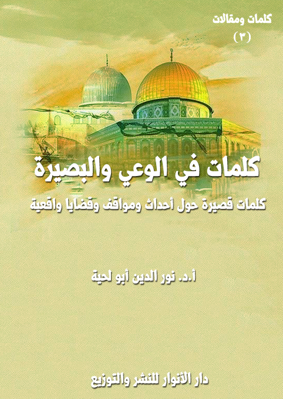

الكتاب: كلمات في الوعي والبصيرة
الوصف: كلمات قصيرة حول أحداث ومواقف وقضايا واقعية
السلسلة: كلمات ومقالات
المؤلف: أ. د. نور الدين أبو لحية
الناشر: دار الأنوار للنشر والتوزيع
الطبعة: الثانية، 1443 هـ
عدد الصفحات: 137
ISBN: 978-620-3-86007-8
لمطالعة الكتاب من تطبيق مؤلفاتي المجاني وهو أحسن وأيسر: هنا

يحوي الكتاب مجموعة من الكلمات القصيرة حول المواضيع التالية:
1. الحاكمية والعلمانية: وهو حول الحاكمية الإلهية ومفهومها وضرورتها والعقبات التي تحول دون تحقيقها في الواقع.
2. الثورة وشروطها: وفيه أنتقد بعض المظاهر السلبية للحراك والثورة، والتي لم تتوفر فيها الشروط الصالحة للثورة الناجحة.
3. العلم والرسالية: وهو حول العلم وعلاقته بالرسالية، وفيه نقد لأهل العلم الذين لا يؤدون أدوارهم التي يكلفون بها.
4. العربية والشعوبية: وهو في الرد على الشعوبية والقومية وكل الدعوات العنصرية، بالإضافة إلى بيان فضل اللغة العربية ومكانتها.
5. الوطنية والمواقف: وهو في الرد على من يتوهمون خلوهم من المسؤولية عما يقع في سائر البلاد بحجة عدم كونهم من سكانها.
6. المقاومة والشهداء: وهو حول تمجيد المقاومة الشريفة، وفضلها، وعظمة الشهداء الذين يسقطون فيها.
7. الاستكبار والفتن: وهو حول المعتدين الظالمين المستكبرين، والمؤامرات والفتن التي ينشرونها.
8. الفن والفتنة: وهو في الرد على من يستعملون الفن لنشر الفتن.
9. الإبداع والوعي: وهو في الدعوة للفن الرسالي النبيل، الذي يؤدي دوره في المقاومة والشهادة.
10. دول ومواقف: وهو حول بعض المواقف والأحداث الخاصة ببعض الدول الإسلامية وغيرها.
مقدمة الكتاب
يحوي هذا الكتاب مجموعة من الكلمات القصيرة التي نشرتها في أوقات مختلفة، إما من خلال سجالات ومناقشات جرت على وسائل التواصل الاجتماعي، أو نشرتها ابتداء من باب الإفادة والنصح.
وقد حاولت أن ألخص فيها المعاني الكثيرة المرتبطة ببعض الأحداث والمواقف والقضايا المهمة والواقعية، سواء تعلقت بالجانب السياسي، أو غيره من الجوانب.
ويحوي الكتاب المواضيع التالية:
1. الحاكمية والعلمانية: وقد ذكرت فيه الكلمات المرتبطة بالحاكمية الإلهية ومفهومها وضرورتها وجمالها والعقبات التي تحول دون تحقيقها في الواقع، وخاصة بسبب الممارسات الخاطئة في تنفيذها أو الدعوة إليها.
2. الثورة وشروطها: وقد ذكرت فيه الكلمات التي أنتقد فيها بعض المظاهر السلبية للحراك والثورة، والتي لم تتوفر فيها الشروط الصالحة للثورة الناجحة.
3. العلم والرسالية: وقد ذكرت فيه الكلمات المرتبطة بالعلم وعلاقته بالرسالية، وفيه نقد لأهل العلم الذين لا يؤدون أدوارهم التي يكلفون بها.
4. العربية والشعوبية: وقد ذكرت فيه الكلمات المرتبطة بالرد على الشعوبية والقومية وكل الدعوات العنصرية، بالإضافة إلى بيان فضل اللغة العربية ومكانتها العظيمة لعلاقتها بالمصادر المقدسة، وفيه رد مفصل على الذين يحتقرونها ويهونون من شأنها.
5. الوطنية والمواقف: وقد ذكرت فيه الكلمات المرتبطة بالرد على من يتوهمون خلوهم من المسؤولية عما يقع في سائر البلاد بحجة عدم كونهم من سكانها، وفيه كذلك
كلمات في الوعي والبصيرة (5)
بيان لأهمية إبداء المواقف وضرورتها الشرعية، لعلاقتها بالأمر بالمعروف والنهي عن المنكر.
6. المقاومة والشهداء: وقد ذكرت فيه الكلمات المرتبطة بتمجيد المقاومة الشريفة، وفضلها، وعظمة الشهداء الذين يسقطون فيها.
7. الاستكبار والفتن: وقد ذكرت فيه الكلمات المرتبطة بالمعتدين الظالمين المستكبرين، والمؤامرات والفتن التي ينشرونها.
8. الفن والفتنة: وقد ذكرت فيه الكلمات المرتبطة بالرد على من يستعملون الفن لنشر الفتن.
9. الإبداع والوعي: وقد ذكرت فيه الكلمات المرتبطة بالدعوة للفن الرسالي النبيل، الذي يؤدي دوره في المقاومة والشهادة.
10. دول ومواقف: وقد ذكرت فيه الكلمات المرتبطة ببعض المواقف والأحداث الخاصة بالدول التالية: فلسطين .. واليمن .. وسورية .. وإيران .. والعراق .. وتركيا .. وأفغانستان .. ولبنان .. والجزائر .. وتونس .. والخليج .. وأمريكا .. وروسيا .. والهند .. والصين.
كلمات في الوعي والبصيرة (6)
1. ما دمنا نبعد الله عن شؤوننا السياسية والاقتصادية والاجتماعية والشخصية، فلن ننال أي بركة، فكل شيء لا يبدأ باسم الله أبتر.
2. لو أن الأنبياء اكتفوا بالدعوة للدين الشخصي لما حوربوا، ولكنهم دعوا إلى الدين الذي يشمل جميع مظاهر الحياة ويحكمها ويتحكم فيها.
3. يضعنا البعض بين أمرين كلاهما مر: إما الإسلام الداعشي، أو العلمانية الغربية، وينسون الإسلام المحمدي الأصيل الذي لا حل للبشرية غيره.
4. مع أني أختلف مع الإسلاميين في بعض ممارساتهم الدعوية، إلا أنني لا يمكن أبدا أن أخالفهم في حاكمية الشريعة الإسلامية على جميع الشؤون.
5. من تناقضات العلمانيين أنهم يقبلون كل الأيديولوجيات حتى لو كانت متطرفة، إلا الإسلام مع أنه في قمة المثالية والعقلانية والتسامح.
6. الذي يدعو إلى إبعاد الدين عن السياسة يردد من حيث لا يشعر: دعوا ما لقيصر لقيصر، وما لله لله، مع أن لله كل شيء: قيصر، وما لقيصر.
7. من العجيب أن يسمح لكل الناس بالكلام في السياسة إلا الفقهاء، ولست أدري هل ذلك لضعف عقولهم عن فهمها، أم لنجاسة السياسة وسخافتها؟
8. اهتمام الحركات الاسلامية بالحرية والديمقراطية وفق المنهج الغربي،
كلمات في الوعي والبصيرة (7)
جعلها تتخلى عن مبادئها، وتتحول إلى حركات علمانية في ثوب إسلامي.
9. الحاكمية الإلهية ليست مبدأ إخوانيا، وإنما هي حقيقة وجودية جاء الأنبياء جميعا للدعوة إليها، وخطأ بعض من دعا لها لا يبرر النفور منها.
10. الرفاه الذي ينعم به الغرب لا يعني نجاح ديمقراطيته وحسن تسييره فقط وإنما يعني ايضا نجاحه في سلب الشعوب المستضعفة وخاصة تلك التي تسبح بحمده.
11. إن أردتم أن تحققوا الرفاه الذي ينعم به الغرب ولو على حساب دينكم فيمكنكم اختيار رئيس مجرم مثل ترامب واقامة علاقات مع كل الدول المشبوهة.
12. أنا لا أنكر الدعوة للتحضر أو التقدم وفي جميع المجالات، لكني أنكر ربط ذلك بالغرب، فالغرب يمثل انتكاسة القيم البشرية، ولا يصح اعتباره نموذجا.
13. أحسن تسمية تنطبق على أمريكا ومن تبعها هي [محور الاستكبار العالمي]، ولا يمكننا أن نجد في هذا المحور أي قيمة حضارية يمكن التأسي بها.
14. لا يمكن للمستلبين ثقافيا وحضاريا للغرب أن يؤسسوا دولة متحضرة ذات سيادة .. ذلك أن أول شعار لتلك الدولة هو: لا شرقية ولا غربية.
كلمات في الوعي والبصيرة (8)
15. أتعجب من الإسلاميين الذين يطالبون بالحرية، ومن دون قيود، مع علمهم أنه يمكن أن يستثمر ذلك دعاة الإباحية والانحراف لتبرير سلوكاتهم.
16. العجب من الذين يدعون للغرب وينبهرون به مع أن كل مصائبنا منه .. وهل يمكن لعاقل أن ينبهر بالمجرم الذي يشيد دنياه على حساب قيمه؟
17. كل حركة تغييرية لا تعتمد الدين الإلهي الأصيل مصدرا وغاية لن تجني إلا نوعا جديدا من الفشل .. وكل الثورات في بلاد المسلمين شاهد على ذلك.
18. لو طبقنا المقاييس التي يذكرها دعاة الحرية على سليمان عليه السلام لاعتبروه مستبدا ولدعوا للثورة عليه واعتبروا قصته مع الهدهد دليلا.
19. الدولة الإسلامية التي نحلم بها، ونعمل لها، ولا نؤمن بغيرها هي دولة الأنبياء والأولياء والقيم النبيلة، وما عداها أوهام وتيه وسراب.
20. من أراد أن يشاهد الديمقراطية في أبشع صورها، فلينظر إلى أمريكا وجشعها ونهبها وحربها وإباحيتها وكل أصناف شذوذها.
21. الشعب الذي ينتخب مجرما مثل ترامب، ويأكل من الأموال الحرام التي يجلبها له، شعب متخلف، وإن سكن ناطحات السحاب.
22. صاحب الهمة العالية من يدعو المجتمع إلى مستواه، لا الذي ينزل إلى مستواهم .. هكذا فعل الأنبياء مع أقوامهم، ولكم في يوسف والسجناء
كلمات في الوعي والبصيرة (9)
عبرة.
23. المستلبون إيمانيا وحضاريا يتوهمون أن خلاصهم في الليبرالية، وهم لا يعلمون أن مآلها السقوط مثلما حصل للشيوعية التي تعلق بها من قبلهم.
24. نعوذ بالله من ديمقراطية تجعل من المهرجين والمنحرفين والساقطين والشواذ حكاما ومسؤولين، حينها سنبكي على تخلفنا واستبدادنا.
25. يتوهمون أن الغرب قد تخلى عن الصراع مع المستضعفين وأنه صار أكثر سلاما وهذا وهم كبير فالذئب لا يمكن أن يصير خروفا ولو ارتدى معطف صوف.
26. الدولة التي لا تلزم أبناءها بالستر والاحتشام دولة فاشلة، لأنها تعاقب من يسرق أموال الناس، ولا تعاقب من يسرق أخلاقهم.
27. جمعيات حقوق الإنسان لم تنكر على الشاه ولا على أتاتورك فرضهما للتبرج والانحلال، ولكنها تنكر على إيران فرضها للحجاب والحشمة.
28. عندما تفقد السياسة روح الإيمان والأخلاق يتحول التداول على السلطة إلى تداول على اللصوصية، حتى يستفيد كل اللصوص من الفرص الديمقراطية.
29. عندما ذهب لوط عليه السلام إلى قومه، لم يدعهم إلى التداول على السلطة، وإنما دعاهم إلى تهذيب أخلاقهم، فلا يتحقق بالإنسانية من لم يسع
كلمات في الوعي والبصيرة (10)
لإصلاح العالم، وهو لم يصلح أخلاقه.
30. أخطر ما فعله المتآمرون على الإسلام أنهم طرحوا نماذج مشوهة عن تحكيم شريعته والمطالبة بها حتى صار المسلمون أنفسهم يطالبون بالعلمانية.
31. الطريق إلى حاكمية الشريعة يكون من خلال نشر القيم الإيمانية والروحية والأخلاقية، وليس من خلال صناديق الانتخابات، ولا غيرها.
32. من العجائب أن بعضهم يذهب إلى القرى التي لا تختلف عن عاد وثمود وقوم لوط، وبدل أن يدعوهم إلى اتباع الأنبياء عليهم السلام، يدعونا إلى التأسي بهم.
33. الغرب الذي تسبحون بحمده هو الذي يحاصر المستضعفين وينهب الأثرياء وينشر الفتن وينظر إليكم كعبيد وتأبون إلا أن تسجدوا له .. أف لهممكم.
34. عجبا للذين يحبون فرنسا ويحنون إليها، وهم يرون في كل شارع أو مدرسة أو مستوصف اسما لبعض قتلاها، أما امتدادات جرائمها فلا حدود لها.
35. استطاع الشيطان وأدواته من أعداء الحاكمية الإلهية تحويلها من مشروع إلهي لخلافة الإنسان إلى أحزاب وجماعات متناحرة باسم الإسلام.
36. لا ألوم علمانيا ملحدا لأنه لا يعرف الله ولا غير المسلمين لأنهم لا يعرفون أي شريعة إلهية لكن المستحق للوم المسلم الذي يتجاهل شريعته.
كلمات في الوعي والبصيرة (11)
37. لست أدري كيف يلاقي الله أولئك الذين احتقروا شريعته وتوهموا قصورها عن حل كل مشاكل الحياة مع أن الله هو خالق الحياة والعليم بأسرارها.
38. من تناقضات العلمانيين نفورهم من الشريعة التي تعاقب المجرمين في الوقت الذي يعظمون من صنع القنابل النووية ورماها على النساء والأطفال.
39. لو حسبنا عدد الأيدي التي قطعت بسبب حد السرقة في التاريخ جميعا لما عادلت عشر عدد الأطفال الذين قتلتهم العلمانية في قرن واحد.
40. شريعة الله هي منهج تحقيق ربوبية الله لعباده، والحدود تأديب للنفوس التي تتمرد على المنهاج، والاقتصار عليها تلاعب بالشريعة واستهزاء بها.
41. الذي يرفض تحكيم الشريعة بسبب أخطاء من يدعو لتطبيقها مثل الذي ينكر الطب لأخطاء وقع فيها بعض الأطباء مع أن الحق لا يتأثر بخطأ مدعيه.
42. الذي يرفض تحكيم الشريعة بسبب حدودها، كالذي يرفض إرسال أبنائه إلى المدرسة لكون معلميها يؤدبون المشاغبين، وهذه حجة الحمقى والمغفلين.
43. الذين يكرهون تطبيق الحدود الشرعية لم يشعروا بآلام الأم التي
كلمات في الوعي والبصيرة (12)
اختطف ولدها، وبدل أن يعدم الخاطف، أدخل السجن، ليتبادل الخبرة مع رفاقه.
44. لو طبق حد الحرابة على تلك القاذورات البشرية التي تتربص بالنساء لتهينهن، لارتدعت كل النفوس الأمارة، وكان ذلك أبلغ من كل المواعظ.
45. العارف بالله لو طلب الله منه تقطيع يده لقدمها له مبتسما راضيا، والجاحد لله لو طلب الله منه تقطيع يد السارق لراح يجادله فيها.
46. عندما طلب الله من الخليل أن يذبح ابنه أسرع إلى ذلك من غير أن يستفسر عن العلة، ولا أن يبحث عن الأعذار، ولا أن يتهرب من التكليف.
47. ويل لتلك النفوس التي تستشعر الحرج أو الاحتقار لكلمات الله المقدسة وكأنها تقول من حيث لا تشعر: ليت الله لم يقل هذا وليته لم يأمر به.
48. يتهرب من الشريعة بحجة الخلاف بين العلماء ثم يذهب إلى أطباء يختلفون بينهم ويتبنى رؤى مختلفا فيها وكان يمكنه أن يفعل ذلك مع الشريعة.
49. الاختلاف في تفاصيل القضايا لا يلغيها، فهل ننكر كون المريخ كوكبا في المجموعة الشمسية، نتيجة الاختلاف في وجود الحياة على ظهره؟
50. الدعوة إلى تطبيق الشريعة في جميع شؤون الحياة واجب الأمة جميعا فردا فردا، والتقصير فيها مثل التقصير في الصلاة والزكاة وكل العبادات.
51. إن كان صاحب الشريعة غائبا فرب الشريعة حاضر وشريعته
كلمات في الوعي والبصيرة (13)
موجودة والكتاب الذي يبينها موجود والعلماء الذين يشرحونها موجودون، فلا عذر لمقصر.
52. تقصير علماء الدين وتشويه مدعيه ليس ذريعة لترك النصيحة والأمر بالمعروف والنهي عن المنكر والحسبة في كل المجالات لأنها واجب كالصلاة.
53. عندما أرى السلع الأجنبية تغزو أسواقنا، ومن كل الأنواع، أتمنى لو أن العالم قاطعنا اقتصاديا لنعود إلى ذواتنا، وننشط أيدينا وعقولنا.
54. الموقف السلبي من الشريعة لا يحتاج لإقناع العقول وإنما لتعميق الإيمان في القلوب، فهي السفينة التي لا يركبها إلا الصادقون في إيمانهم.
55. احذروا من الذين ارتدوا على أعقابهم؛ فتركوا الدعوة للدولة النبوية، واستبدلوها بالدعوة للدولة الأموية والدولة العثمانية.
56. من أراد أن يناظر علمانيا، وهو يقدس الدول التي مرت على التاريخ الإسلامي، ويدافع عن حكامها؛ فإنه سيصبح لعبة بيد خصمه يقلبها كيف شاء.
57. عجبا لأولئك الذين كانوا ينادون: (الإسلام هو الحل، والعلمانية هي المشكلة)، ثم استبدلوها بـ (مرسي هو الحل، والسيسي هو المشكلة).
58. المنتهكون لحرمة رمضان لا علاقة لهم بالحضارة ولا بالحرية؛ فالمتحضر من يحترم المجتمع وقيمه، والمتحرر من يعرف حدود حريته ويلتزم
كلمات في الوعي والبصيرة (14)
بها.
59. إن تنصروا الله ينصركم تستلزم: إن تنصروا أعراقكم وطوائفكم وأهواءكم ومشاريعكم الخالية من دين الله يخذلكم.
60. كيف لا أؤمن بنظرية المؤامرة وقد ذكرها الله تعالى فقال: {وَلَا يَزَالُونَ يُقَاتِلُونَكُمْ حَتَّى يَرُدُّوكُمْ عَنْ دِينِكُمْ إِنِ اسْتَطَاعُوا} [البقرة: 217]
61. الثورة الحقيقية هي تلك التي لا تنهض لأجل تحسين المعيشة فقط، وإنما تلك التي تبدأ بتصحيح الأفكار، وتنتهي بالعدالة في جميع مجالاتها.
62. فرق بين من يقصر في الوفاء بما تطلبه الشريعة منه وبين من يستحل ذلك ويدافع عنه فأولهما عاص قد يتوب الله عليه وأما ثانيهما فمحارب لله.
63. إياك أن تكذب ماركس وغيره في قولهم: الدين أفيون الشعوب؛ فما قالوه وصف دقيق لكل دين ابتعد عن قيم الدين الأصيل؛ والقرآن أقرهم على ذلك.
64. احذر من أن تقترب من السامري، أو تمسه؛ فهو ليس شخصية تاريخية، وإنما هو السوس الذي ينخر الأديان، ليحولها إلى أفيون للأفراد والشعوب.
65. الشريعة ليست مجرد تعاليم نطبقها، وإنما معها مواقف نتخذها؛ فمن كان قلبه مع المنحرفين المفسدين حُشر معهم، ولو عمل أعمال الصالحين.
كلمات في الوعي والبصيرة (15)
66. كيف لا تريدون للمنصرين أن ينتصروا وهم يدعون إلى [الله محبة]، وأنتم تدعون إلى الحقد على كل من يخالفكم فيما ترونه، وكأنكم آلهة؟
67. الدولة الفاسدة ليست فقط تلك التي تسلب أموال الناس، وإنما التي تسلب أخلاقهم بثقافتها وفنها وإعلامها، فأخلاق الناس أهم من أموالهم.
68. مخطئ ذاك الذي يذم السياسة مطلقا؛ فلولا السياسة الصالحة ما سيست النفوس ولا المجتمعات، ولذلك كانت ركنا من أركان الدين لا يتم إلا به.
69. [الإسلام هو الحل] حقيقة لا شك فيها، ولا جدال .. ولكن الجدال في أكثر الذين حملوا هذه الدعوة؛ فقد حولوا الإسلام مشكلة لا حلا.
70. الحاكمية الإلهية تعني حاكمية العدالة والمساواة والأخوة وكل القيم الأخلاقية والحضارية الرفيعة التي لا يمكن أن تتحقق من دونها.
71. لو أن الحركات الإسلامية تواضعت، وراحت تجيب بصدق عن سر فشلها في مشاريعها في الوقت الذي نجح فيه الإيرانيون، لتحقق لها ما تريد.
72. تمنيت لو أن الحركات الإسلامية تواضعت ودرست التجربة الإيرانية بوعي وبصيرة وسلامة قلب، لتتفادى فشلها في كل المحال.
73. ما ابتليت [الحاكمية الإلهية] بشيء كما ابتليت بالدعاة لها؛ فأكثرهم خلط الدعوة لها بأهوائه؛ فلذلك نفر الكل منها من غير معرفة بها.
كلمات في الوعي والبصيرة (16)
74. الحاكمية الإلهية أعظم من أن تنحصر في السياسة؛ فالإسلام شامل للحياة جميعا، والحياة أكبر من أن تقيد في جانب من جوانبها.
75. لو أن الحركات الإسلامية طبقت شمولية الإسلام؛ فبدأت بالفرد والمجتمع قبل السياسة والدولة لحققت أهدافها من أقرب السبل وبأقل الخسائر.
76. لا حرج عليك أن تنتمي لأي حزب أو حركة أو طريقة .. يكفي فقط ألا تسلم لهم عقلك؛ فهو أمانة الله لديك، وأنت وحدك المؤتمن عليها.
77. لا أنصح أي عالم أو باحث أو مفكر بتقييد نفسه بأي تنظيم أو جماعة وإلا تحول إلى مجرد مسوغ لا يوضع في الأدوية فقط وإنما في السموم أيضا.
78. أرادت الحركة الإسلامية الوصول إلى القمة من غير تهيئة كافية للقاعدة؛ فضيعت القمة والقاعدة.
79. لم ينجح الإخوان في شيء كما نجحوا في صناعة الأعداء؛ فبعد إقالة مرسي تحول أكثر الشعب والجيش المصري عندهم إلى أعداء، وبطرفة عين.
80. من يخترق المراحل ولا يحترمها كمن يهتم بطلاء جدران بيته قبل اهتمامه بإقامته على أرض صلبة وأسس متينة فلذلك قد يسقط عليه في أي لحظة.
81. دعاة ما يسمى الإسلام التقدمي أو اليساري وغيرهما لا يحاولون رفع الواقع إلى مثل الإسلام وقيمه وإنما ينزلون به إلى دنس الواقع وآفاته.
كلمات في الوعي والبصيرة (17)
82. حركات الاسلام التقدمي واليساري اتجاهات متأثرة جدا بالحضارة الغربية بشقيها الرأسمالي أو الشيوعي، وذلك سبب ابتعادها عن الإسلام الأصيل.
83. عجبا للذي يدعو إلى الحاكمية الإلهية، وهو يستعمل كل وسائل الخداع والتضليل لحرب الدولة الوحيدة التي تأسست عليها.
84. المعارضة المطلقة كالولاء المطلق .. كلاهما يتنافى مع العدالة التي تضع لكل حالة حكمها الخاص .. فالتعميم لا ينشأ عنه إلا الخطأ والخطيئة.
85. كل المنظومات السياسية والاقتصادية والاجتماعية في الإسلام مبنية على رؤيته الكونية، وعزلها عنه قتل وتشويه له، لأنها روحه وقلبه.
86. الذين يدعون إلى تطبيق الشريعة بعيدا عن تصوراتها العقدية وأذواقها الروحية، كمن يعلّم الروبوتات كيف تركع وتسجد وتسبح الله كثيرا.
87. لا يمكن تطبيق الشريعة في أي دولة ما لم يشرف على ذلك نخبة من الفقهاء الورعين الذين يجمعون بين الاجتهاد في الشريعة والوعي بالواقع.
88. توفر القابلية لدى الجمهور الأكبر من الشعب وخاصة لدى نخبته المثقفة كاف وحده لتطبيق الشريعة؛ فلا يشترط قابلية كل الشعب لاستحالة ذلك.
89. هدف الدين التعريف بحقائق الوجود والقيم الرفيعة التي تبني
كلمات في الوعي والبصيرة (18)
الشخصية الصالحة والدولة العادلة، واختصاره في الموقف من أشخاص تقزيم له.
90. لا يقتصر دور الحكومة الإلهية على توفير الرفاه والعدالة الاجتماعية، وإنما يتعداه إلى توفير كل القيم الرفيعة وكل الأسباب المحققة لها.
91. التخطيط الاستراتيجي الاستشرافي بعيد المدى هو وحده من ينقذنا من المستنقعات والأوحال التي أغرقنا فيه من قادنا من أصحاب العجلة والطيش والسفه.
92. مع احترامنا لقيمة التداول على السلطة إلا أنها قد تصبح مبررا لكل المخططات المستعجلة التي لا تختلف عن المهدئات والمخدرات.
93. بربكم كيف يمكن لسياسي مهما كان حكيما أن ينقذ دولة استشرى فيها الفساد عقودا طويلة، ثم لا يعطى الفرصة ولا الصلاحيات التي تتيح له ذلك؟
94. الخطوة الأولى لاستقرار أي دولة ورفاهها تحصيلها لكامل استقلالها وسيادتها، وإلا فإنها كالمريض الذي يكتفي بعلاج بعض أمراضه، وتقوية بعضها.
95. انتظار السياسيين تحقيق الاكتفاء الذاتي لتحقيق الاستقلال الاقتصادي عن الدول المستكبرة مثل انتظار المريض للشفاء حتى يستعمل
كلمات في الوعي والبصيرة (19)
الدواء.
96. تأجيل دعاة الإسلام التقدمي الدعوة لتطبيق الشريعة حتى يتحقق الرفاه الاقتصادي كذب ودجل؛ فالتدين قناعة لا علاقة لها بالترف ولا بالفقر.
97. كيف يتحقق لنا الاكتفاء الذاتي ونحن نحتاج إلى تقشف طويل يعيدنا إلى الاعتماد على أنفسنا؛ وكل من فعل ذلك أو دعا إليه تظاهر الكل عليه؟
98. اختصار تطبيق الشريعة في الأحوال الشخصية إهانة لها؛ فالله الذي أبدع خلق الإنسان هو الوحيد الأعلم بحاجاته، وبما يناسبه من قوانين وشرائع.
99. لا يوجد مؤمن لا يرغب في حاكمية الشريعة الإلهية لكل مناحي الحياة، والخلاف مع الدعاة لذلك ليس في هذا، وإنما في الممارسات الخاطئة.
100. اختصار إقامة الحاكمية الإلهية في ثلة محدودة من الهداة ليس تكريما لهم، وإنما تهرب من المسؤولية، واتهام لله بعدم وضع شريعة واقعية.
101. نعم الإسلام لا ينتزع أملاك الأغنياء مثلما تفعل الشيوعية، لكنه لا يسمح لهم بتعطيل أموالهم أو صرفها لغير ما تحتاجه الأمة من المصالح.
102. أول أسباب فشل الحراك العربي أن الداعين له والمحرضين عليه كانوا ممثلين ومهرجين، ولا حظّ لهم من العقل والحكمة.
103. كان في إمكان الحراكيين العرب أن يحققوا أكثر أهدافهم بالحوار والتفاوض الذي أتيح لهم، لكنهم أبوا إلا العنف، والعنف لا يأتي بخير.
كلمات في الوعي والبصيرة (20)
104. أوصانا رسول الله صلى الله عليه وآله وسلم بالرفق والتؤدة، لكن قادة الحراك العربي، وباسم الإسلام دعوا إلى العنف والفوضى؛ فحصل للأمة ما حصل لأهل جبل أحد.
105. كما أُبعد الإمام علي عن قيادة الأمة في أول عهدها ليقودها الطلقاء أبعد الحكماء والعقلاء في جميع مراحل التاريخ ليقودها بدلهم السفهاء.
106. رئيس الجمهورية المحترم هو الذي يحترم الاختلافات الدينية والعرقية في بلده .. ومن لا يفعل ذلك متطرف يخدم المتطرفين.
107. الهدف الأكبر للعمل الحركي الأصيل هو تحقيق المجتمع المسلم، لا مجرد الوصول إلى السلطة؛ فهي ليست سوى وسيلة من الوسائل.
108. لا حرج في أن تراعي أي دولة تحقيق مصالح شعبها، ولكن ليس على حساب سائر الشعوب، ولا على حساب المبادئ والقيم الأخلاقية.
109. أكل الحرام ليس قاصرا على ما يقدمه الأب لأبنائه نتيجة الكسب غير المشروع، بل أبشع منه ما يقدمه الحاكم لشعبه نتيجة لصفقات مشبوهة.
110. الشعب الذي يفرح للازدهار الاقتصادي الذي حققته له دولته من غير أن يستفسر عن مصادره آثم مثلها إن كانت المصادر حراما.
111. الدولة التي تحقق الرفاه الاقتصادي في السياحة على حساب قيم شعبها الأخلاقية المحافظة دولة فاشلة، لأنها كسبت الأموال، وخسرت
كلمات في الوعي والبصيرة (21)
الإنسان.
112. يلعنون لصا سرق جوربا من محل تجاري .. ويكرّمون لصا سرق كل مصانع حلب، ويعتبرونه من أشرف حكام المسلمين، وسبب ازدهار بلاده.
113. الإسلام أكرم وأعظم من أن يُحقق في الواقع عن طريق اللعبة الديمقراطية .. فأحلام الأنبياء ومشاريعهم لا تُحقق في الملاعب.
114. لا بأس .. اعطوني نموذجا عن حزب إسلامي واحد مثّل المشروع الإسلامي أحسن تمثيل .. وسأشهد على نفسي بأني كاذب ودجال ومخادع.
115. مشكلة الأحزاب الإسلامية الكبرى أنها أصبحت مطية للانتهازيين الذين لا تهمهم مبادئها بقدر ما تهمهم أصوات المنتمين لها.
116. بربكم كيف تسمونها أحزابا إسلامية والمنتمون لها يتنازلون عن كل مبادئهم التي انتخبهم الشعب لأجلها، لأجل البقاء مدة أطول في السلطة؟
117. للأسف في كل مرة نوجه نصائح للحركات الإسلامية بسبب ممارساتها يقولون لنا: لا تنكأوا الجراح فما فيهم يكفيهم؛ فهل هكذا تستقبل النصائح؟
118. الحركات الإسلامية لا تعوزها الحماسة، وإنما يعوزها الوعي والبصيرة والقيادات الرشيدة والمراجعات الحقيقية الجادة.
119. نعم ندعو إلى تحقيق الإسلام في الواقع السياسي، ولكن عبر توعية
كلمات في الوعي والبصيرة (22)
المجتمعات لتقبل الإسلام كمشروع سياسي وحيد، لا كخليط مع غيره.
120. كما أن العبادة لا تصح إلا بصدق الإخلاص؛ فكذلك تطبيق الشريعة لا يمكن أن يتحقق إلا فيمن لا يرضون بغيرها بديلا أو شريكا.
121. عندما تتعلمون من قادة الثورة الإسلامية الإيرانية الزهد والحكمة والتجرد حينها يمكنكم أن تمارسوا السياسة من غير أن تلطخكم بأوساخها.
122. نعم الحركيون فازوا بنسبة محترمة من الأصوات، لكن هل هي كافية لتحقيق الشرعية والقابلية؟ .. وهل هي أصوات واعية، أم مجرد فقاعات صابون؟
123. القابلية الشعبية الواعية شرط أساسي لتحقيق الحاكمية، ولذلك كان الأجدى بالعمل الحركي الاكتفاء بها، وإلا فالفشل سيظل يلاحقه في كل محل.
124. السياسي الإسلامي الحقيقي هو الذي يكون شعاره شعار الأنبياء: {لَا أَسْأَلُكُمْ عَلَيْهِ أَجْرًا} [الشورى: 23] .. وإلا فإنه تاجر بالشريعة، لا مطالب بتحكيمها.
125. الكثير الذي لا يقف معك أحوج ما تكون إليه لا ينفعك، بل يضرك ويغرك ويخدعك عن نفسك ويجعل كل حساباتك كاذبة واهمة.
126. مع أن القرآن الكريم ذم الكثرة التي لا فاعلية لها ولا جدوى منها
كلمات في الوعي والبصيرة (23)
إلا أن الحركيين للأسف وقعوا ضحية لها فلم ينتفعوا بها بل تضرروا منها.
127. المفهوم الشرعي للكثرة مرتبط بالوعي والثبات والتضحية والصدق؛ لا بالعدد؛ فرُب واحد كألف، ورُب ألف كأفّ.
128. على الحركات الإسلامية إن أرادت أن تصحح مسارها، تصحيح تصورها للأغلبية والشرعية الشعبية، بتبني المفهوم الإسلامي، لا الديمقراطي.
129. عندما أرى الهزائم المريرة المتتالية للحركات الإسلامية أتذكر ذكاء الشعب الإيراني في تحصين ثورته وحركته من كل استهداف داخلي أو خارجي.
130. الحركة التي لا تستشرف المستقبل؛ فتتوقع الهزيمة وهي في عز انتصارها؛ فتحسب لها ألف حساب .. حركة مصيرها الفشل والهزيمة.
131. عندما ننصحهم وهم في عز النصر يطلبون منا ألا نفسد فرحتهم، وإن نصحناهم عند البلاء يطلبون منا ألا نزيد آلامهم .. فمتى تراهم يستمعون؟
132. كمسلم يؤمن بشمولية الإسلام لكل مناحي الحياة، لا يمكنني إنكار حاكمية الإسلام .. الإنكار موجه للممارسات الخاطئة المشوهة لها.
133. السلفية لا تؤمن بحاكمية الإسلام بل تسلم نفسها لكل حاكم، والحركات الإسلامية فشلت في ممارساتها .. فما الحل لتحقيقها أيها الإسلاميون؟
134. السقوط الحر للإسلاميين في انتخابات المغرب دليل جديد على عدم إمكانية تحقيق حاكمية الإسلام المقدسة من خلال لعب الديمقراطية
كلمات في الوعي والبصيرة (24)
المدنسة.
135. الحركة السرورية السلفية لم تتحول إلى الإخوان، وإنما استطاعت بذكائها ودهائها أن تحول الإخوان إلى سلفية من حيث لا يشعرون.
136. نصيحة للإخوان الجدد: اقرؤوا كتاب العدالة الاجتماعية في الإسلام لسيد قطب لتخرجوا من سجون التاريخ التي دفعكم إليها خوفكم من التشيع.
137. إن شئتم أن تدركوا التحول الكبير الذي حصل للإخوان قارنوا بين كتابات قطب والمودودي مع كتابات الغضبان والقرضاوي؛ فالإخوان صاروا سلفية.
138. الإخوان تحولوا إلى سلفية منذ آوتهم السعودية إليها بعد المحن التي مروا بها، ولم يبق لهم من منهجهم إلا الحاكمية المدجنة أو المهجنة.
139. أخطر انقلاب وقع للإخوان ليس الذي وقع لمرسي، وإنما يوم تخلوا عن منهج شيخهم البنا في الوحدة والتقارب بين المذاهب الإسلامية.
140. الظاهرة السلفية أكبر من أن تنحصر في لحية أو قميص، بل هي منهج فكري منغلق قد يتبناه أكثر الناس غلوا في الحداثة والعلمانية والحركية.
141. من أراد أن يرى توظيف الأحقاد في التحليل السياسي؛ فليستمع للنفيسي؛ فهو أحسن من يستعمله للتنفيس عن أحقاده وأحقاد أتباعه، وما
كلمات في الوعي والبصيرة (25)
أكثرهم.
142. الديمقراطية التي تضع الحكيم والصعلوك في محل واحد لا يمكنها أن تحقق العدالة لأن الصعلوك سيقضي على الحكيم لتصبح الحكومة للصعاليك فقط.
143. حسن الظن الذي أُمرنا به ينهانا أن نظن بتآمر الحركات الإسلامية على الإسلام أو المسلمين، والحذر ينهانا أن نعتبرها سالمة من أي اختراق.
144. عظم الله أجورنا وأجوركم في جودت سعيد الذي ضيعته الحركة الإسلامية، وألغته بسبب دعوته للاعنف، واستبدلته بالقرضاوي والقرني وأمثالهما.
145. احذروا من اختراق الأسباب والمراحل؛ فتلك سنة الله وحكمته .. ومن لم يتأدب معها سُلط عليه سيف عدالته؛ ومن تأدب نال فيوضات رحمته.
146. بربكم كيف نقنع علمانيا بالحاكمية الإلهية، ونحن نتبنى الأنظمة الملكية، ونعطيها المشروعية، ونوفر الغطاء الديني لكل جرائمها؟
كلمات في الوعي والبصيرة (26)
1. الطغاة لا يرهبهم الضجيج والصراخ، وإنما يرهبهم التفكير العميق، والتخطيط الصامت، والتنفيذ الحكيم، والقيادة الرشيدة.
2. الهبات الشعبية فرص تمر مر الريح، فإذا لم تستثمر جيدا، وبطريقة صحيحة عادت الشعوب إلى نومها، وعاد الطغاة والمفسدون من جديد.
3. المشكلة لا تكمن في الافتقار للكفاءات، وإنما في الكبرياء الذي يحول دون الاستفادة منها، ولذلك لا ينجح أي حراك يفتقر إلى التواضع.
4. كما أن صلاة الجماعة لا تصح من دون إمام فكذلك حركة المجتمع لا تصح من دون القيادة التي توحد وجهتها وتكسبها فعاليتها وتضمن استمرارها.
5. كل حركة لا تؤسسها العقول الممتلئة بالصدق والإخلاص ستلتهمها العقول الممتلئة بالمكر والخديعة.
6. من يدرس كيف أدار الإمام الخميني الثورة الإيرانية يدرك جيدا أن الثورة التي لا يديرها القائد المحنك جعجعة بلا طحين.
7. إذا لم توضع الآليات الصحيحة لمواجهة الفساد فإن اللصوص القادمين لن يقعوا فيما وقع فيه ذلك المغفل الذي راح يفر بما سرقه عبر الحدود.
8. الحلول الجزئية ليست سوى مسكنات لا تقطع جذور المشكلة، وإنما
كلمات في الوعي والبصيرة (27)
تخذر موضعها، لينتشر المرض بعد ذلك بطريقة صامتة.
9. لا حرج عليك أن تستشهد بالثورة الفرنسية أو الشيوعية أو أي ثورة في العالم ما عدا الثورة الإيرانية لأنك إن فعلت ذلك فأنت خائن أو عميل.
10. من أخطر ما تسرق به الهبات الشعبية إمطارها بوابل الإشاعات لتغرق فيها، وتتيه عن أهدافها الكبرى ليتسلم زمامها لصوص جدد.
11. فلنفرض أنه بعد انتصار الحراك قامت دولة علمانية متوحشة ألسنا نعتبر حينها كل من تحرك في ذلك الحراك داعية لتلك الدولة ولا يعذر بجهله؟
12. لا يمكن لأي حراك في الدنيا أن ينجح ما لم يضع البدائل، ويتفق عليها، وإلا تهدم كل ما بناه .. لأن الهدم أسهل من البناء.
13. الذين يدعون إلى حكم الشعب يدعون إلى دكتاتورية تصادر فيها كل الحريات، حيث يتحول كل فرد إلى حاكم وقاض وجلاد.
14. العاقل لا ينتمي للموالاة، ولا للمعارضة، بل هو مع الحق في أي طرف كان والذي يحشر نفسه في أحدهما، سيقع في تأييد الباطل ومعارضة الحق.
15. أنصح الكفاءات المنتمية للأحزاب أن تستقيل منها، حتى تخدم بلدها بعيدا عن النظرات الحزبية الضيفة، فالأحزاب مقبرة الكفاءات.
16. إن عز عليكم أن تتفقوا على قائد يمثل البلاد جميعا يمكنكم أن تشكلوا لجانا لكل ولاية فهي خطوة مهمة للوصول إلى القائد المجمع عليه.
كلمات في الوعي والبصيرة (28)
17. كانت كل أماني أن يتفق المتظاهرون على القائد البديل قبل انتهاء المعركة، خشية أن يتفرق الذين جمعتهم الحرب عند اقتسام الغنائم.
18. مع أنه المجدد الوحيد الذي استطاع أن يحول من كل أفكاره واقعا حيا إلا أن الحسد لم يكتف بإخراجه من المجددين وإنما وضعه في الزنادقة.
19. الدولة التي تنشط سياحتها وثقافتها على حساب قيمها دولة متخلفة، وإن اعتبرت دولة متطورة؛ فالقيم تمثل الإنسان، ولا قيمة لدولة بلا إنسان.
20. فشل الوزارة لا يعني فشل الوزير، فقد يكون سبب فشلها أبسط موظف من موظفيها.
21. أخطر ما يهدد الحركات التغييرية المراهقة السياسية التي لا تتقن فنون التخطيط الدقيق، ولذلك تصبح ضحية لخدمة أعدائها من حيث لا تشعر.
22. هل ترون لمن ينشق عن حزبه كل مرة يفصل فيها عن القيادة، ويؤسس حزبا جديدا، يرضى أن يتقدم عليه أحد في الحراك، أو يقوده، أو يمثله؟
23. لست متأكدا، ولكني أخشى أن يكون لقادة الأحزاب السياسية دور في الحيلولة دون تمثيل الحراك خشية على مراكزهم، أو مراكز أحزابهم.
24. أرى كاقتراح لتمثيل الحراك إجراء منافسة بين الولايات لأول لجنة تمثل الولاية لتكون أسوة لغيرها من الولايات وبذلك يمكن الوصول للقيادة.
كلمات في الوعي والبصيرة (29)
25. أنا لا أؤمن بالنخبة التي يكون دورها في الحراك مجرد حبر يكثر سواد المتحركين، ويردد شعاراتهم .. دور النخبة أعمق.
26. مع احترامي الشديد لطلبتي إلا أني لن أقبل منهم أي تقصير في دراستهم وبحوثهم بذريعة الانشغال بالمطالب السياسية؛ فدراستهم أهم وأوجب.
27. أول ما آلمني في الحراك ذلك الموقف السلبي من أئمة المساجد، والذي لم يراع حرمتهم، ولا الأدب معهم، ولو في ظل الاختلاف.
28. زج التلاميذ والطلبة وتوقيف الدراسة من أجل المطالب السياسية يدل على ضيق الأفق الذي يعاني منه المخططون لذلك.
29. النضال الثوري الذي يكتفي بالسير في الشوارع، ويقصي النخبة، ولا يحب إلا سماع كلمات الثناء والتمجيد نضال فاشل، ولن يغير شيئا.
30. الثورة الناجحة هي التي تضع لكل مشكلة حلها المناسب، والذي ينتهي بها إلى النصر، لا التي تسجن نفسها في قوقعة مغلقة ذات باب واحد.
31. انتهى وقت الشارع، وبدأ وقت الصناديق، فلا تضيعوها باستعجالكم واختلافكم؛ فلو كسبتم معركتها انتصر حراككم، وإلا عدتم لما كنتم عليه.
32. أخطر ما يهدد الحركات التغييرية المراهقة السياسية التي لا تتقن فنون
كلمات في الوعي والبصيرة (30)
التخطيط الدقيق، ولذلك تصبح ضحية لخدمة أعدائها من حيث لا تشعر.
33. حتى لا تقعوا في أخطاء الماضي، لا تتعرضوا للمواجهة، واستعملوا الطرق القانونية فهي أيسر وأجدى، ودعوا للذي تنتخبونه إكمال المسيرة.
34. كانوا قبل فترة يشيدون به وبالتزامه ودينه وكونه نموذج القيادي المسلم، لكنهم اليوم يطالبون بمحاسبته واعتباره من العصابة .. فبمن نثق؟
35. مع أن التعددية الحزبية ظاهرة طبيعية في جميع دول العالم إلا أنها في بلادنا تشكل عقبة كبرى دون اتحاد الشعب لتحقيق غاياته في الإصلاح.
36. الجماعات الضاغطة في الدول المتقدمة أكثر تأثيرا من الأحزاب لانحصار أغراضها في تقديم الخدمات لا في جناية المناصب فما أحوجنا إليها.
37. الحراك الحقيقي هو الذي يضع منهجا وخطة تمتد لتعالج مشاكل المستقبل، ولا تكتفي بالحلول الآنية التي قد تجد من يتفلت منها.
38. البحث عن شفافية الانتخابات دون الاتفاق على المرشح، كالتلاميذ الذين يطلبون من أستاذهم عدالة التصحيح دون الاهتمام بالتحضير للامتحان.
39. ما أسهل أن تولد عصابة جديدة عبر الصناديق حتى لو كانت شفافة، ما دام الإعلام هو الذي يعطي الأولوية لمن يريده أصحاب المصالح.
40. لو أن ما بذل من جهد لمتابعة اللصوص بذل مثله لإغلاق الحانات وإزالة مظاهر الفساد ألم يكن أجدى أم أن الدين والأخلاق آخر شيء نفكر فيه؟
كلمات في الوعي والبصيرة (31)
41. يمرون في حراكهم على الحانات، فلا تتحرك قلوبهم للإنكار عليها، ثم يتعجبون من عدم مباركة الله في حراكهم وحركاتهم؟
42. لو أن الذين تحركوا للمطالبة بتنحية الباءات أضافوا إليها المطالبة بتنحية الموبقات .. ألم يكن ذلك أجدى لهم في دينهم ودنياهم؟
43. يملأ زجاج محله بالصور الفاضحة، ثم يخرج متظاهرا للمطالبة بتنحية المفسدين، ولا يطالب نفسه بتنحية ما ينشره من فساد.
44. ديوث ذلك الذي يتحرك إذا سرق اللص ماله، ولا يتحرك إذا سرق المفسدون عرضه .. وعرضنا هو ديننا وأخلاقنا وقيمنا.
45. للفساد طرفان الشعب والدولة .. ومن التطفيف في المكاييل أن نطالب الدولة بالكف عن فسادها، ولا يطالب بعضنا بعضا بذلك.
46. كل حركة لا تعتبر الدين جزءا من مطالبها أو على رأس مطالبها ستفشل، ولن تجني إلا السراب، فلا بركة لمن يطالب بدنياه ولا يطالب بدينه.
47. أبشروا بالمزيد من الاستبداد يا من تعزلون الدين والأخلاق وتحتقرون الدعوة إليهما، فأكبر وسيلة للاستبداد نشر الفساد.
48. من أخطر سلبيات التداول على السلطة سعي من فيها لإرضاء الجماهير لكسب تأييدها ولو على حساب المشاريع التي قد تستدعي التضحية والأناة.
كلمات في الوعي والبصيرة (32)
49. لو خيرت بين ديكتاتورية النخبة الحكيمة وديمقراطية الشعب لاخترت الدكتاتورية على الديمقراطية .. فما أكثر الشعب ولو حرصت بمهتدين.
50. كما لا أؤمن بالطبيب الذي يطلب من مريضه مشاركته في كتابة الوصفة، لا أؤمن بالقائد الحكيم الذي يترك للعامة البسطاء تحديد مسار الدولة.
51. يؤسفني أن أبلغ طلبتي المقصرين في دروسهم بحجة الحراك بأني سأتعامل معهم بحزم، ذلك أن الذي لا يستطيع تغيير نفسه لن يستطيع تغيير واقعه.
52. إن ظفرتم بالحاكم أو الوزير أو المدير النزيه صاحب الكفاءة، فلا تفرطوا فيه بحجة التداول على المناصب .. فما تفقدونه قد لا تجدوا مثله أبدا.
53. أرجو من الذين يدعون إلى الإضراب عن الدراسة أن يستبدلوه بالإضراب عن الطعام، فهو أكثر تأثيرا، وصداه يصل للعالم أجمع.
54. كانوا يشيدون كل حين بجودت سعيد ويعتبرونه امتدادا لمالك بن نبي لكنه عندما خالفهم في الثورة المسلحة أقصوه، وحولوه من مفكر إلى مهرج.
كلمات في الوعي والبصيرة (33)
1. لا تغرنكم التطورات الحاصلة في العلوم الإنسانية؛ فليس كل جديد مقبول، ولا كل قديم مرفوض .. وما بعد الحداثة أبشع من الحداثة.
2. مع إعجابي بصلابة المواقف الإيرانية التي تدل على استقلالها وسيادتها إلا أن إعجابي بتطورها العلمي أشد لأنه يدل على كمال استقلالها.
3. الدولة التي لا تتطور علميا لا يمكنها أن تحقق السيادة الكاملة، لأن حاجاتها التقنية ستجعلها تذعن لشروط من يزودونها بها.
4. التطور العلمي والتقني لا يحتاج إلى مؤسسات راعية بقدر حاجته إلى نية صادقة، ودافعية كافية، وإلا فما أكثر المؤسسات، وما أقل المنتجات.
5. العالم الأناني التاجر بعلمه مثل السامري وبلعم بن باعوراء وقارون .. لم يزدهم علمهم إلا ضلالا وجهلا.
6. العالم الرسالي مثل مؤمن آل فرعون يخدم أمته في كل مكان حتى لو كان بين الفراعنة والطواغيت.
7. فضل العلماء الذي ورد في الأحاديث خاص بالرساليين أصحاب المبادئ، لا بالتجار أصحاب المصالح؛ فالملائكة أكرم من أن تضع أجنحتها لهؤلاء.
8. مع احترامنا لكل المثقفين والعلماء إلا أن قيمة كل منهم لا تتجلى في
كلمات في الوعي والبصيرة (34)
شيء كما تتجلى في رساليته وشعوره بالمسؤولية نحو دينه وأمته.
9. الكثير من الذين آواهم الغرب ووفر لهم بعض الرفاه استعملهم كعملاء وخونة دورهم التحريض على بلادهم، والربيع العربي خير شاهد ودليل.
10. أعرف الكثير من الذين عادوا من الخارج لكنهم لم يرضوا بالمناصب المحترمة التي جعلت لهم طمعا في الإغراءات التي وفرت لهم خارج بلدهم.
11. اعتمدت إيران للمحافظة على عقولها على البعد العقائدي والثوري في التعليم والتربية، لا على الإغراءات المالية والمناصب.
12. الفتوى التي ذكرت فيها حرمة كسب من أرسلوا إلى الخارج ولم يعودوا مبنية على العقد الذي وقع بين الطرفين؛ والعقد شريعة المتعاقدين.
13. من زعم لكم بأن دولته وفرت له منحة في الخارج للدراسة والبحث ثم عاد إلى بلده بعد إكمال دراسته ولم يجد وظيفة فهو كاذب.
14. العقول المهاجرة المخلصة هي التي استثمرت وجودها في الخارج لتنمية قدراتها العلمية، ثم نقلها للمستحقين من المستضعفين.
15. لو أن دقيقة من النخوة حلت في عشرات آلاف العقول المهاجرة فاشترطت على من يستعملها الكف عن الطغيان والظلم لتغير الواقع تماما.
16. عندما نتعلم فن التضحية سندرك مقدار الجرائم التي وقع فيها من
كلمات في الوعي والبصيرة (35)
ترك خدمة بلده وراح يخدم أعداءه بحجة عدم توفير الفرصة له.
17. من المؤسف أن ندعو عقولنا المهاجرة لأن تقتدي باليابانيين واليهود الذين ضحوا بكل مصالحهم لخدمة أوطانهم، لا زيادة أموالهم.
18. العقول المهاجرة لم تساهم فقط في تخلف بلادها، وإنما ساهمت في إعطاء المزيد من القوة والدعم للمستكبرين من أعدائها.
19. الشجاعة ليست خاصة بالمعارك الحربية فقط، بل أشجع الشجعان من جهر بالحق الذي اهتدى إليه وآمن به، ولو على حساب سمعته ومصالحه.
20. لم أتأثر لمظلومية عالم معاصر كما تأثرت لمظلومية حسن بن فرحان المالكي؛ فهو داعية محبة ووحدة وسلام، لكن المجرمين أبوا إلا منعه وقمعه.
21. التطور التقني الكبير في الحواسيب والهواتف الذكية الذي ننسبه للغرب جزء مهم منه من إنتاج علمائنا بمن فيهم العالم الجزائري بلقاسم حبة.
22. في ظل التعتيم الإعلامي للمخترع والباحث الجزائري الكبير بلقاسم حبة، كونوا الإعلام البديل ليصبح قدوة لنا، بدل المهرجين والممثلين.
23. لو أن الخوارزمي وجد الحكومات العادلة التي ترعى أعماله وتطورها، لكان لهذه الأمة السبق في كل الاختراعات المبنية على خوارزمياته.
24. من أراد أن يغير أو يتغير؛ فعليه أن يتطلع للمُثل وأن يسعى لها، فالخضوع للواقع والاستسلام له سيجعله ينزل من واقع سيء إلى أسوأ منه.
كلمات في الوعي والبصيرة (36)
1. من شعر بكونه أفضل من غيره بسبب نسبه أو لغته أو بلده أو علمه ففي قلبه كبر إبليس وحقده وغروره، ولن يتحقق بآدميته حتى يتخلص منها.
2. أنا لا أؤمن إلا باللغات الغنية بالمصادر الدينية أو العلمية أو الأدبية وما عداها لغات تواصل محلي محدود ومصيرها الزوال عاجلا أو آجلا.
3. عقدة الهوية هي ألا يحدثك صاحبها عن أفكاره أو أعماله أو طموحاته، وإنما يحدثك عن لغته وأجداده، وكأنه الوحيد الذي يملك مثل هذه الهوية.
4. الإنسان الحقيقي هو الذي يترفع عن طينه ويتحقق بالكونية التي تنقذه من كل ما يقيد روحه، فما سجد الملائكة إلا لها ولا قيمه له إلا بها.
5. عندما يكتب الأمازيع أشعارا مثل أشعار فريد الدين العطار أو جلال الدين الرومي حينها سيتعلم الناس لغتهم ويقبلون عليها .. أما قبل ذلك فما الداعي لبذل الجهد فيما لا فائدة فيه.
6. إلى الباحثين عن أنسابهم في دفاتر الوراقين، دعكم من البحث عن الأنساب المفروضة عليكم، وابحثوا عن أنساب تصنعونها بأيديكم.
7. أنا لم أسأل أبدا أحدا عن أصله، لأني أعتقد أن أصالة الإنسان في سلامة قلبه، ووعي عقله، وكرم أخلاقه، وكلها عنده لا عند أبيه ولا عند أمه.
8. كيف يهمني أصلك وأنا أعلم أخوة قابيل لهابيل، وأبي لهب لأبي
كلمات في الوعي والبصيرة (37)
طالب، ويوسف ليهوذا؟ .. فلو كانت الأبوة نافعة لكانوا جميعا في درجة واحدة؟
9. ما كرر الله قوله: {يُخْرِجُ الْحَيَّ مِنَ الْمَيِّتِ وَيُخْرِجُ الْمَيِّتَ مِنَ الْحَيِّ} [الروم: 19] إلا لنتعلم الحكم على الأشياء من خلال ذاتها وصفاتها، لا أصولها فروعها.
10. بربكم كيف تريدون ممن يجعل كل همه وحدة الأمة وتقارب قلوبها ومذاهبها، أن يقبل بأي راية يمكنها أن تمزقها، أو تنشر الصراع بينها؟
11. حتى لو سلمنا بحقك في اتخاذ راية .. فهل من الحكمة والعقل أن تكون نفس راية أعداء بلدك، ودعاة تقسيمه، بل أعداء الأمة جميعا؟
12. كما أنك تسعى لاستبدال آية المرض بآية الصحة؛ فما المانع أن تستبدل آية اللغة التي نشأت عليها، بلغة أكمل وأجمل؛ فالكل آيات الله؟
13. قيس أحب غزالة لأن عيونها تشبه عيون ليلى؛ فكيف لا أحب العربية، وهي لسان كل الذين نحبهم.
14. كيف لا أهيم حبا للعربية، وهي لسان رسول الله، وهل يرغب المحب عن لسان محبوبه؟
15. لست متشائما أبدا من مستقبل العربية، فالبشارات المرتبطة بظهور الدين مرتبطة بها أيضا، وما تمر به ليس سوى مرحلة مؤقتة ستزول حتما.
16. من حبي للعربية تفضيلي من يهجوني بها على من يثني علي بغيرها،
كلمات في الوعي والبصيرة (38)
فتلذذي بجمال كلماتها ينسيني المقصود منها.
17. وضعت إعجابا في تعليق له يقول فيه (أنت أحمق من هبنقه)، لأنه ذكرني بمثال عربي كنت قد نسيته.
18. الأدب العربي ليس من علوم الشريعة لكن قدرته على جعلك تتذوق كلمات الله يجعله من أهمها.
19. رؤيتي للتعريب أكبر من أن تنحصر في مواجهة اللغات الأجنبية، بل حتى اللهجات المحلية، لتصبح الفصحى هي اللسان المشترك الذي يوحدنا.
20. لا تكتف بتعلم العربية، بل اسع لأن تتذوق جمال بيانها، فلا يتذوق جمال البيان القرآني من لم يتذوق جمال العربية، فهي الوعاء والوسيلة.
21. يتوهم أنه بنطقه الأرقام والألفاظ الفرنسية قد صار متحضرا، ولهذا أدعوه أن يترجم لي ما قاله حتى أعيده لأصله.
22. هل رأيتم أوروبيا أو أمريكيا يقول: نعم .. أو وداعا؛ فلم تقولون أنتم: أوكي، وباي باي .. أم أنه مرض التبعية؟
23. كتابة العربية بحروف أجنبية جريمة في حق كليهما، فلكل لغة حروفها، ما عدا العربية فهي تتسع للجميع.
24. أكرم الناس في عيني من يتقن الفرنسية أو الإنجليزية لكنه لا يتحدث بهما إلا في المحال الخاصة بهما، ومع من يفهمهما.
كلمات في الوعي والبصيرة (39)
25. الطبيب الذي يأتيه المريض العامي، فيحدثه بلغة أجنبية لا يفهمها، يحتاج إلى زيارة طبيب نفسي ليؤهله لعلاج المرضى، حتى لا يزيدهم مرضا.
26. لو أضاف الطبيب إلى كل تلك العلوم الصعبة التي درسها تعلم اللغة التي يفهمه بها المريض لتحقق بالرفق والرحمة فالطب ليس مجرد أدوية توصف.
27. مثلما يفعل المتآمرون حين يدسون كل يوم لفظة أجنبية جديدة في لهجتنا العامية، دسوا أنتم بدلها كلمة فصيحة، والمنتصر من انتصر لأصله.
28. عندما يأتي من يتحدث بالفرنسية لا يعجبون منه ولا يسخرون، وإن تحدث بالعربية الفصحى عجبوا وسخروا .. ألا يدعو ذلك إلى السخرية والعجب؟
29. أعجب للجزائريين الذين يوقعون بالفرنسية، هل رأيتم فرنسيا يوقع بالعربية، أم أنه الحنين للتبعية والاستعمار.
30. ألأم الناس من يخاطبهم بغير اللغة التي يفهمون مع قدرته على ما يفهمون، فاللغة وسيلة تواصل، لا كير تكبر.
31. التقعر والتماس الغريب من الكلام لا علاقة له بالبلاغة والفصاحة، بل هو في أحسن أحواله مرض نفسي.
32. كلمات الإمام علي مدرسة لا في الحقائق والقيم فقط، وإنما في البلاغة والفصاحة أيضا.
كلمات في الوعي والبصيرة (40)
33. إن أردتم العودة للأصالة اللغوية، فابحثوا عن الكلمات العربية التي استبدلتموها باللغات الأجنبية، فتلك مقدمة الأصالة.
34. لم أر في الدول العربية أكثر من الموريتانيين احتراما للعربية وشعرها، فهم ينظمون الشعر في كل المحال، وبكل الأوزان، وفي كل المعاني.
35. لا تغرنكم صحراء موريتانيا؛ فأهلها متحضرون أكثر من كثير من العواصم العربية.
36. حاولت جهات كثيرة جر موريتانيا للتطبيع لكن شعبها أبى وحافظ ووفى.
37. نتمنى من الحكومة والدولة الجزائرية حصر اللغة الوطنية في اللغة العربية؛ فاللغات الرسمية المتعددة ليست سوى تقسيم غير مباشر للدولة.
38. نشكر ونقدّر الوزارات الجزائرية التي حصرت معاملاتها في اللغة العربية، ونتمنى أن تحذو حذوها كل الوزارات، بل الحكومة والدولة جميعا.
39. سألني عن الراية الأمازيغية؛ فقلت: لو كان الأمر بيدي لوحدت جميع رايات المسلمين في راية واحدة؛ فكيف أرضى لبلدي برايتين؟
40. قال لي: كيف تلومنا على اتخاذ راية تعبر عنا، وأنت تتبرك براية حزب الشرفاء؟ .. قلت: لأنه يمثل الأمة وقضاياها، ولا يمثل أي نزعة عنصرية.
41. لو أن لكل عشيرة راية خاصة بهم، لتحولنا إلى قبائل عبس وذبيان،
كلمات في الوعي والبصيرة (41)
أو بني الأحمر والأصفر، ولعادت داحس من جديد ومعها ناقة البسوس.
42. عجبا للذين يتوهمون أن رايتهم تعبر عن الثقافة .. هم لا يختلفون عن الشركات الوهمية التي لا تملك سوى الشعار الذي يصيد المغفلين البلهاء.
43. كيف ترجون البركات من تعدد الرايات، وقد رأيتم ما فعلت راية الثورة السورية المزيفة .. أو لم يكف حرق الشجر حتى نضيف إليه حرق البشر؟
44. رايات الضرار ليست مجرد ألوان ورموز بل هي تعبير عن انتماءات عرقية أو لغوية أو طائفية ليس لها من دور إلا تصديع الوحدة وإيقاظ الفتن.
45. ألا توبخون أنفسكم يا أصحاب الراية الأمازيغية، وأنتم تحملون نفس راية دعاة الانفصال، وموالي الصهيونية والاستعمار؟
46. يا أصحاب تعدد الرايات: احذروا من أن تصبحوا مثل صاحبات الرايات؛ فتجعلوا أنفسكم أدوات لكل فاسق فاجر، أو كل متربص حاقد.
47. ليس الشأن أن تكون لك راية تعبر عن ثقافتك، الشأن أن تكون لك ثقافة تجعل غيرك يتبنى رؤيتك؛ فنحن مطالبون بنشر الرؤى لا الرايات.
48. أنتم برايتكم الثقافية الجوفاء لا تختلفون عن الجنرالات العرب الذين يعلقون النياشين الكثيرة من غير أن يخوضوا أي حرب .. المهم هو الثقافة لا الراية.
49. عجبا للأمازيغ يكتبون لغتهم أو لهجاتهم بغير الحروف العربية؛ فهل
كلمات في الوعي والبصيرة (42)
يرون أنها أكثر عراقة من الفارسية التي لا تزال تكتب بالحروف العربية؟
50. بربكم كيف يسمى عاقلا ذاك الذي يوفقه الله لإتقان العربية، ثم يتبرأ منها، ويحقد عليها، ليستبدلها كما فعل بنو إسرائيل بالثوم والبصل؟
51. عندما تتعمق في التوحيد فستدرك أن هويتك الحقيقية محصورة فيه، وما عداه ليس سوى وسائل تعينك على البيئة التي نشأت فيها، أو اختبرت بها.
52. وقوفي ضد دعاة الشعوبية الحاقدين على العربية لا يعني وقوفي مع دعاة القومية العربية؛ فأنا لا أستبدل عنصرية بعنصرية، ولا حقدا بحقد.
53. قيمة اللغة ليس في امتدادها الزماني أو المكاني وإنما في حضورها العلمي والثقافي فاللغة التي يقتصر امتدادها على التاريخ والجغرافيا لغة ميتة.
54. من يقوم بتشويه العروبة في المغرب العربي بحجة الدول المستبدة التي حكمته لا يختلف عمن يقوم بتشويه الإسلام بسبب المتطرفين الذين ادعوه.
55. هو مغرب عربي رغم أنف كل الحاقدين والمتآمرين .. فلسان أهله عربي، وتاريخه عربي، وتراثه عربي، ولو أن أرضه تكلمت لتكلمت بالعربي.
56. اجتهدت فرنسا في عزل المغرب العربي عن محيطه العربي والإسلامي، وعندما خرجت تركت المهمة لورثتها الذين كانوا ولا زالوا امتدادا لها.
57. مع أن مصر أكثر تحضرا وأعرق تاريخا إلا أنها تفتخر بمسلميها
كلمات في الوعي والبصيرة (43)
ومسيحييها بكونها [جمهورية عربية] .. فمن أنتم يا دعاة الأمازيغية أمامها؟
58. خذوا العبرة من رشيد بن عيسى فهو مع كونه من أعرق المناطق الأمازيغية إلا أن حبه للعربية ودفاعه عنها وهو خبير اللسانيات لا يضاهيه أحد.
59. سمعت بعض المثقفين من دعاة التنوير يتحدث بأسف على موت الأمازيغية في بعض قرى الجزائر ومدنها وحلول العربية بدلها؛ بربكم أي تنوير هذا؟
60. كان الجزائريون من المناطق الأمازيغية يتنافسون على حفظ الآجرومية والألفية في النحو .. لكن دعاة العصبية حولوهم عن ذلك كله.
61. خذوا العبرة من سلمان فارس الذي لم يرد عنه حديث واحد في أمجاد قومه مع كونه من أشرافهم، لذوبانه التام في الإسلام.
62. كانوا يسمون أبناءهم عليا وفاطمة، وصاروا يسمونهم ماسينيسا والكاهنة .. فهل هذه هي الأصالة؟
63. إذا كان في إمكانك شراء سيارة جديدة قوية، فلم الحرص على سيارة متهالكة معطوبة تخدمها بدل أن تخدمك.
64. من الجميل أن تكون متقنا للغات متعددة، لكن لا تضيع وقتك إلا فيما يفيدك منها.
كلمات في الوعي والبصيرة (44)
65. نعم نحن ننكر على الدول الإفريقية تخليها عن قيمها الصالحة .. لكنا لا ننكر عليها تخليها عن لغاتها ولهجاتها الميتة، لأن في ذلك حياة لها.
66. مع اختلافي مع جمعية العلماء الجزائريين بسبب موقفها المتشدد من الطرق الصوفية إلا أني أحترمها بشدة لموقفها من العربية ونصرتها لها.
67. إن قلت: العربية والعرب، أو الأمازيغية والأمازيغ؛ فإني لا أقصد الأعراق والأنساب، وإنما اللغة واللسان؛ فالبشر عندي كلهم بنو آدم.
68. إنكاري لتعدد الرايات في الجزائر ليس مرتبطا براية الأمازيغ وحدها، بل حتى العربية منها؛ فالتعصب لا يعالج بتعصب، والخطأ لا يصحح بخطأ.
69. قمة التناقض ما تقوم به السعودية عندما تحارب اليمن، وتجوع لبنان، ثم تدعو العرب إلى مواجهة إيران خوفا من تحوله إلى امبراطورية فارسية.
70. إذا كان أعداؤنا أقنعوا إخواننا بأنهم بنو عمومة؛ فلم لا يقتنع الأمازيغ بأنهم بنو عمومة مع العرب، وتنتهي المشكلة من جذورها.
71. دعوة سورية للقومية العربية لا تحمل أي عنصرية، لأنها كالفرنكفونية والإنجلوسكسونية، ترتبط باللسان، لا بالقوميات العرقية.
72. من دلائل التآمر على الأمازيغ أن يُقصى أمثال رشيد بن عيسى وعثمان سعدي وابن نعمان ليحل بدلهم دعاة الانفصال التام عن العرب
كلمات في الوعي والبصيرة (45)
والعربية.
73. لو لم تكن العربية لغة دين وعلم وثقافة لطلبت من أهلي أن يستبدلوها بلغة أكثر جدوى ومنفعة .. فاللغات وسائل لا غايات.
74. بدل أن يفتخر دعاة الأمازيغية بأجدادهم الذين لم يكتفوا بالإسلام، بل أضافوا إليه العربية، راحوا يتهمونهم بالضعف والغفلة وقلة الرأي.
75. عجبا لمن يدعي العرفان والتصوف ثم يتحدث عن الأعراق والقوميات؛ وهل يمكن لمن عرف الله أن يتذكر اسمه ورسمه حتى يضيف إليه عشيرته وقومه؟
76. عجبا لمن يردد مقولة البسطامي عندما سئل عن اسمه: (ذهب لا أعاده الله)، ثم لا يكتفي بحفظ اسمه بل يضيف إليه أسماء كل عشيرته وقومه.
77. استبدالك لسيارة أبيك وجدك بسيارة أقوى وأقدر لا يعني انخلاعا عن أصولك فلكل عصر وسائله واللغات كالسيارات ليست سوى وسائل إيصال واتصال.
78. أقرب اللغات إلى الصوفية الفارسية، فأكثر ما كُتب في الأدب العرفاني بها ابتداء من الرومي وحافظ وسعدي والعطار .. وانتهاء بالخميني.
79. عدم وجود مصطلحات في العربية للكثير من الأمور المستجدة لا يعني عجزها، بل يعني عجزنا .. ولو أردنا لعرّبنا كل المصطلحات في يوم واحد.
كلمات في الوعي والبصيرة (46)
80. واهم من يدعي أن حكومات السوء هي التي فرضت العربية على الأمازيغ، بل هم الأدارسة الحسنيون الذين فروا إليهم، وأضرحتهم خير شاهد.
81. نقول للذين يشوهون العرب بسبب آل سعود: لم تنسون الشيخ النمر وإخوانه، أليسوا عربا؟ أم أن الأعين الحولاء الحاقدة لا ترى إلا ما تريده؟
82. لو كانت عروبة المغرب العربي مرتبطة بأي أيديولوجيا لكان الحق لكم في رفضها .. لكنها مرتبطة بالوحيين، ولذلك نالت قداستهما.
83. عجبا للذي يربط العربية بالوهابية والسلفية وآل سعود .. منذ متى كانت لغة القرآن الكريم حكرا على أي طائفة أو شعب أو عرق؟
84. عندما يكون رسول الله صلى الله عليه وآله وسلم أحب إليك من نفسك ستكون لغته أحب إليك من لغتك، لأن الحب يفني صاحبه عن كل ما يميزه أو يبعده عن محبوبه.
85. أول ما تنهار به البحوث الجينية في الأنساب كونها تعتمد خصائص الجينات المكتسبة من الآباء والأمهات، والبشر قد اختلطوا في هذا كثيرا.
86. البحث في الجينات عن الأنساب خدعة عنصرية لا علاقة لها بالعلم، والقائمون على مخابرها إما دعاة فتنة، أو محتالون يتصيدون المغفلين.
87. مع احترامي للمنتسبين لآل بيت النبوة إلا أني لا أحبذ تميزهم عن إخوانهم بمظاهر خاصة لأن ذلك قد يؤدي إلى الغرور والعنصرية والطبقية.
كلمات في الوعي والبصيرة (47)
88. قال له المذيع في حصة فضائية: مرحبا سماحة السيد، ثم استدرك: عفوا فضيلة الشيخ .. لاحظت وجه الشيخ تأثر كثيرا؛ لم كل هذا التكلف والإحراج؟
89. يردد في كل مجالسه ودروسه: (جدي رسول الله) .. لست أدري هل هو يدعو للقيم التي جاء بها، أم يستخدمه للتعريف بحسبه ونسبه؟
90. لقد كان أئمة الهدى يذكرون انتسابهم لجدهم، لا فخرا واستعلاء، وإنما ليبينوا للمنصرفين والمنحرفين عنهم أن علومهم مستمدة منه وحده.
91. هويتك محصورة في عقائدك وسلوكك ومواقفك أما لغتك وعرقك وأرضك فهي مجرد أقنعة مؤقتة للاختبار والتعايش وفي دار الحقيقة ستزول كل الأقنعة.
92. رأيت من يثني على الطوارق لحفاظهم على لغتهم وحروفهم بخلاف غيرهم .. فهل يريدون من الأمازيغ أن يتخلوا عن كل أمجادهم ليحفظوا لهم ذلك؟
93. لا تلمني على عشقي للعربية؛ ففيها من القوة والجمال والقدرة على التعبير ما يكفي لذلك .. المُلام من استبدل أقوى اللغات بأدنى اللهجات.
94. كذب من زعم أني أتمنى أن تكون العربية هي الأولى في العالم، بل أنا أتمنى فقط أن تكون الوحيدة التي يستعملها كل البشر ولا يعرفون غيرها.
كلمات في الوعي والبصيرة (48)
95. العالَم كله يسعى للغة واحدة تيسر التواصل بين جميع الشعوب؛ فما المانع أن أتمنى أن تكون لغة القرآن هي تلك اللغة التي يتوحدون عليها؟
96. من تدعوه لتعلم لغة ما فقط لكونها لغة آبائه، قد يأتي اليوم الذي يحنّ فيه لما كان يعبد آباؤه؛ فالمقدمات الواحدة لها نفس النتائج.
97. كون اللغة آية من آيات الله لا ينفي موتها بعد عجزها على مسايرة البيئات الجديدة، مثلما حصل للحيوانات المنقرضة؛ فهي أيضا من آيات الله.
98. لغة هويتك ما اكتسبتها لا ما ورثتها، مثلها مثل دينك، فهو ما اقتنعت به، لا ما فُرض عليك .. فالحرية تقتضي أن نختار ما يمثل هويتنا.
99. الذين يحرصون على الدعوة للهجات الميتة حرصا على تراث آبائهم لم لا يرتدون ما كانوا يرتدون، ويعيشوا مثلما كانوا يعيشون؟
100. أقسم بالله العظيم لو وجدت في نفسي تفرقة بين عربي وغيره لمجرد نسبته العرقية، لحكمت على نفسي بأني من شر أهل النار.
101. مبارك لتلك القرى التي تحولت إلى العربية، والعاقبة لمن بقي يتحدث بالعامية حتى يتحول إلى الفصحى التي تجمعنا جميعا.
102. أنا لست ضد الأمازيغ، ولكني ضد الحركات الأمازيغية بأنواعها لأنها إما حركات عنصرية، أو تخدم العنصرية من حيث لا تشعر.
103. لا يجد دعاة الانفصال والتحالف مع الأعداء مثل أولئك الذين
كلمات في الوعي والبصيرة (49)
يدافعون عن طروحاتهم بل يساهمون في نشرها من حيث لا يشعرون.
104. أنا مع دعاة العربية ما داموا يدعون إلى لغة القرآن؛ فإن تحولوا إلى الدعوة لأعراقهم برئت منهم؛ لأن دعواهم حينها تصير منتنة.
105. العربية هي لغة القرآن، وهي بذلك أكبر من أن تكون ملكا لأي قبيلة أو شعب، بل هي ملك لكل القلوب التي تحب ربها، وتعشق كلامه.
106. لمن لديهم حساسية دائمة أو موسمية من كلمة [عربي] فليجربوا أن يكرروا قوله تعالى: {بِلِسَانٍ عَرَبِيٍّ مُبِينٍ} [الشعراء: 195]، وستزول إن شاء الله في أقل من أسبوع.
107. لو رأيتم عشق الهنود والباكستانيين للعربية لعلمتم أنهم العرب الحقيقيون، لا أولئك الذين باعوا لغتهم، أو يستحون منها، أو يحقدون عليها.
108. كما أن الأرض لمن يخدمها؛ فالعربية لمن يتقنها، مهما كان أصله أو أرضه .. فالعربية ليست بأب أو أم، ولا تاريخ أو جغرفيا، وإنما هي لسان.
109. من علامات الإيمان الكامل أن ينسى صاحبه أصله وفرعه، وحسبه ونسبه، ولا يبقى في خاطره إلا ذلك الذي يؤمن به.
110. أسهل طريقة للتعرف على السكان الأصليين لأي دولة هو أن تبحث في هويات أهلها، فستجدها أمام خانة [الجنسية الأصلية] .. هذا فقط.
111. لو انشغل الأمازيغ بأجدادهم الأدنين من العلماء والصالحين
كلمات في الوعي والبصيرة (50)
لأغنوهم عن الأبعدين الذين قد يكونون من المنحرفين والظالمين.
112. نتمنى أن تظهر حركات أمازيغية تمثل الأصالة، وتواجه الانحراف والمؤامرات، لتعيد للأمازيغ مشاركتهم الحضارية مع إخوانهم العرب والمسلمين.
113. لا مانع من أن يوضع التراث الأمازيغي القديم في المتاحف مثلما فعل العراقيون مع تراث بابل لكن أن يُطلب إحياؤه من جديد فتلك هي الجريمة.
114. عجبا للذي يسمي ابنته باسم [الكاهنة]، ألا يعلم الحكم الشرعي المتشدد في الكهانة؟ .. أم أن الحقد على العرب يجوز كل محرم؟
115. مشكلة الجزائر ليست في العرب أو الأمازيغ، وإنما في الذين ساندوا فرنسا إبان وجودها، وحنوا إلى رجوعها بعد خروجها .. وهم من جميع الجهات.
116. بدل محاولتك إنعاش لغة ميتة تعلم لغة حية قوية تستفيد منها علما أو تؤدي بها رسالة.
117. العاقل هو الذي يجتهد في تعلم اللغات التي يتواصل بها مع جميع القارات، وغيره يجتهد في اللغات التي لا تسعفه إلا فيما جاوره من الحارات.
118. لو أن سيبويه الذي أسس النحو العربي كان يحمل حقد دعاة
كلمات في الوعي والبصيرة (51)
الأمازيغية لما أتاح الله له تلك الكرامة العظيمة التي فضل بها على العرب أنفسهم.
119. هناك جهات متعددة تحرك الحركة الأمازيغية الحاقدة على العرب والعربية، بما فيها أمريكا .. فقاوموها بكل ما أوتيتم من حجة.
120. ربطك حب العترة الطاهرة ببغض العرب والعربية يشبه ذلك الذي رمى الحجر على رأس صاحبه لأجل إبعاد الذباب الذي وقع عليه.
121. لا أؤمن بالهوية الأمازيغية ولا العربية ولا أي هوية أرضية، أؤمن بهوية واحدة سماوية، وهي التي عبر عنها قوله تعالى: {هُوَ سَمَّاكُمُ الْمُسْلِمِينَ} [الحج: 78]
122. دعاة العنصرية يتوهمون أنهم بغرس الاعتزاز بالنفس لشعوبهم يرفعون هممهم، وينسون أن الحمار يبقى حمارا حتى لو ردد بكل اللغات أنه حصان.
123. نعم لا يوجد في اللغات حق وباطل، لكن يوجد ما هو أجدى وأنفع، والعاقل هو الذي يختار الأجدى والأنفع، لينتفع وينفع.
124. نعزي من يبكي على موت الأمازيغية في بعض القرى بقوله تعالى: {مَا نَنْسَخْ مِنْ آيَةٍ أَوْ نُنْسِهَا نَأْتِ بِخَيْرٍ مِنْهَا} [البقرة: 106] .. فليحمدوا الله على البديل الخير.
125. لست ضد تعلم اللغات الحية، فهي ضرورية للاستفادة والإفادة،
كلمات في الوعي والبصيرة (52)
لكني ضد تضييع الجهد في تعلم وتعليم لهجات لا ماضي علمي لها، ولا مستقبل.
126. خذوا العبرة من نهي رسول الله صلى الله عليه وآله وسلم الأوس والخزرج عن ترديد أشعار الجاهلية، لأنها ليست ثقافة وتراثا، وإنما فتنة وضلالة.
127. التقويم شهادة ميلاد للتاريخ، والعاقل من يبدأ تاريخه بالأنبياء والمرسلين، لا بالحكام والمستبدين.
128. هويتك ليست في اسمك ولا لقبك ولا جنسيتك ولا لغتك وإنما في إيمانك وخذوا العبرة بماشطة بنت فرعون التي لم نعرف اسمها لكن عرفنا إيمانها.
129. عندما تشرق أنوار الحقائق في القلوب الطاهرة ستتخلى عن كل دنس الطين الذي يخلد بها إلى الأرض؛ فالإنسان كائن سماوي نزل مؤقتا إلى الأرض.
130. هل تعبيركم عن الحقائق باللغات المختلفة يغير منها شيئا، أم تبقى هويتها ثابتة؟ .. إن تغيرت فلكم الحق في كون اللغة ركنا في الهوية.
131. ما بث الله الأنواع في الكون إلا لنختار منها ما يرتقي بنا إلى أحسن تقويم؛ وإلا فلا وجود لأي حركة جوهرية للذي يرضى بما وجد نفسه عليه.
132. عجبا للذي يعتقد أن الدعوة إلى بعض الأنواع دعوة لإلغاء الأنواع
كلمات في الوعي والبصيرة (53)
الأخرى؛ فهل حبك لطعام مفيد لصحتك يعني إنكارك لسائر الأطعمة.
133. دعواتك لاختيار أجود الأنواع لا يعني إنكار التنوع؛ فالله ما خلق لنا الأنواع إلا لنختار منها ما يتناسب مع حاجاتنا وأذواقنا وتطلعاتنا.
134. هل ترون في إنكار الله على من آثر الثوم والبصل على المن والسلوى إنكارا للتنوع؟ .. بل كان إنكارا لدنو الهمة ودناءتها .. واسمعي يا جارة.
135. أليس من دنو الهمة أن تتعلم الإنجليزية لتفهم ما أُلف بها من كتب، ثم لا تتعلم العربية لتفهم بها القرآن، وهل هناك كتاب أهم من القرآن؟
136. قوة الإنجليزية تشبه قوة الدولار؛ فهو لا يستند لمخزون ذهب حقيقي، وإنما لقوة أمريكا وسطوتها، ولو سقطت لسقط معها كل ما بني عليها.
137. كما أننا مضطرون لاستعمال الفايس مع معاييره المشددة، فإننا مضطرون للإنجليزية، لا لفضلها على العربية، وإنما لكونها لغة المتسلطين.
138. الذين يتركون ما آتاهم الله من وسائل ميسرة، ويطلبون غيرها، يشبهون أهل سبأ الذي قالوا: ربنا باعد بين أسفارنا .. وظلموا أنفسهم بذلك.
139. من أعجب المتناقضات من يدعي حب رسول الله صلى الله عليه وآله وسلم وآل بيته، ثم يبغض الأصل الذي نبعوا منه، واللغة التي تكلموا بها، والبلاد التي عاشوا فيها.
140. من يعتبر للتاريخ دورا في صياغة الشخصية الإنسانية يقول بالجبر من حيث لا يشعر؛ فالإنسان ابن اختياراته، لا اختيارات آبائه وأجداده.
كلمات في الوعي والبصيرة (54)
141. الذين يبررون جهلهم بمعاني القرآن بحجة أن فهمه مرتبط بالمعصوم، كيف ينفذون قوله تعالى: أفلا يتدبرون القرآن أم على قلوب أقفالها؟
142. إذا بذرت بذرة طيبة، لا تستعجل ثمارها؛ فالثمار الطيبة قد تحتاج زمنا طويلا لتنضج.
143. ابذر البذور الطيبة في كل محل تكون فيه؛ فإنها إن لم تنضج في حياتك، فستنضج بعدها، لينعم بثمارها من لم يروك، وتنعم بدعوات من لم ترهم.
144. لم أطلب منك أن تترك لغتك لكني طلبت أن تقدم عليها لغة كلام ربك؛ ذلك أنك لن تفهمه إلا بها، بل لن تطبق أكثر شعائر دينك بغيرها.
145. لو تعلمون عشق الإيرانيين عامتهم وخاصتهم للغة العربية لاعتذرتم إلى الله من رميكم لهم بالشعوبية؛ كيف وهم أكبر من خدم العلوم العربية؟
146. كما أنه يصعب عليك أن تمرن لسانك على النطق بالفارسية؛ فلم تلوم الفارسي الذي تصعب عليه العربية؛ فهل حرم الله عليه ما أباحه لك؟
147. أنا أعرف من الإيرانيين جهابذة في اللغة العربية لكنهم يتجنبون النطق بها، لا كبرا وإنما لكونهم يتقنون الكتابة والقراءة بها دون النطق.
148. مقولة [نحن نعتز بالعربية والعروبة] لا حرج فيها لكن احذروا
كلمات في الوعي والبصيرة (55)
فبين الحق والباطل شعرة أو شعور.
149. عجبا للذي يتعالى على الخلق بطينته .. أو لم يخبر الله أن طينة البشر واحده، وأنهم جميعا لآدم؟ وكل ما خالف ذلك مردود لمعارضته القرآن.
كلمات في الوعي والبصيرة (56)
1. الوطنية التي تجعلك تدافع عن المحتلين الذين يعتدون على إخوانك وثنية عليك أن تكسر أصنامها؛ فالحق والعدل مقدم على الحدود المزيفة.
2. لو أن الشيطان الأكبر والكيان المحتضر وقفا في أي موقف مع بلدي لوقفت ضده فيه، لأني لا أستطيع أن أقف معهما في موقف واحد.
3. إن كان حبك لوطنك يفوق حبك لأمتك فأنت تحب سايكس وبيكو أكثر من حبك لنبيك، لأن أمتك تقسيم نبيك، ووطنك تقسيم سايكس وبيكو.
4. (كذاب ربيعة أحب إلينا من صادق مضر!) لم يقلها ذلك الجاهلي قديما فقط، بل لا زال هناك من يرددها، فقط يبدل أسماء القبائل بأسماء الدول.
5. (إن غوت غزية غويت وإن ترشد غزية أرشد) ليست شعار أهل الجاهلية الأولى فقط، بل هو شعار أهل الجاهلية الآخرة، باسم الوطنية والقومية.
6. عندما قال تعالى: {إِنَّمَا الْمُؤْمِنُونَ إِخْوَةٌ} [الحجرات: 10] هل حدد منطقة جغرافية يسري عليها هذا الحكم، أم أن الأهواء هي التي فعلت ذلك لتعارض حكم الله؟
7. هل ترون أن رسول الله بثنائه على ملك الحبشة وذمه لأبي جهل وأبي سفيان يكون قد خان وطنه، يا من تغلبون الأوطان على القيم والمبادئ؟
كلمات في الوعي والبصيرة (57)
8. بربكم كيف أثق في سياسي يعمل تحت جناح المحتل الأمريكي، ولا أثق في السياسي الذي يعاقبه الأمريكي، فقط لكونه لا يرضى باحتلاله لأرضه؟
9. إيمانك بحاكمية الله على الأرض وعلى كل شيء هو الذي يجعلك تحاكم كل شيء إلى الحق والعدل لا إلى التاريخ والجغرافيا، أو الشعب والقبيلة.
10. لا بأس .. نحن نشأنا على الضلالة، ولذلك نحب الحق، ونتعصب له .. لكنكم نشأتم على الحق، وتتيهون علينا به، ثم تبيعونه بتراب الأرض.
11. ما دام الشيطان الأكبر يسمح لنفسه بأن يقوم بعملياته الأمنية في أي أرض فلم نحدّ من حركة الطيبين الذين يواجهونه فنطالبهم بالاستئذان؟
12. الذين يريدون من الشرفاء أن يستأذنوا قبل أي عملية مثل الشرطي العميل الذي يطلب من اللصوص الهرب قبل اقتحام مقراتهم.
13. الحكيم لا يهمه من يضرِب ولا أين يضرب، بل يهمه من يُضرَب؛ فإن كان عدوا ومستحقا لذلك فرح واستبشر؛ فقوتنا بقدر ضعف عدونا.
14. إذا دخل اللص فناء بيتك، ولم تستطع أن تواجهه؛ فتدخل جارك، وقام بذلك .. هل تشكره، أم تؤنبه لأنه دخل بيتك من دون إذنك ليواجه اللص؟
15. الذين يغلبون مصالح أوطانهم على مصالح أمتهم لا بدينهم يظفرون ولا بدنياهم يتمتعون فالله طلب من الدنيا أن تخدم من يخدمه لا من يخدمها.
كلمات في الوعي والبصيرة (58)
16. ترددون بألسنتكم: (وكل ما فوق التراب تراب)، ثم تنحتون من تراب بلادكم أصناما تعبدونها، وتصارعون من أجلها كل ما تدّعون الإيمان به.
17. من أراد أن يتحدث بمنطق المناطق والجهات فعليه أن يزيح عمامة العلماء عن رأسه ويرتدي بذلة السياسيين حتى لا يشوه الدين بسخافات السياسة.
18. قد نقبل من السياسي والعامي أن يتحدث متعصبا لوطنه، لكن ذلك لا يُقبل من عالم الدين، لأن الدين يمثل الحقائق المقدسة، وهي فوق الأوطان.
19. أحسن شيء يفعله الذين يرثون الزعامة باسم آبائهم ألا يفعلوا شيئا، لأنهم لن يقوموا سوى بتهديم كل ما قدمه الذين يتزعمون باسمهم.
20. السياسي الذي يدعي الوطنية ثم يتوافق مع الأمريكي ضد إخوانه وجيرانه هو عميل أمريكي لا فرق بينه وبين غيره إلا في سعر العمالة.
21. مواقفك السياسية أخطر من الغيبة والنميمة، لأنها لا ترتبط بأفراد محدودين يمكن الاعتذار منهم، وإنما بشعوب يخاصمونك عند الله فردا فردا.
22. من لم يفقه ما جرى في سورية وليبيا لن يفقه أبدا ما يجري في أوكرانيا، وسيظل فردا في القطيع الذي يرعاه الكاوبوي الأمريكي.
23. واقع في الخطأ لا محالة ذاك الذي لا يضع الحساب والميزان والجنة والنار في كل تحليلاته ومواقفه، لأنه ينظر للأشياء بعين قاصرة.
كلمات في الوعي والبصيرة (59)
24. لتكون عميلا يكفي أن تكون تابعا مقلدا لا تفكر بعقلك وإنما بعقل غيرك .. وأن تكون متسرعا طائشا تقرر من غير تدبر، وتحكم من غير علم.
25. الاسم الحقيقي لقناة العربية هو قناة العبرية، لكنها تسمت بذلك لتتلاعب بالعقول التي لا تفرق بين العروبة الأصيلة، والعروبة العميلة.
26. بربكم كيف يهتدي إلى الحق من يعرض عن عقلانية فيصل عبد الساتر وقلب الصورة، ليستمع إلى ضجيج فيصل القاسم والاتجاه المعاكس؟
27. من لا يبالي بحصار غزة وتجويع اليمن وتهديد إيران وضرب سورية وزعزعة العراق لا يحق له أن يتحدث عن الإنسانية، لأنه ليس إنسانا.
28. المواقف المتناقضة والورع البارد لا يختلفان كثيرا عن تلك المقولة الشهيرة: يقتلون ابن بنت رسول الله صلى الله عليه وآله وسلم ويسألون عن دم البرغوث.
29. نحن لسنا مختارين في اختيار ما تميل إليه قلوبنا من الأماكن فمن يحب روما أو لندن أكثر من حبه لمكة والمدينة يحتاج إلى مراجعة صحة قلبه.
30. لا نحتاج جهدا كبيرا في تحديد مواقفنا؛ فحجة الله القائمة في عالم العقيدة والشريعة، هي نفسها القائمة في عالم الولاء والبراء.
31. التناقض الحقيقي هو أن تكون مواقفك مخالفة لعقائدك؛ وهذا ما يعيشه من يحبون فلسطين، ويوالون أعداءها ويدافعون عنهم.
32. أعجبتني الإنسانية التي أبداها الكثير من أجل الطفل الذي سقط في
كلمات في الوعي والبصيرة (60)
البئر (1)، وتمنيت لو أن هذه الإنسانية ظهرت أيضا مع اليمنيين وكل المظلومين.
33. لا تدع للإعلام الفرصة ليستحوذ عليك فيوجه إنسانيتك حيث يشاء ويبعدها عما يشاء .. فأنت بإرادتك وحريتك ـ لا بالإعلام ـ إنسان.
34. الذين يفرقون في آلامهم بين أطفال الدول المستضعفة وغيرها، عنصريون ومنافقون .. فالمشاعر الإنسانية لا تعرف الحدود الجغرافية.
35. أنا لم أندد بتنديدكم، ولكني نددت بنفاق المجتمع الدولي وتنديداته التي يرسلها متى وكيف يشاء، ويقبضها متى وكيف يشاء.
36. تمنيت لو أن الجميع اقتدوا بسماحة السيد في حديثه عن الصحفية المحترمة، فهو قد استثمر المناسبة للتنديد بالكيان الغاشم، والإشادة بالفلسطينيين الأحرار وخاصة المسيحيين منهم، واكتفى بذلك.
37. عندما تفيض دموعكم على الشهيد الذي يؤمن ديته من قطر لا تنسوا أن تتركوا بعض الدموع للشهداء الفقراء الذين تهدم بيوتهم بعد استشهادهم.
38. لو أن شيرين كانت صحفية في المنار أو الميادين أو الإخبارية السورية هل ستعتبرونها شهيدة أم شبيحة يا أصحاب المكاييل المزدوجة؟
39. ليت غفران تحظى بعشر ما حظيت به شيرين من ترحم وتودد وتنديد واهتمام، لكن مشكلتها أنها مسلمة، وأسيرة محررة، ولا تعمل في قناة الجزيرة.
__________
(1) () أقصد الطفل المغربي الذي سقط في البئر، والذي اهتمت به حينها وسائل الإعلام العالمية.
كلمات في الوعي والبصيرة (61)
40. عندما تنشر باكيا كل شهيد يقع في اليمن أو فلسطين، حينها يمكنني أن أعتبرك صادقا، أما أن تسير مع الموجة، فأنت مجرد نعجة في قطيع.
41. ليت الذين أفاضوا وابل دموعهم على شيرين، يذرفون دمعة واحدة على غفران، أم أن حنفيات عيونهم لا تفتحها إلا القنوات الفضائية المغرضة؟
42. أتساءل فقط: لو كان المقتول صحفيا من سورية أو لبنان أو من محور الشرفاء هل سينددون مثلما يفعلون الآن، أم أنهم سيصمتون صمت القبور؟
43. صدقوني لو كان الصحفي المقتول من قنوات محور الشرفاء لما سمع به أحد، ولذلك هم لا يفعلون ذلك حبا لها، ولكن تلميعا للقناة المشؤومة.
44. أنا معك عندما تندد بقتل كل شهيد وشهيدة، لكن أن تنتظر التنديد العالمي لتفعل ذلك، فإن ذلك لا يعني سوى أنك فرد من القطيع الأمريكي.
45. في الشهادة الصادقة لا يصح أن نفرق بين مسلم وغير مسلم؛ فقد يكون الحق مع جورج الإعلامي المسيحي ولا يكون مع السديس خطيب المسجد الحرام.
46. العدل الذي أُمرنا به يجعلنا نثني على معاوية بن يزيد الذي رفض سياسة أبيه وجده .. ونحترم ما قام به عمر بن عبد العزيز من سياسات عادلة.
47. الولاء والبراء من قيم الدين التي جرى تشويهها من المتطرفين من المدارس المختلفة، ابتداء من محمد بن عبد الوهاب وانتهاء بياسر حبيب.
كلمات في الوعي والبصيرة (62)
48. هل يخادع الله أم يخادع خَلقه ذلك الذي يوالي أمريكا والصهيونية وكل المستكبرين، ثم يتبرأ مفتخرا من أبي جهل وأبي لهب؟
49. رحمتك للظالم أن تنصحه وتواجهه وتدعو إلى معاقبته لينزجر عن خطيئته، لا أن تدافع عنه؛ فيصر عليها، وتترسخ في نفسه.
50. لقد استطاع الأعداء أن يوهمونا أن اهتمامنا بقضايا المسلمين والمستضعفين شؤون سياسية لا علاقة لها بالدين مع أنها ركن في الدين والتدين.
51. لو تعلمون الأجور المعدة لمن يتألم لآلام المستضعفين، أو يفرح لأفراحهم، لاحتقرتم كل ما جمعتموه من أجور جراء اهتمامكم بخاصة أنفسكم.
52. أولى الناس بالشرب من حوض الرسول الأعظم، ومن يده الشريفة أولئك الذين تجرعوا كل الآلام والغصص حرصا على أمته ووحدتها وصفائها.
53. ألا يكفي ما ورد في القرآن من لعن القاعدين عن أداء أدوارهم الرسالية لنؤدي واجباتنا نحو الأمة، أم ننتظر جبريل ليتنزل بالأمر لكل واحد منا؟
54. الوطن الذي يجعلك عبدا لقومك، تعتقد ما يعتقدون، وتتخذ المواقف التي يتخذون: وثن لا وطن.
55. حب الوطن قيمة من القيم النبيلة بشرط ألا يزاحم حب الأمة، أو
كلمات في الوعي والبصيرة (63)
يتعارض مع حب الحق .. فالأمة والحق أولى من الوطن.
56. استطاع المتآمرون على الأمة أن يجعلوا من القومية والوطنية سهاما تسدد في نحر الأمة، فتنحرها من غير حرب ولا قتال.
57. ما أسهل أن تعلق براءتك بشخصيات تاريخية؛ فليس في ذلك أي اختبار .. الاختبار الحقيقي أن تطبق البراءة على ورثتهم من المستكبرين وتواجههم.
58. المسجون في قفص التاريخ لا يرى الواقع ولا يتطلع للمستقبل لم يذق طعم الولاء لأئمة الهدى .. فهدايتهم شاملة لكل حياة، ولكل العصور.
59. كاذب ذلك الذي يدعي محبة الصحابة المنتجبين، أو آل بيت النبوة الطاهرين، ثم يجثو راكعا يقبل أقدام الصهاينة والأمريكيين.
60. من لم يسمع نداء الإمام الحسين في صرخة كل طفل جائع أو شعب مظلوم، ويقف معه ولو بموقفه؛ فهو لم يعرف عاشوراء، ولم يسمع بكربلاء.
61. يبكي على حصار قريش لرسول الله صلى الله عليه وآله وسلم وعشيرته في مكة، ثم يقف مؤيدا ورثتها في حصارهم لليمن .. هل هناك كذب وقسوة وخداع أكبر من هذا؟
62. يدعي أنه يحب بلالا لكنه يرفع كل صخور الأرض مع المستكبرين ليضعها على صدور المستضعفين الذين لا يعرفون إلا الواحد الأحد.
كلمات في الوعي والبصيرة (64)
63. الاستعلاء والغرور الذي تشكل في نفسيات أكثر الشعب الأمريكي، سيتحول إلى حرب أهلية دونها كل الحروب، ليكون ذلك انتقاما للمستضعفين.
64. نعم .. الشعب الأمريكي ليس مسؤولا مسؤولية تامة عن كل جرائم رؤسائه وجيشه، ولكن شراكته فيها برضاه عنهم وتمويله لهم لا يجحدها إلا جاحد.
65. عندما أرى ترامب وأعلم أن الأزرار النووية التي يمكن أن تدمر الأرض جميعا بيده، أتيقن تماما بصدق النبوءات الواردة في الدجال الأعور.
66. العلاقات الدولية في الإسلام قائمة على السلام مع كل الأنظمة، ما عدا أنظمة المستكبرين؛ فالمسلمون مطالبون بمواجهتها، وعدم موافقتها على جرائمها.
67. عندما ترى الجميع يجتمعون على إيذاء مستضعف شخصا كان أو جهة أو دولة، ثم وقفت تتفرج دون أن تنصره أو تذب عنه؛ فأنت شريك لهم في جرمهم.
68. نعم نحن مستضعفون ولا طاقة لنا بالمواجهة، لكن ذلك لا يحول بيننا وبين أن نكره الاستكبار وننكره ونستعمل ما لدينا من وسائل للتنفير منه.
69. الفرق بين المستضعف والضعيف في توفر الوسائل والظروف
كلمات في الوعي والبصيرة (65)
واستعمالها؛ فالأول لا يملك ما يكفيه منها، والثاني لا يستعملها وإن توفرت لديه.
70. مدح الله بكاء المستضعفين الذين لم يملكوا ما يجاهدون به مع نبيهم بل اعتبرهم شركاء له فيه لأنه وإن لم تصحبه أجسادهم فقد صحبته قلوبهم.
71. المناضل الحقيقي هو الذي يستعمل كل سلاح يتاح له حتى لو كان كلمة أو صورة، لا ذلك السلبي الذي لا يعرف إلا التأفف والضجر والسخرية.
72. أعداؤه المستكبرون ينهبون خيراته ويتسلطون على قراراته، وهو لا يتحرك لمواجهتهم أو مد يده لمن يواجههم، بل يكتفي بالدعوة للعن والبراءة.
73. علامة المنحرفين عن الإسلام الأصيل عدم وقوفهم مع أي مشروع يخدم الأمة وقضاياها؛ ولذلك لا يجد الأعداء عملاء مجانيين مثلهم.
74. هناك من يفخر بأنه لم يقتل في حياته نملة، لكن سجل سيئاته مملوء بقتل ملايين البشر، لأن قلبه مع كل قاتل ظالم؛ فهو شريك لهم جميعا.
75. الأكراد شعب من الشعوب المحترمة جدا، وفيهم الكثير من العلماء والصالحين؛ فاحذروا من كل ما يشوههم فهي دعاوى منتنة وعنصرية مقيتة.
76. أبرأ إلى الله من المواقف السلبية لبعض الجزائريين من إخواننا المغاربة، فالشعوب لا تتحمل مواقف ساستها، والأخوة هي الحكم بيننا جميعا.
77. ليس كل تدخل بمنكر، فالعاقل قد يطلب من صديقه الصادق
كلمات في الوعي والبصيرة (66)
الناصح الخبير بأن يتدخل في شؤونه ليصلحها، وتكون له المنة عليه بذلك.
78. المؤمنون مهما اختلفت بلادهم مثل الأيدي يغسل بعضها، وأكثرهم صدقا في إيمانه من لا يبالي باليد التي غسلته، هل هي منه أو من غيره؟
79. إذا رأيت بيت جارك يحترق، وهو غافل عنه، هل تنتظر طلبه واستئذانه لتطفئه، أم أن مروءتك تدعوك لتفعل ذلك حتى لو عاتبك ووبخك؟
80. عجبا للذي يترك المسلسلات والأفلام الإيرانية المحتشمة، ويتفرج على التركية والمصرية؛ هربا من البدعة؛ فهل السنة في الابتذال والمجون؟
81. العلاقة مع الأوطان تكون بالعمل وفق ما تقضيه النسبة لها لا بالحب؛ فهو عاطفة مرتبطة برؤية الجمال والكمال ولا يمكن فرضها أو ادعاؤها.
82. الوطنية: هي الدفاع عن البلد وخدمة مصالحه؛ أما التزام عقائد أهله وأفكارهم ومذاهبهم من غير قناعة عقلية؛ فهي وثنية لا وطنية.
83. الإسلام واللغة العربية والوحدة الوطنية ثالوث مقدس لا يجوز لأي جهة المساومة عليها أو التلاعب بها في أي تغيير وتحت أي ضغط.
84. سألني عن موقفي من خلاف المغرب والجزائر حول الصحراء؛ فقلت: أنا مع توحد المغرب والجزائر وكل الصحارى الشرقية والغربية في كيان واحد.
كلمات في الوعي والبصيرة (67)
1. انصروا المقاومة بأي اسم تسمت، أو لون تلونت؛ فالحق لا تؤثر فيه العناوين، ولا تغيره الأسامي، والمؤمن مع الحق يدور حيث دار.
2. لا تستهينوا بأبابيل أبطال المقاومة؛ فالسجيل الذي يرمونه على الكيان الغاصب لا يقل فتكا عن سجيل أصحاب الفيل.
3. عندما نسمع خطابات قادة محور الشرفاء نرى فيها تجليات تلك الصيحات الحسينية المباركة التي لم تؤثر فيها حجب المكان والزمان.
4. الذين يطالبون محور الشرفاء بأن يبدأ الحرب الكبرى التي يُستأصل فيها الكيان الغاصب، لا يخدمون سوى الأنذال ومحورهم؛ فالاستعجال تهور.
5. اتركوا الميدان لأهله؛ فالتخطيط الاستراتيجي يستدعي العمل المرحلي والمدروس من كل الزوايا؛ وإلا لحصل للمقاومة ما حصل لأصحاب النكبة.
6. لو رأى محور الشرفاء أن الوقت مناسب للمواجهة الشاملة مع المحتل، لأعلنها، لكن الظروف لا تسمح حاليا إلا بالمواجهات المحدودة.
7. لو تدخل كل محور المقاومة في هذا التوقيت لفوت عنصر المفاجأة في كل حرب مقبلة .. قيمة ما يحصل كونه مع فصائل محدودة.
8. الذين يطالبون محور المقاومة برمي الصواريخ على المحتل الصهيوني الآن لا يعرفون الاستراتيجيات العسكرية التي لا تخضع للاستفزاز، بل هي
كلمات في الوعي والبصيرة (68)
التي تحدد الوقت المناسب، لأن الهدف ليس انتصارا محدودا، وانما انتصار شامل.
9. المتهور في ردوده لا يختلف عن ذلك الأعرابي الذي قال مفتخرا: أشبعتهم سبا، وأخذوا الإبل.
10. العقل الاستراتيجي الذكي يرد بما تستدعيه الحكمة الممزوجة بالقوة، والعقل الغبي ينفس عن غيظه؛ فيُجر لأي معركة خاسرة دون أن يشعر.
11. المسيرات والمجنحات هي الطير الأبابيل التي أتاحها الله للمستضعفين في هذا العصر لترمي كل أصحاب الفيل الظالمين ومن يتعاون معهم.
12. المؤمن هو الذي ينتصر للمستضعفين مهما اختلفت أديانهم فيقف معهم بكل ما يملك من قوة، فنحن مطالبون بنصرتهم مثلما طولبنا بدعوتهم.
13. المقاومة الحقيقية لا تهدف لري الغليل، ولا استعراض القوة، وإنما تحقيق الانتصار الأعظم ولذلك تحتاج إلى الحكمة والأناة والتخطيط الجيد.
14. قلوبنا معكم أيها الأبطال الذين تقفون مقاومين للاستكبار بكل جبروته، واعلموا أن شجرة الحق لن يقطعها كيدهم ونور الله لن تطفئه ظلماتهم.
15. بربكم كيف تريدون لفيلق الأحرار أن يؤدي دوره في خدمة قضايانا المقدسة، ونحن نحاسبه على تصرفاته الميدانية التي هو أدرى بها منا؟
كلمات في الوعي والبصيرة (69)
16. القدس وصنعاء ودمشق وبغداد وطهران وضاحية بيروت هي المحال التي تهوى إليها أفئدة الشرفاء والمقاومين، لا باريس ولا لندن ولا واشنطن.
17. محور الشرفاء ليس محاصرا، لأن معه الله وملائكته وصالحي المؤمنين .. وهو بعين الله وكلاءته وحفظه .. المحاصر هو من استحوذت عليه للشياطين.
18. تعسا لناكري الجميل الذين لم يلتفتوا لإنجازات المقاومين الأبطال في مواجهة الإرهاب، والتي لولاها ما بقيت سورية ولا لبنان ولا العراق.
19. نسوا المقابر الجماعية وأسواق النخاسة والقتل على الهوية، ولم يتذكروا سوى اختلاسات بعض المندسين الذين ساهم المستكبرون في صناعتهم.
20. لماذا تتذكرون عند ذكر المقاومة بعض الانتهازيين والمندسين وتغفلون عن الأبطال والشهداء الذين ضحوا في سبيل أمنكم وراحتكم؟
21. قوة المحور الرسالي ليس في انتقائه الدقيق للشخصيات التي تمثله ونزاهتها وكفاءتها، وإنما في قيامه على مؤسسات لا تزول بزوال الأشخاص.
22. حينما تتوفر للمستضعفين القوة التي تحميهم من المستكبرين سيتساوى الناس في الإيمان بنصر الله، أما الإيمان به الآن فهو لخاصة الخاصة.
كلمات في الوعي والبصيرة (70)
23. كان في إمكان إيران أن تمتلك السلاح النووي منذ فترة طويلة، لكنها لم تفعل، لا عن عجز، وإنما لأن قادتها يحكّمون القيم التي تحرم ذلك.
24. الرعب الذي ينصر الله به المستضعفين ليس بامتلاكهم أسلحة الدمار الشامل، وإنما بامتلاكهم للقيم التي تؤهلهم لنصر الله وتنزل ملائكته.
25. عندما تستفيق الشعوب ستعلم أن أسلحة الدمار الشامل التي يهدد بها الاستكبار لا تساوي شيئا أمام إرادتها .. فقوة الإرادة لا يغلبها شيء.
26. حرمة أسلحة الدمار الشامل ليست مرتبطة بالردع، وإنما بما تحدثه من إفساد في البيئة يمتد لقرون طويلة، وهو ضرر محض لا يمكن إصلاحه.
27. استطاع محور الشرفاء أن ينتصروا على أعدائهم من دون حاجة لأسلحة دمار؛ فالعقيدة والتخطيط الاستراتيجي الذكي هو السلاح الأعظم.
28. نعم أعداؤنا يملكون القنابل النووية وأسلحة الدمار الشامل لكنا نملك سماحة السيد وأخلاقه العالية وهي أعظم من كل قنابلهم وأكثر ردعا.
29. كتب الله أن يرث الأرض الصالحون؛ فلذلك هم أحرص الناس على جمالها وصلاحها للحياة، وهم أبعد الناس عن كل ما يخربها أو يؤذيها.
30. حروبنا مع أعدائنا مرحلة مؤقتة لا تستحق أن نخرب من أجلها الحياة بكل مقوماتها؛ ولذلك فإن بدائل أسلحة الدمار لا تحد ولا تعد.
31. محور الشرفاء يؤمن بالانتصار الشريف ولذلك لا يستعمل من
كلمات في الوعي والبصيرة (71)
الأسلحة إلا ما يضرب الخصوم الظالمين فقط، ويحرم كل ما يحرق الأخضر واليابس.
32. الذين يفتون بجواز امتلاك أسلحة الدمار الشامل لا يدركون أن فتواهم تشويه للإسلام، وحض على الصراع، وتبرير للاستكبار والمستكبرين.
33. إذا كان رسول الله صلى الله عليه وآله وسلم قد لعن من غير منار الأرض؛ فكيف الحال مع من يقضي عليها بأسلحة الدمار الشامل التي لا يبقى معها للحياة أثر؟
34. نعم أعداؤنا يملكون القنابل النووية وأسلحة الدمار الشامل لكنا نملك الأبطال العقائديين الذين يشكلون الرادع الحقيقي لكل المتكبرين.
35. الذي يستنكر ما حصل للهنود الحمر واليابانيين وغيرهم جراء الأسلحة النووية والجرثومية والكيميائية، ثم يفتي بجوازها، متناقض.
36. إن احتجت إلى فتوى ترتبط بالطهارة والصلاة فسأفتيك؛ لكن في المجال العسكري ليس لدي مرجع سوى البطلين: حسن وعبد الملك.
37. لو كانت أسلحة الدمار الشامل مشروعة لكان أولى الناس بالتصريح بذلك سيد المقاومة الذي صرح في الكثير من خطبه بحرمتها الشديدة.
38. أليس من البلاهة أن يصرح كل الفلاسفة والمفكرين ورجال الأديان المختلفة بحرمة أسلحة الدمار الشامل حرصا على سمعتهم وصورتهم، إلا نحن؟
كلمات في الوعي والبصيرة (72)
39. قتلوا أصحاب النفوس الزكية في مطار واحد؛ فأُغلقت كل مطارات العالم حدادا عليهم، ولشهور عديدة .. أليس في ذلك عبرة للمعتبرين؟
40. للذين يشمتون بشهدائنا نقول لهم مقالة الإمام الصادق في زيد الشهيد: (أمّا الباكي فمعه في الجنّة، وأمّا الشامت فشريك في دمه).
41. لا تؤذوا الشهيد؛ فإن الله يغار عليه كما يغار أحدنا على أعز الناس عليه من أن يُؤذى، أو يُمس بسوء.
42. الشهادة ليست مجرد موت في معركة، وإنما هي تعبير صادق عن قيم الإيثار والتضحية والشهامة والمحبة .. وفي أرقى درجاتها.
43. إن لم تحنوا للشهادة؛ فأحبوا الشهداء لعل الله يحشركم معهم، أو لعلكم تظفرون منهم بالشفاعة التي تنقذكم من القيود التي حرمتكم منها.
44. الشهادة ليست تضحية بقدر ما هي شرف وكرامة، ولذلك يهبها الله لمن وهب نفسه له .. فمن عاش في سبيل الله مات في سبيله، ولو على فراشه.
45. محسن أيقونة جديدة من أيقونات النضال العلمي .. ودماؤه الزكية ستجعل مستقبل المستضعفين أكثر إشراقا وقوة.
46. كان في إمكان محسن أن يعيش عمرا طويلا بمال كثير وجاه عريض وشهرة واسعة لكنه آثر الله؛ فاختاره الله ليكون من العلماء الشهداء.
47. لم يمت محسن ولن يموت فدماؤه التي اختلطت بمداده ستنبت
كلمات في الوعي والبصيرة (73)
الكثير من العلماء الرساليين الذين سيتحقق على أيديهم نصر الأمة الأكبر وعن قريب.
48. شتان بين محسن الذي بقي في بلده ليطورها علميا وتقنيا، وبين أولئك الذين باعوا عقولهم لأعدائهم بثمن بخس من متاع الدنيا القليل.
49. هنيئا لمحسن، فقد التحق بمحمدي وشهرياري ورضائي وكل العلماء الذين اغتالهم محور الشر ليتمكن من السيطرة التامة على المستضعفين.
50. بساطة العلماء والمسؤولين الإيرانيين هي التي جعلتهم هدفا سهلا لكل المتآمرين والحاقدين والمنافقين.
51. محسن مثل قاسم والمهندس، كان حلمه بعد أداء واجباته كأحلام جميع الصادقين، أن ينال الشهادة، ليختم حياته في سبيل الله بالموت في سبيله.
52. بعض الأعراب من عبيد أمريكا فرحون لاستشهاد محسن، وكأنه بيضة الديك، وهم لا يعلمون أن محسن لم يستشهد حتى خلف وراءه آلاف المحسنين.
53. لقد شاء الله برحمته لمحسن أن يموت شهيدا بعد أن أدى كل ما عليه حتى يكون حجة على المتخاذلين البائعين لذممهم لأجل حطام الدنيا الفانية.
54. الحرقة التي يجدها المتألمون لكل شهيد يرتقي هي السماد الذي تتشكل منه أزهار التضحية، وأشجار الشجاعة؛ فلا تحرموا أنفسكم منها.
كلمات في الوعي والبصيرة (74)
55. عندما يكون لنا علماء رساليين يفكر الاستكبار العالمي في اغتيالهم، لا في إغرائهم وسرقة عقولهم .. حينها فقط يمكننا أن ننتقد إيران.
56. القادة الشهداء، والأوفياء في فلسطين واليمن ولبنان وسورية والعراق والبحرين وإيران يمثلون وحدة الأمة بتكريمهم.
57. كيف لا يفرح الطاغوت الأمريكي والصهيوني بقتلك يا حاج قاسم وأنت الذي قطعت أصابعهم في كل منطقة امتد إليها طغيانهم وظلمهم؟
58. الحاج قاسم تشرف بأن يكون قاصما للجبارين، والسيف الذي قصم به ظهورهم لا يزال مشهورا يحمله كل تلاميذه الأبطال الذين تربوا في مدرسته.
59. الحاج قاسم ليس ملكا لأي طائفة، بل هو البطل المقاوم الذي استطاع أن يمثل الشخصية النبيلة التي جذبت قلوب الأحرار من كل الأطياف.
60. من العجيب أن يشيدوا بتشي غيفارا، ثم لا يشيدوا بك يا حاج قاسم مع أنك لم تترك أرضا تواجه الاستكبار إلا كنت بطلا من أبطالها.
61. مع أني لم أتشرف بلقاء الحاج قاسم إلا أن له فضلا كبيرا علي؛ فتسجيلاته القليلة كانت تبعث في من الهمة والأمل ما يبدد كل كسل وإحباط.
62. إيران تفي لشهدائها القادة من قاسم إلى زادة .. وتعلن عودة التخصيب إلى عشرين بالمائة، لتدمر كل قوانين الهيمنة والاستكبار.
63. الحاج قاسم من أبرز الممثلين في فلم الإسلام المحمدي الأصيل في
كلمات في الوعي والبصيرة (75)
هذا العصر، ولذلك أرادوا اغتياله من جديد بأفلام الفتنة والمفتونين.
64. هل تعرفون الجنرال الذي خاض كل الحروب ومن شبابه الباكر وانتصر فيها ومع ذلك يحب أن يُدعى بالحاج بدل لقبه العسكري؟ .. إنه الحاج قاسم.
65. أحسن من مثل شجاعة الإمام علي وحكمته في عصرنا اثنان: علي وحسن؛ فكلاهما شجاع، وكلاهما حكيم، وكلاهما قدم نبيه وأئمته للعالم بأجمل صورة.
66. بربك كيف يهتدي إلى الحق من يعرض عن أنيس النقاش وناصر قنديل وغيرهما من المحللين العقلاء، ليستمع بدلهم لمحللي التحريض والتطبيع؟
67. مرت سنة على ارتقاء الشهداء الكبار، والراية لم تزدد إلا ارتفاعا، والأبطال لم يزدادوا إلا كثرة، والمقاومة لم تزدد إلا رسوخا وشموخا.
68. عندما نسمع خطابات قادة محور الشرفاء نرى فيها تجليات تلك الصيحات الحسينية المباركة التي لم تؤثر فيها حجب المكان والزمان.
كلمات في الوعي والبصيرة (76)
1. لا حجة لأحد يقف مع المستكبرين ضد المستضعفين؛ فكما يوجد إعلام مضلل ومحرض ومنبطح هناك إعلام هاد وحكيم ومقاوم، والتكليف في الاختيار.
2. كل آلامنا بسبب التبعية للمستكبرين؛ فهو ما جعلنا سياسيا: لا نملك قراراتنا السيادية؛ واقتصاديا: نهب ثرواتنا لمن يزيدنا تخلفا.
3. أنا لم أمنعك من التبرئ من يزيد، لكن ذلك لا يكفي ما لم تتبرأ من يزيد الذي يسكن قلبك، ويقتل كل يوم ألف حسين ويسبي ألف زينب.
4. كل ما ترونه في الواقع المعاصر من تيارات منحرفة ومتطرفة صناعة غربية لتشويه الإسلام المحمدي الأصيل، وزرع الفتن والفرقة بين أهله.
5. لن تتخلص دولنا من الاستعباد، وتتحقق لها السيادة، حتى تتخلص من أوكار الخيانة والجوسسة التي نصبها الشيطان الأكبر ليديرنا من خلالها.
6. نعم لا يوجد في الغرب استبدادية الحاكم ولكن توجد لديه استبدادية المؤسسات والشركات، فهي التي ترسم خرائط الشعوب، وتوجهها بحسب مصالحها.
7. المستكبرون يحضرون بعد تجاوز كورونا لاستمرار التحريض على المزيد من الفوضى، فلذلك نحتاج إلى وضع كمامات لآذاننا حتى لا نتأثر
كلمات في الوعي والبصيرة (77)
بعدواها.
8. الحرب الناعمة الجديدة التي يخطط لها المستكبرون لن تظل ناعمة، لأنهم سيتبنون العقول المعطلة ويزودونها بكل وسائل التخريب والدمار.
9. أول انتصار تحقق للثورة المباركة إغلاق سفارات المستكبرين، ولولا ذلك لعاد المستبدون من جديد، لأنها كانت طوق نجاتهم.
10. صدق ذلك السيد الذي شبه إسرائيل ببيت العنكبوت، وقد كان أول عربي استطاع أن يثبت وهنها .. فلذلك استعملوا كل العملاء لتشويهه.
11. أحلام إسرائيل كانت أكبر من أن تنحصر في ذلك الكيان المحدود، والعدد المعدود، ولولا المحور الشريف لأصبحت أرضا لكل اليهود.
12. إسرائيل لمن لا يعرفها: كيان مبني على التهويل والحرب النفسية؛ فإن سقط هذا السلاح من أيديهم عاد كل مستوطن لبلده الذي جاء منه.
13. إسرائيل تختنق، وهي في غرفة الإنعاش، والذي يمدها بالقوة والحياة هم أولئك الذين يعظمونها ويحقرون المحور الذي خنقها.
14. إن كانت حرية التعبير معتبرة في الغرب؛ فلم يجرمون من ينكر المحرقة، حتى لو كان إنكاره علميا، ووفق المنهج العلمي؟
15. مع احترامي للمطالبين بالحرية لكني لا أتمناها إلا للشعوب التي تملك من الوعي ما يجعلها قادرة على إطفاء النيران التي قد تشتعل بسببها.
كلمات في الوعي والبصيرة (78)
16. ما قص الله علينا قصص الظالمين ومصيرهم إلا لنعبر منها، ونجعلها معراج هداية، لا وسيلة تسلية، فمن لم يعتبر بغيره صار عبرة لغيره.
17. من ظن أن الله يعاقب عادا وثمود، وفرعون والنمروذ، ثم يترك من طغوا وتجبروا في سائر العصور، فهو يتهم الله في عدله وحكمه في كونه.
18. المصالح المؤقتة للأغلبية في الدول التي تدعي الديمقراطية هي السبب الأكبر في عرقلة التوافق والبحث عن الحلول الجذرية.
19. الديمقراطية هي حيلة الفراعنة الجدد لحكم الشعوب، ولممارسة الاستبداد باسمها ورضاها.
20. مخطئ من يتوهم أن مؤامرات المستكبرين قاصرة على الجوانب السياسية والاقتصادية، بل هي تمتد لكل أجزاء حياتنا، حتى ساعات الراحة والتسلية.
21. كما أن الغرب خبير في صياغة الشعارات الإنسانية واستعمالها فهو خبير أيضا في صناعة الحروب الكونية والتحريض عليها ثم البكاء على قتلاها.
22. العدو الذي يحتل أراضينا، ويتآمر علينا، لا حرمة له في أي أرض، لأن الأرض جعلها الله للمسالمين، لا للمحاربين الظالمين.
23. التنسيقات المرتبطة بالأمن القومي لا تُعرض في مجالس الشعب ولا الحكومة، فكلها مخترقة، ولذلك نجاحها مرتبط بمدى سريتها.
كلمات في الوعي والبصيرة (79)
24. في قوله تعالى {فَقَاتِلُوا أَئِمَّةَ الْكُفْرِ} [التوبة: 12] دعوة إلى حصر المواجهة مع المسؤولين والقادة، لا العامة والبسطاء؛ فتشتيت الجهود مؤذن بالهزيمة.
25. لا تهتموا كثيرا بالتصنيفات التي يضعها الغرب للجزائر؛ فهي ضمن الضغوط التي يستعملها لموقفها المتشدد من التطبيع مثلها مثل أختها سورية.
26. مع أنهم سمعوا شهادة عراب فتنة الربيع العربي حمد بن جاسم إلا أن الواقعين تحت تأثير تخدير القرضاوي وغيره من علماء الفتن لم يتوبوا ولم يتراجعوا.
27. كما أن المؤامرة في ليبيا كانت خرابها وتقسيمها إلا أنها كانت في سوريا أخطر وهو تحويلها والشام جميعا إلى دويلات تتصارع كملوك الطوائف.
28. منذ أن أيد المغرَّر بهم حادثة الحرق التي بدأ بها الحريق العربي، ونحن يحرق بعضنا بعضا .. ومن يدعو إلى الإطفاء متهم بالخيانة والعمالة.
29. إياكم أن يكون هدفكم الحصول على رتبة جيدة لدى المنظمات الحقوقية؛ فهي لا تقدم ذلك لكم إلا بعد أن تنسلخوا من كل القيم الإنسانية.
30. لا تأسفوا لتصنيفات الغرب لنا في مجال التعليم وحقوق الإنسان فلو تعاملنا مع قيمهم بمثل ما يتعاملون معنا لأخرجناهم من الإنسانية نفسها.
31. لا يمكن أن يستقيم حال أي دولة عربية أو إسلامية وهي تكتظ
كلمات في الوعي والبصيرة (80)
بأوكار الجوسسة المسماة مجازا سفارات، وهي في حقيقتها مدمرات ومخربات ومصدعات.
32. العملاء ينتظرون الأعداء، والكسلاء ينتظرون المخلص، والبلهاء ينتظرون المخادعين .. المؤمنون العقلاء وحدهم الفاعلون والمؤثرون والأحياء.
33. لا تلوموا ترامب ولصوصيته ووقاحته فهو ليس سوى نتاج للمدرسة الغربية المادية التي يريدون منا التخلي عن ديننا وقيمنا من أجلها.
34. أخطر كذبة روج لها العرب لتبرير جبنهم وضعفهم كذبة [إسرائيل التي لا تقهر]، وهم الآن يروجون مثلها للشيطان الأكبر.
35. ليست مشكلتنا مع اسرائيل وحدها بل مع كل المستكبرين مع السعودية في ضربها لليمن ومع أمريكا في حصارها لإيران فحيث يكون المستضعفون نكون.
36. أمريكا هي الشيطان الأكبر، فمن وجد نفسه يتفق معها على عداوة جهة من الجهات، فليعلم أنه يتبع خطوات الشيطان.
37. أمريكا هي بوصلة الناجين من الفتنة ذلك أنه يكفيهم أن تقرر أمريكا مواقفها ليقرروا مواقفهم المعاكسة لها، فالملائكة تسير عكس الشياطين.
38. روائح النصر لا يشمها من ألفوا الذلة والهوان، لأنهم كأولئك الذين أنزل الله عليهم المن والسلوى فطلبوا استبدالها بالثوم والبصل.
كلمات في الوعي والبصيرة (81)
39. عجبا للعقول التي تسبح بحمد مرسي وأردوغان صباح مساء .. لكنها لا تطيق أن تسمع كلمة واحدة عن الإمام علي.
40. إسرائيل والسعودية والإمارات أول من يرحب بالعقوبات الأمريكية النفطية على إيران، والسعودية والإمارات تتحملان عدم زيادة أسعارها.
41. لست منجما، ولكني لا أشك أبدا أن أمريكا وأدواتها سيمرغ أنفهم في التراب بعد أسابيع قليلة، وفي شهر رمضان، وستبدأ انتكاستها الكبرى.
42. كيف تعتبر حبك للنظام السعودي أو التركي غير مخالف للوطنية، بينما تعتبر حبي للنظام الإيراني مخالفا لها .. إلى متى تطففون في الموازين؟
43. لو كان السديس الذي دعا إلى التطبيع مع إسرائيل شيعيا؛ فالتهمة تسري لكل شيعة العالم، لكن بما أنه ليس كذلك؛ فالتهمة قاصرة عليه وحده.
44. عندما تجتمع السعودية والإمارات وأمريكا واسرائيل على حصار دولة ما وتجويعها وحربها فهذا يكفي لاعتبارها دولة مظلومة تستحق الوقوف معها.
45. ويل لأولئك الذين يفرحون لحصار غزة وتجويع اليمن وتهديد إيران وضرب سورية لقد وضعوا أنفسهم مع الصهاينة والشيطان الأكبر في معكسر واحد.
كلمات في الوعي والبصيرة (82)
1. الفنون إفرازات نفسية .. فمن كانت نفسه نبيلة كان فنه نبيلا، ومن كانت نفسه خبيثة كان فنه خبيثا.
2. مع أن كل مراجع الشيعة الكبار في العالم ضد الفلم المسيء للصحابة إلا أن دعاة الفتنة بنوعيهم يأبون إلا أن يظلوا أبواقا لها.
3. الحوار مع المخالف يكون بالعلم لا بالأفلام فكل طرف يمكنه أن ينتج من الأفلام التي تشوه غيره ما شاء ولن يستفيد من ذلك إلا تجار الفتنة.
4. إن كان الله قد نهانا عن سب آلهة المشركين حتى لا يسبوا الله؛ فكيف يتجرأ أحد على سب مقدسات إخوانه، وهم أولى بالاحترام من المشركين؟
5. 15 مليون دولار من أموال التبرعات قدموها للممثلين لإنتاج فلم عن الزهراء كان يمكنهم بدلها أن يطعموا عشرات آلاف الجوعى تكرمة لها.
6. هم يختبئون في لندن، وتحت حماية المخابرات البريطانية، والذي يتحمل غباءهم وحمقهم سائر إخوانهم المستضعفين في أطراف الأرض.
7. إن لم تقبلوا قولي عن فلم الفتنة؛ فاسألوا سماحة السيد صاحب الوعد الصادق الذي يواجه أكبر قوة في العالم، ليجيبكم.
8. أيها الموالون الصادقون: إن لم تسارعوا إلى الإنكار على هذا الفلم المسيء؛ فستتحملون تبعاته في نفس الوقت الذي ينجو فيه من أشعل الحريق.
كلمات في الوعي والبصيرة (83)
9. عجبا للذي يدعي أن الأفلام تظهر الحقائق؛ ما دام الأمر كذلك؛ فانتظر الحقائق التي سينشرونها في الأفلام الأكثر جودة والتي ترد على فلمك.
10. هل تذكرون الفتنة التي سببها أصحاب التشيع البريطاني عند سبهم لأم المؤمنين؟ .. هي نفس الفتنة تُكرر الآن؛ فأطفئوها قبل أن تحرق الجميع.
11. لأن يسمع الناس تحذيرك من الفتنة خير من أن يسمعوها من غيرك، ثم يعتبروك طرفا فيها .. فالمنتصر هو الذي يكون صاحب الحرب الاستباقية.
12. مع كثرة الأفلام والمسلسلات الإيرانية إلا أنها راعت مقدسات كل الطوائف؛ فلم تتعرض إلا لجرائم الطلقاء وأبناء الطلقاء، وهي متفق عليها.
13. الزهراء بضعة رسول الله وسيدة نساء العالمين ورمز وحدة الأمة .. فويل لمن جعلها وسيلة للفتنة وتقطيع أوصال الأمة.
14. إن لم يكن لكم في الإمام علي عبرة؛ فبمن تعتبرون؟ .. ألم يكن مستشارا للخلفاء، يشير عليهم وينصحهم حرصا على وحدة الأمة؟
15. إن أردتم أن تعرّفوا العالم بالزهراء فاعرضوا سماحتها وسلامها في سلوككم، لا في أفلامكم؛ فهي بريئة من كل من يجعلها وسيلة للفتنة.
16. كيف تريد للعالم أن يعرف الزهراء من خلال عرضك لها، وأنت لم يسلم منك أحد من أمتك، بل حتى من أبناء طائفتك .. العالم لا يحب إلا المسالمين؟
كلمات في الوعي والبصيرة (84)
17. مع كثرة ما كتبه الغرب في نقد الإسلام ورسوله إلا أن الذي استفز المسلمين رسومهم الساخرة .. ذلك أن الفن يتعمد الإثارة لا العقلانية.
18. كان في إمكانكم بالأموال الكثيرة التي تبرعتم بها للفلم أن تنشروا ملايير الكتب وبكل اللغات لتعرفوا بالزهراء وفضلها من غير أي ضوضاء.
19. أنا لا أعتب على من يعاتبونني في موقفي من فلم الفتنة لأني أشبه ذلك الذي ينهى جمهورا يشجع فريقا من الفرق عن مشاهدة المباراة النهائية.
20. التقصير في التحذير من دعاة الفتنة هو الذي جرأهم على المزيد، بل جعل الجميع حطبا لها .. ولذلك بادر حكماء الطوائف إلى الإنكار الشديد.
21. العقائد أرسخ من أن يغيرها فلم أو مسلسل .. فلذلك استعملوا ما أُمرتم به من الدعوة بالحكمة والموعظة الحسنة والجدال بالتي هي أحسن.
22. الفنون الجميلة وسيلة من أحسن وسائل الدعوة والإصلاح والتربية بشرط أن يقوم عليها خبراء رساليون وفنيون يحمونها من الانحراف والتحريف.
23. استطاع منتجو مسلسل مريم المقدسة أن يمرروا الكثير من الرسائل العقدية والتربوية والتوعوية بسهولة ويسر، ولذلك نجح في الوصول للعالمية.
24. المسلسل العالمي يوسف الصديق ذو السمعة الطيبة والإخراج الرائع وفي 45 حلقة كلف أقل من ثلث تكلفة فلم الفتنة الذي تبرع له الأغبياء.
كلمات في الوعي والبصيرة (85)
25. لا تحسبوا أني بالغت في ردود فعلي على فلم الفتنة؛ فأنا لا أقصده، وإنما أقصد التيار الحاقد الذي يريد المستكبرون تشكيله من خلاله.
26. من أراد أن يشاهد كيف يستخدم الاستكبار العملاء والحكام كأدوات لتحقيق مصالحه؛ فعليه بالمسلسل الإيراني الرائع [لغز الشاه].
27. عجبا للذي يحذر أهله من المسلسلات الإيرانية النظيفة المحتشمة، ويبيح لهم المسلسلات التركية، بحجة أن الأولى شيعية، والثانية سنية.
28. من خلال متابعتي للإعلام الإيراني أرى أنهم نجحوا في وضع البديل الكافي في هذا المجال، والذي يشمل كل الجوانب القيمية والفنية.
كلمات في الوعي والبصيرة (86)
1. [الإبداع والنية] صحح نيتك .. وأخلص لربك .. واعمل لإنقاذ من تستطيع إنقاذه .. واجعل من قلمك ولسانك وسيلة للدعوة إلى الحق ونصرته.
2. [الإبداع وشؤون الحياة] اهتمامك بالإبداع لن يحول بينك وبين شؤون حياتك .. بل قد يعينك عليها بما يوفر لك من طاقة إيجابية فاعلة .. وخاصة إن عرفت كيف تنظم أوقاتك وتقسمها لتستفيد من كل لحظة حتى تلك التي تكون مشغولا فيها.
3. [الإبداع والمثبطون] لا تقصص إبداعك لمن لا يقدره حتى لو كان أخا شقيقا .. فالمثبط والحاسد والشامت وصاحب النفس المريضة قد يقتل إبداعك في مهده؛ فاحترس منه احتراسك من الكلب العقور والأسد الهصور.
4. [الإبداع والدافعية] إياك أن تستند إلى الحوافز والدوافع المنقطعة؛ فما استند إلى المنقطع سينقطع، وما استند إلى الدائم، فسيدوم .. {وَتَوَكَّلْ عَلَى الْحَيِّ الَّذِي لَا يَمُوتُ} [الفرقان: 58]
5. [القصة القصيرة ودورها الرسالي] القصة القصيرة من الفنون التي يمكن استثمارها في الدعوة إلى الفضيلة والحقائق المقدسة بشرط مراعاتها لشرطين: أولهما: الجوانب الفنية، وثانيهما: الجوانب الرسالية.
6. [النقد الهدام] احذروا ممن يدعون أنهم يمارسون مع أعمالكم دور
كلمات في الوعي والبصيرة (87)
النقاد .. فقد يكون الناقد حاقدا .. وقد يكون مثل الدب الأحمق الذي قتل صاحبه من أجل ذبابة .. الناقد الحقيقي يوصل رسالته بذكاء من دون أن يؤثر في الذين ينتقدهم.
7. [الشكل والمحتوى] مع أن المحتوى أهم من الشكل إلا أن العاقل يجمع بينهما .. فالبضاعة الجيدة هي التي تحظى بالتغليف المناسب لجودتها .. وأكثر الناس يجذبهم الشكل إلى المعنى .. ومراعاة طباع الناس وأهوائهم في هذا مما تتطلبه الحكمة التي أمرنا باستعمالها، وفي كل المجالات.
8. [الإبداع والسخرية] مع أن السخرية محرمة في أصلها إلا أن الحاجة قد تضطر إليها؛ فهي نوع من تنبيه العقل ليقوم بمراجعات تجعله يصحح أخطاءه .. ولذلك كان لجوء المبدع إليها دواء من الأدوية التي تُستعمل بقدرها، وفي الظروف الخاصة بها، ووفق الضوابط الشرعية من الصدق والإخلاص والتجرد.
9. [الإبداع والخيال] مع أننا مطالبون بأن نعيش الواقع، ونتعامل معه بحسب ما هو عليه إلا أن العاقل هو الذي يستعمل خياله في التعرف على الكثير من الحقائق التي لا يوفرها له ذلك الواقع .. وهو وسيلة إبداع مهمة، تلبي الكثير من الحاجات، وترضي الكثير من الرغبات بشرط التزامها بالضوابط الشرعية.
10. [الإبداع والمقاومة] الإبداع المقاوم أو الثوري هو ذلك الذي
كلمات في الوعي والبصيرة (88)
يستعمل فيه المبدع كل إمكاناته الفكرية واللغوية والفنية لمواجهة الاستكبار والاستعمار والاستبداد والتحريف الذي شوه الدين أو أفسد الدنيا .. وهو بذلك يسير على خطى الأنبياء وأئمة الهدى والعدالة؛ فلا إبداع بلا مقاومة، ولا مقاومة بلا إبداع.
11. [الإبداع والتربية] المبدع الرسالي هو الذي يتفنن في البحث عن الأسلوب الأجمل والأمثل الذي يعرض به الحقائق على عقلك، والخير على نفسك، والمواجيد على قلبك، ليطهرها من كل ران علق بها، ويملأها بكل معنى نبيل يزكيها ويطهرها ويسير بها في معارج الكمال التي هيئت لها.
12. [الرواية الرسالية] أليس من العجيب أن توضع الروايات الرومانسية والبوليسية والسياسية والاجتماعية .. بل والخيالية .. ثم لا يكون من بينها الرواية الرسالية التي تؤدي دورها في التربية والإصلاح والدعوة إلى القيم النبيلة، وبنفس المتعة التي يجدها القارئ في سائر الروايات.
13. [الحكمة والبيان] الحكمة فن من فنون البيان، شديد التلخيص والإيجاز؛ وقيمتها وقوتها وجمالها بقدر القيم التي تدعو إليها، والبراهين التي تصدقها.
كلمات في الوعي والبصيرة (89)
1. فلسطين ستنتصر .. هذا وعد إلهي، وليس قرارا بشريا؛ فطوبى لمن كان وسيلة وسببا وسندا، وويل لمن كان خذلانا وتثبيطا ووهنا.
2. كيف لا نهتم بفلسطين، وكل البشارات التي وردت عن الأنبياء وأئمة الهدى تشير إليها، وإلى الصادقين الذين يحررونها من كل رجس؟
3. كيف لا نهتم بفلسطين، وفيها عاش المسيح، وإليها سيعود، ليشارك في نصر الله الأعظم، ونحن أولى بالمسيح من كل الأمم؟
4. كيف لا نهتم بفلسطين، وإليها أسري بالرسول الأعظم، ومنها عرج، وفيها أقيمت أشرف صلاة جماعة، حيث أم الرسول الأكرم جميع الأنبياء؟
5. تألمنا لما يحصل في القدس وفلسطين لا يمنعنا من الأمل في نصر الله وتمكينه؛ فالتضحية قربان النصر، والألم قربان التمكين.
6. التخطيط الاستراتيجي للأبطال الشرفاء يسير بتسارع شديد، وهم الآن قد تجاوزوا مرحلة الخطر، ويسيرون إلى مرحلة التهديد الوجودي للأعداء.
7. [الكيان المؤقت] هي التسمية البديلة والجديدة للكيان المحتل، لأن التوقيت التنازلي لفراره وانسحابه وهزيمته قد حدده الشرفاء.
كلمات في الوعي والبصيرة (90)
8. الأبطال الشجعان يحولون التهديد إلى فرصة، والحرب النفسية إلى عزيمة، والجبناء يتحولون إلى غلمان وجوار لمن يهددونهم.
9. أهداف التطبيع الحقيقية هي إنعاش الكيان المحتل، لأنه الآن يحتضر، وربما لم يبق ليلبس جمهوره السواد سوى بضع سنين.
10. عندما يصبح من يزعمون لأنفسهم الفكر والفلسفة دعاة للتطبيع العلني مع الكيان الغاصب، ماذا ننتظر من الساسة الذين لا تهمهم إلا مصالحهم؟
11. وأخيرا أصبحت الخيانة والتطبيع وبيع قضايا الأمة بالمجان وجهة نظر .. ووجهة نظر محترمة أيضا.
12. احذروا من اعتبار التطبيع مجرد قضية سياسية، بل هو قضية دينية وأخلاقية وإنسانية، ولا مجال فيها للتردد ووجهات النظر؛ فكل مطبع خائن.
13. المقاوم الشريف هو الذي يستعمل لكل معركة أسلحتها المناسبة لها، والمعركة الآن مع المطبعين، والسلاح هو تخوينهم والتحذير منهم.
14. من لم يحترق قلبه ألما لخيانات المطبعين؛ فهو إما ميت القلب، أو خائن ومطبع من حيث لا يدري.
15. لم أر أنبل من الفلسطينيين المرابطين في القدس، يُعرض على أحدهم أفخم المساكن، وفي أرقى دول العالم، مقابل سكنه البسيط؛ فيرفض ذلك.
كلمات في الوعي والبصيرة (91)
16. حتى لو تخلى كل الفلسطينيين عن أرضهم؛ فإن الواجب الشرعي يحتم على كل مسلم أن يقاوم الكيان الآثم؛ ففلسطين وطن لكل مسلم.
17. الألم الذي أصاب أحرار فلسطين من غدر إخوانهم العرب والمسلمين أعظم من الألم الذي أصابهم من الكيان الآثم .. فالأقارب تحولوا لهم عقارب.
18. للأسف عاصمة اللاءات الثلاث تتخلى عن لاءاتها جميعا، لتلتحق بصف الخونة والمطبعين مقابل تصنيفها ضمن محور الاعتدال.
19. الكيان الآثم ورم خبيث لا ينفع معه إلا الاستئصال والمقاومة والعزل، والتطبيع ليس سوى إعطاء الفرصة له للانتشار.
20. المطبّعون لا يكتفون بإعطاء الشرعية للكيان الغاصب فقط، وإنما يبررون كل جرائمه التي قام بها .. ومن برر لمجرم كان شريكا له في جرمه.
21. فلسطين ليست أرضا محتلة فقط، وإنما هي المنفذ والثغر الذي لو تمكن منه الأعداء؛ فسيقضون على سيادة المسلمين جميعا، وفي جميع المجالات.
22. إن كنتم تعرفون مسمار جحا؛ فاحتلال فلسطين هو المسمار الذي وضعه الأعداء في قلب الأمة للتحكم في فكرها ومشاعرها وكل قراراتها.
23. من أبشع مقدمات التطبيع ما يقوم به بعضهم من تزوير الحقائق المتفق عليها بحثا عن أي ثغرة؛ فلا تلتفتوا لهم؛ فالحق أعظم من أن يُزور.
كلمات في الوعي والبصيرة (92)
24. احذروا الواقعية السياسية التي يبرر بها الخونة تطبيعهم الإجرامي .. فلو طبقت الشعوب المستعمرة هذه الواقعية لما تحررت.
25. ما حصل في هذه الأيام خطوة مهمة نحو النصر الأعظم، وقد بتنا على مسافة قريبة، لا من الأقصى فقط، وإنما من تحقيق مستقبل الأمة الموعود.
26. تاريخ الشعب المصري في خدمة فلسطين وقضيتها لا يمكن أن ينساه إلا جاحد وناكر للجميل .. وهم على عهدهم ماضون، لم يبدلوا، ولم يغيروا.
27. لا تفوّتوا على أنفسكم هذه الأيام فرصة أن تكونوا من الذين قيل فيهم: ما سرتم مسيرا إلا كانوا معكم .. حبسهم العذر.
28. لا تُحمّلوا الفصائل الشريفة أخطاء بعض المنتسبين لها؛ فالسيئات لا تلغي الحسنات، والكرام أكرم من أن يشوههم اللئام.
29. تعاملوا مع حماس كفصيل جهادي، لا كتيار سياسي أو حركي، فهي في مناطقها ملجأ كل مقاوم شريف حتى لو اختلف معها فكريا أو سياسيا.
30. لو كنت في فلسطين لما اهتممت باسم الفصيل الذي أنضم إليه حتى لو اختلفت معه جذريا في الفكر والسياسة، المهم أن نتفق في مواجهة المحتل.
31. استطاعت المقاومة أن تحصر المسلمين في طائفتين فقط: الشرفاء الذين يؤيدونها وينتصرون لها .. والأذلاء الذين يخذلونها ويطبعون مع عدوها.
32. لا يمكن قيام أي مصالحة بين المسلمين وهم ينبشون جراح الماضي ..
كلمات في الوعي والبصيرة (93)
المصالحة تقتضي العفو والمسامحة وبدء صفحة جديدة .. هكذا علمنا ديننا.
33. الوقت الآن وقت مصالحة إسلامية شاملة، والمؤمن الصالح هو الذي يستثمر ما يحصل لإصلاح ذات البين، لا للدعوة للشقاق والتفرقة.
34. خذوا العبرة من قادة إيران الذين لم تثنهم خلافاتهم المذهبية والسياسية مع بعض فصائل المقاومة من الانتصار لها وإعانتها والإشادة بها.
35. الذين يذكرون الأخطاء التي وقعت فيها بعض فصائل المقاومة أثناء الحرب الناعمة لا يخدمون سوى المحتل؛ فالمياه بحمد الله عادت لمجاريها.
36. لكم أن تخوّنوا من شئتم من الساسة والحكام، لكن احذروا من تخوين الشعوب؛ فإن ذلك لن يخدم سوى التطبيع والمطبّعين.
37. لا تتسرعوا بنسيان ما تحقق من نصر في غزة، فتلك الأيام المباركة لا زالت تؤتي ثمارها كل حين؛ فاجعلوا منها سلما للنصر الأعظم.
38. عجز الاحتلال عن المواجهة البرية في غزة العزة مع استوائها ومحدودية مساحتها، يجعل منه كيانا هشا قد يسقط لوحده في أي لحظة.
39. كاذب ذاك الذي يدعي الوقوف مع فلسطين الجريحة، ثم يعرض عن المقاومة الصحيحة؛ فهو مثل الذي يحب الصحة والشفاء ويكره الأطباء والدواء.
40. البطل السنوار يبشر بالمواجهة المفتوحة مع المحتل من كل محور
كلمات في الوعي والبصيرة (94)
الشرفاء، ويؤكد التنسيق التام بين جميع الفصائل، وأن ما حصل مجرد بروفة.
41. من أراد أن يصلي في الأرض المباركة فعليه أن يتطهر ثم يحدد قبلة قلبه، ثم إمامه الذي يصلي خلفه، فلا صلاة بلا طهارة ولا قبلة ولا إمام.
42. لا تنسوا الجمعة الأخيرة من رمضان، وارتباطها بالأرض المباركة، واكتفوا بالإشارة عن العبارة، حتى لا تصطدموا مع معاييرهم الشيطانية.
43. هنيئا لذلك البطل الذي أسعد قلوب مئات ملايين الأحرار بعمليته البطولية في الأرض المباركة، وتعسا للجبناء المطبعين.
44. قوة أبطالنا الشرفاء في احتقار المستكبرين لهم لأن ذلك يتيح لهم تحضير المفاجآت التي لا تبهرهم فقط، بل تسقطهم من أبراج كبريائهم أيضا.
45. عندما ذكر الله حب اليهود للحياة نبهنا إلى نقطة ضعفهم، والتي استثمرها محور الشرفاء الذين تكمن قوتهم في عشقهم للتضحية والشهادة.
46. السماحة التي تسوي بين المستضعف والمستكبر وصاحب الأرض ومغتصبها سماجة وصلافة لا علاقة لها بالدين ولا بالإنسانية.
47. الكيان المؤقت ليس كيانا عقائديا، بل هو كيان وظيفي يتظاهر بالدين لكنه مادي يعشق العيش لأبعد الحدود وهذه نقطة ضعفه التي ستقضي عليه.
48. تحية لأبطالنا في الأرض المباركة لقد أثبتوا أنهم من أولي البأس
كلمات في الوعي والبصيرة (95)
الشديد الذين سينهار على أيديهم بيت العنكبوت ذلك الذي أرعب الجبناء.
49. الكيان المحتل لا يكتفي بالتطبيع السياسي بل يريد التطبيع الشعبي ولن يجد وسيلة لذلك خيرا من الذين يتقنون فن التبرير والتخدير.
50. لا تعجبوا من اليهود وما فعلوه بوصايا نبيهم فما أكثر وصايا نبينا التي ضيعناها ولذلك يتصبب الصادقون عرقا حين يدعون انتماءهم إلى أمته.
51. استغلال العدو لقوانين العلاقات الدولية العادية يفرض علينا وضع قوانين خاصة بقواعد الاشتباك، تجعله يرتدع عن مجرد التفكير في الاعتداء.
52. كما أني أقف ضد التطبيع بكل قوة، إلا أني أعتبر ما يحصل منه مرتبط بالسياسيين، لا بعامة الناس؛ فاتهام الشعوب بالتطبيع أمنية الأعداء.
53. وزيرا خارجية دولتين عربيتين جارتين: أحدهما يستقبل وزير خارجية الكيان المحتل فتعسا له .. وآخر يطالب بطردها من بعض المنظمات فطوبى له.
54. الشعب المغربي شعب محترم، وهو كسائر الشعوب المسلمة قلبه وروحه مع فلسطين .. وما فعله وزير خارجيته لا يمثله، ولا يمت له بأي صلة.
55. التطبيع الذي يوفره العملاء للمحتل ليس سوى تنفيس عن القلق الوجودي الذي يتهدده من أولي البأس الشديد الذين كتب الله النصر على
كلمات في الوعي والبصيرة (96)
أيديهم.
56. كاذب ذلك الذي يدعي نصرة فلسطين ثم يقف مع المطبعين ضد المقاومين هو لا يختف عن أولئك الذين قالوا: قلوبنا معك وسيوفنا مع بني أمية.
57. فلسطين امتحان المواقف الصادقة، فإذا رأيتم دولة تقيم علاقات طبيعية مع أعدائها فهي دولة كاذبة في ادعاء نصرتها فصديق العدو عدو.
58. أبشري يا قدس فقاصم ظهر الشيطان ومحطم دولة الخرافة قادم إليك ليسلمك مفاتيح المسجد الأقصى هو وفيلقه الرباني الذي لا يركع إلا لله.
59. وأخيرا حول المكر الصهيوني الفلسطينيين المقاومين إلى منظمات إرهابية تستدعي الكرم العربي لضربها وتشويهها هي وممونيها والمدافعين عنها.
60. قد تختلفون مع المقاومة الفلسطينية في بعض مواقفها لكن احذروا أن يتحول ذلك إلى تأييد لأعدائها .. حينها ستقفون مع الشياطين في صف واحد.
61. إن أردتم أن تعرفوا الجهة التي ستحرر فلسطين فابحثوا عن القائد الذي يهدد إسرائيل كل حين بدخول الجليل، وتأخذ إسرائيل قوله مأخذ الجد.
62. لقد شاء الله بحكمته تأخير تحرير القدس حتى يميز الأوفياء من المبدلين، والصادقين من الكاذبين، والمقاومين من المستسلمين .. والانتصار الحقيقي لمن نجح في امتحان التمييز .. فلن يقاتل مع طالوت إلا من نجح في
كلمات في الوعي والبصيرة (97)
اختباراته.
63. تحرير القدس يعني تحرير الأمة من كل أشكال الهيمنة والاستبداد، ولذلك لا تستعجلوا النصر فالثمار الغالية تحتاج وقتا طويلا لتنضج.
64. القدس ليست مجرد مدينة محتلة، بل هي مقياس الإنسانية والشهامة والنبل .. ولذلك لا ينتصر لها إلا النبلاء، ولا يخذلها إلا السفهاء.
65. شاء الله أن تتحول صفقة القرن إلى مكسب من المكاسب .. فبها تميز الأعداء، وتوحدت الصفوف، وحصلت الانتكاسة الكبرى لأعداء الأمة وأدواتهم.
66. القدس ليست مجرد مدينة محتلة، بل هي مقياس الإنسانية والشهامة والنبل .. ولذلك لا ينتصر لها إلا النبلاء، ولا يخذلها إلا السفهاء.
67. يمكنكم ألا تتذكروا القدس معنا هذا الأسبوع، ولكن لا تنسوا أن تدعونا إلى اليوم الذي تحددونه لنتذكرها معكم .. فأين تكون القدس نكون نحن.
68. إن أردت أن تكون من جند القدس؛ فدورك الآن إحياء قضيتها، وشحذ الهمم للدفاع عنها؛ فالانتصارات العسكرية لن تتحقق دون الانتصارات الفكرية.
69. الاستعلاء الإيماني على الصهاينة والأمريكان وأعداء الأمة بعدم
كلمات في الوعي والبصيرة (98)
الولاء لهم والركون إليهم والتطبيع معهم.
70. ليت اليمنيين الشرفاء يرسلون بعض النخوة والشهامة والنبل لجيرانهم العرب؛ فقد انتكست طبائعهم ولم يعودوا عربا، بل ولا بشرا.
71. لم يسم يمنا سعيدا فقط لسعادة أهله بإيمانهم، وإنما لكونه مصدر سعادة جميع أحرار العالم بانتصاراته الساحقة.
72. تعسا لمن تأثر لحصار الفلسطينيين وطالب برفعه، ثم سكت عن حصار اليمنيين، أو ساند المحاصرين؛ فمظلمة اليمنيين لا تقل عن مظلمة إخوانهم.
73. مع احترامي لجميع فصائل المقاومة إلا أني لم أر مثل أنصار الله في اهتمامهم بقضايا الأمة وخاصة فلسطين على الرغم من معاناتهم وحصارهم.
74. لا يختلف عبد الملك عن صديقه حسن إلا في شيء واحد، وهو أنه من اليمن وصديقه من لبنان .. أما القوة المرتبطة بالأخلاق فيهما فواحدة.
75. أنصار الله ومن يواليهم من اليمنيين هم أهل الحكمة والإيمان والبأس الشديد، أما الذين باعوا أنفسهم لقرن الشيطان؛ فهم مجرد عبيد.
76. أنصار الله ليسوا مجرد فصيل مقاوم، بل هم حركة تصحيحية وتجديدية تعتمد الرؤية القرآنية كمنبع للتعامل مع الواقع بكل جوانبه.
كلمات في الوعي والبصيرة (99)
77. المسيرة القرآنية في اليمن، والتي اجتمع على حربها كل المستكبرين أكبر من أن تكون حركة سياسية مجردة، بل هي حركة تصحيح كبرى في الأمة.
78. بدر الدين وأبناؤه حسين وعبد الملك من أبطال الإسلام الكبار في هذا العصر؛ ولا يضرهم ذلك التعتيم الإعلامي؛ فأمجادهم لا يمكن أن تُحجب.
79. لم أر في حياتي تجمعات تشبه تجمعات اليمنيين لنصرة فلسطين وقضايا الأمة على الرغم من الحصار والتهديدات والقصف الذي لا يتوقف.
80. يا أهل اليمن الشرفاء عليكم براية ابن الشهيد وأخ الشهيد فهي الراية التي ستنزع السم من جارتكم الكوبرا، وتعودوا سادة كما كنتم.
81. في الوقت الذي انشغل فيه أصحاب الملك العضوض بتوسيع ممالكهم والصراع مع جيرانهم، كان اليمنيون ينتشرون في الأرض لينشروا الإسلام.
82. إن شئتم أن تعرفوا بعض فضائل اليمنيين؛ فاذهبوا إلى شرق إفريقيا وشرق آسيا، وكل تلك الشعوب التي لم تعرف الإسلام لولاهم، ومن غير سلاح.
83. اليمن ليس مستنقعا لأعدائه كما يقولون، بل هو جُب فناء .. الداخل إليه مفقود، والخارج منه معدوم.
84. إقحام الإمارات في اليمن في الفترة الأخيرة لا لأجل تحقيق
كلمات في الوعي والبصيرة (100)
انتصارات حقيقية، وإنما لتنسب الهزيمة لها بدل السعودية.
85. لم يثبت أبطال اليمن بوصولهم إلى عمق الإمارات ضعفها فقط، وإنما أسقطوا كل تلك الحروب النفسية التي مورست طويلا على المستضعفين.
86. أسعد الله اليمنيين بقدر ما يسعدوننا بثباتهم وانتصاراتهم التي تجعلنا نشعر بالأمل بقرب النصر الأعظم الذي سيتحقق لا محالة.
87. إذا سمعتم جميع القنوات الإخبارية العالمية تذكر خبرا عن اليمن، ثم يخالفهم سريع؛ فصدقوه؛ فإن القول ما قال سريع.
88. سيشهد التاريخ أن أبطال يمن الحكمة هم المستضعفون الموعودون بدك عرش قرن الشيطان ليعاد للحرمين حرمتهما، ومنهما تبدأ مسيرة الأمجاد.
89. من قرأ تفسير الشهيد حسين بدر الدين الحوثي، وسمع كلماته أدرك سر كل تلك الحروب التي أعلنت عليه وعلى أهله وعلى اليمنيين الأحرار.
90. كما كانت سورية الحصن الذي واجه الاستكبار وهدم مشروعه، فإن اليمن ستكون المدفع الذي يقضي على أدواته التي لا يمكنه المناورة من دونها.
91. عجبا لمن يشكك في سورية ومقاومتها وهو يرى صواريخ المستكبرين تضربها في نفس الوقت الذي تنزل فيه طائراتهم في المطارات العربية الخائنة.
كلمات في الوعي والبصيرة (101)
92. هل عرفتم السبب وراء كل ذلك التحريض الذي توجه لسورية؟ .. إنه تدجينها لتتحول بقرة حلوبا في حظيرة المستكبرين، كما حصل للدول المحرضة.
93. نعم سورية الآن مستضعفة ومغدور بها .. لكن تيقنوا جيدا أن هذا ضريبة للمستقبل المشرق الذي ينتظرها حين ينال عقوبته كل من حرضوا عليها.
94. لا تدع غيرك يتنبأ لك بمستقبلك، بل كن أنت المتنبئ به؛ فكل الضباع الذين تنبأوا بأيام الأسد المعدودة فروا، وبقي الأسد.
95. واهم ذاك الذي يتصور أن مشروع الفوضى الخلاقة مختص فقط بسورية، بل كان مشروعا شاملا لكل بلاد المسلمين .. لكنه تحطم أمام أسوار دمشق.
96. سورية الشهامة الكرامة تستعد لاستقبال كل الفصائل المقاومة حتى تلك التي أساءت إليها إبان الحرب الناعمة .. فتحية لها ولأبطالها.
97. لا تنسوا سورية عند كل انتصار يحصل في فلسطين؛ فلولا دعمها وتأييدها وتدريبها ما كانت مقاومة، وكل مآسيها وآلامها ثمن لذلك.
98. الانتصار الجديد لسورية أكمل انتصار فلسطين، وأثبت أن الامتداد الشعبي لمحور الشرفاء لا يمكن لأي جهة أن تخترقه أو تؤثر فيه.
99. الذين عقدوا مؤتمرا في تونس للمؤامرة على سورية قبل تسع سنوات
كلمات في الوعي والبصيرة (102)
يتعرضون الآن لبعض عواقب تصرفاتهم .. فهل من معتبر؟
100. لو لم يكن من مزايا النظام السوري سوى الحرص على اللغة العربية، وتعليم العلوم المختلفة بها، لكان ذلك وحده كافيا لدعمه والوقوف معه.
101. المطففون يسمحون لكل جيوش العالم بتحرير أحيائها ومدنها، إلا الجيش السوري؛ فإنهم يعتبرونه خائنا إن فعل ذلك.
102. من ذكاء القيادة السورية استعانتها بالحليف الروسي، لا لعدده أو عدته، وإنما لكسر نظام القطب الواحد الذي اُستعمل أداة للهمينة والتسلط.
103. قد يصح ما يذكره المنهزمون عما حصل من تأخر في سورية واليمن في حضارة البنيان، لكن تقدمهما في عالم حضارة الإنسان لا يلحقه أحد.
104. لم أر أنذل من المجرمين الذين اجتمعوا على سورية؛ فبدل أن يعترفوا بانتصارها، راحوا يفخرون بتدميرهم لبنيانها .. وهل سورية مجرد بنيان؟
105. إدلب ستتحرر قريبا لتثبت للعالم أجمع أن المقاومة وحدها من يمكن أن يواجه كل مشاريع الهيمنة والاستكبار وأصناف الحروب الصلبة والناعمة.
106. إدلب التي كانت محلا لتجمع الإرهابين والانتهازيين والمخدوعين والمغرر بهم ستعود لسورية من جديد، وستنهار معها كل مشاريع التقسيم.
كلمات في الوعي والبصيرة (103)
107. الذين دعوا إلى النفير العام في سورية يتوبون إلى ملوكهم، ويتركون من غرروا بهم تحت رحمة المقاومة السورية الباسلة، ليقتلوا من غير أن يتوبوا.
108. الذي يتوهم أن الجيش الحر والقاعدة والنصرة وغيرها من الجماعات الإرهابية هي البديل للنظام السوري، فهو يفكر بنفس العقل الصهيوني.
109. من مكر الأعداء التمويه الذي يجعل الحمقى يصدقون أن الحرب على سورية حصلت لأجل ضرب النصيريين، والحرب على اليمن لأجل ضرب الحوثيين.
110. هل ترون من المعقول أن يُطلق على الانتحاري الذي يفجر نفسه في سورية لقب [شهيد]؛ فإن فجرها في غيرها من البلاد أطلق عليه لقب [إرهابي]؟
111. عندما نتحدث عن إيران نقصد البذرة التي ستنمو لتنبت منها الحضارة الإسلامية الجديدة التي ستعم بركاتها العالم أجمع.
112. قال لي: نراك إيرانيا أكثر من الإيرانيين، قلت: اطلب من السعودية أن تقوم بشطر ما تقوم به إيران، وسأكون سعوديا أكثر من السعوديين.
113. حاولت كل جهدي أن أبحث عن موقف أختلف فيه مع إيران
كلمات في الوعي والبصيرة (104)
لكني لم أجد، لأني أجد نفسي حينها مع أمريكا وربيبتها، ولا يمكنني أن أكون معهما.
114. لم أنظر إلى إيران أبدا باعتبارها رقعة جغرافية بل نظرت إليها كنواة لمشروع حضاري ولو أن أي رقعة أخرى تبنت ما تبنته لتبنيتها ونصرتها.
115. ما الحرج في أن تستند إيران في سياساتها وتخطيطاتها الاستراتيجية لعقيدتها المهدوية التي تؤمن بأن مستقبل العالم وخلاصه في الإسلام؟
116. للذين ينتقدون ولاية الفقيه: أليس مجلس الخبراء هو نفسه جماعة الحل والعقد التي نص عليها الفقهاء واعتبروها من أركان الحكم في الإسلام؟
117. عجبا للإسلاميين الذين يعتبرون ولاية الفقيه استبدادا .. فهل أحكام الشريعة عادلة في الطهارة والصلاة، واستبدادية في السياسة والحكم؟
118. إن شئتم أن تحددوا بوصلة ولاءاتكم بدقة؛ فابحثوا عن الدولة التي يعتبرها الكيان المحتل عدوه الأول والأخير ثم ابحثوا بعدها في التفاصيل.
119. يحفظون قوله عن يهود أصفهان، وينسون ثناءه الكبير على دور الفرس في الإسلام .. مع أن اليهود أيضا كانوا في المدينة فهل ضرها وجودهم؟
120. مواقفي من إيران ليست منطلقة من دراسات علمية معمقة فقط، بل من رؤية ومعايشة عن كثب .. ومن شاهد منها ما شاهدت شهد بما شهدت.
121. إيران مظلومة في كل الأحوال: إن تشددت رموها بالقمع
كلمات في الوعي والبصيرة (105)
والاستبداد، وإن تساهلت اتهموا منظومتها الأمنية بالتساهل والاختراق.
122. قبل أربعين سنة كانت إيران مهددة من جيرانها، ولا تملك ما تدفع به عن نفسها، واليوم صارت قوة يُحسب لها ألف حساب .. أليس هذا أبلغ رد؟
123. من ذكر لكم أن إيران لم ترد على أعدائها فهو واهم؛ فالردود الصامتة كالمرض الصامت يقتل من أصابه من غير أن يشعر.
124. مشكلة الاستكبار العالمي مع إيران ليست في البرنامج النووي وإنما في البحث العلمي والتطور التقني؛ فالجهل والتخلف مطية الاستكبار.
125. مع أن الغنوشي مكث في لندن 21 سنة يتحدث بحرية تامة إلا أن المغفلين لم يسمعوا إلا بالشهرين اللذين مكثهما الخميني مضطرا في فرنسا.
126. إن جاز لنا أن نعتبر إيران دولة طائفية؛ فهي تمثل طائفة المستضعفين المظلومين الرساليين الذين يمهدون لإظهار الإسلام على الدين كله.
127. دولتان فقط في العالم تقومان على أسس عقائدية .. والمشكلة أن الكثير من المسلمين يحقدون على المسلمة أكثر من حقدهم على اليهودية.
128. كيف لا يُضيق على إيران ونظامها هو الوحيد في العالم الذي يفكر في مصالح المسلمين ويسعى في خدمة وحدتهم وقضاياهم، ولو على حساب مصالحه؟
129. سألني عن مدى احترم الإيرانيين للعرب، فأجبته: هم يحترمونهم
كلمات في الوعي والبصيرة (106)
أكثر من احترام العرب لأنفسهم، ولكن أكثر العرب لا يحبون إلا من يحتقرهم.
130. عندما كان الشاه يدعو إلى القومية الإيرانية، ويوالي إسرائيل، كان الأعراب أمامه كالعبيد، ولم تكن إيران حينها لا صفوية ولا مجوسية.
131. لو أن الاختراق الالكتروني للخزانة الأمريكية حصل لإيران لصاح الكل يتهمونها بالهشاشة والضعف، لكن أمريكا قوية عندهم في كل الأحوال.
132. طلبت منه أن يذكر لي جريمة من جرائم إيران حتى أكف عن الحديث عنها؛ فذكر لي مواقفها النبيلة في سورية والعراق؛ فمدحها من حيث أراد ذمها.
133. كل الدول الإسلامية تجعل الشريعة مصدرا من مصادر تشريعها إلا إيران؛ فإنها تجعلها مصدرها الوحيد، ولذلك كان شعارها: لا شرقية ولا غربية.
134. تصور الاستكبار أن مشعل الثورة ومبادئها سينطفئ لدى أجيال إيران الجديدة، لكنه لم يزدد في أيديها المباركة إلا اشتعالا.
135. انتخاب الشعب الإيراني لرئيسي رئيسا علامة على سقوط الرهان على عامل الزمن الذي كان يتبناه المستكبرون في مواجهة إيران.
136. استطاعت إيران بمواجهتها الذكية للاستكبار العالمي أن تعمق
كلمات في الوعي والبصيرة (107)
الحس الثوري في الشعب، وتجعله أكثر قابلية لمبادئ الثورة وأعماقها.
137. استطاع ترامب أن يقدم أفضل الخدمات لإيران حين أكد للشعب الإيراني كل المقولات التي ذكرها قادة ثورته عن أمريكا والشيطان الأكبر.
138. ليست أمريكا ولا حلفاءها من المستكبرين فقط من يكره إيران وتطورها، ويتمنى سقوطها؛ بل حتى دعاة تشيع الفتنة والتحريف والانحراف.
139. هل ترون أن المفكر الإسلامي الكبير محمد باقر الصدر كان خائنا لوطنه عندما دعا إلى الذوبان في الإمام الخميني لكونه ذاب في الإسلام؟
140. لو لم يغلق الإيرانيون سفارة الشيطان، لعاد الشاه من جديد، باسمه أو أسماء أخرى، كما عاد صدام للعراق، وفي أثواب وأسماء كثيرة.
141. من آثار العقوبات الاقتصادية المستكبرة على روسيا وإيران وغيرهما، بداية التعامل بغير الدولار .. وإذا انهار الدولار انهار الاستكبار.
142. [عصا موسى] يمسكها بعض فتيان إيران ليذيقوا المحتلين بعض فتات جرائمهم، ونحن ننتظر اليوم الذي يشقون فيه نحورهم وصدورهم، وما أقربه.
143. ألا تعلمون أن إيران بعد ثورتها أصدرت من التفاسير والدراسات القرآنية ما يفوق جميع ما صدر في بلاد العالم الإسلامي وعلى مدار التاريخ؟
144. هنيئا للشعب الذي استطاع أن يقهر خصومه المستكبرين مدة
كلمات في الوعي والبصيرة (108)
أربعين سنة من غير أن يستسلم أو يخضع أو يتنازل لقد أثبت أنه جدير بالنصر الإلهي.
145. أيها البائسون الذين ينتظرون استسلام إيران بسبب حصارها أبشروا بما يسوؤكم فإيران لن تزداد إلا قوة وصحيفة جبروتكم ستأكلها الأرضة.
146. لم أر بهتانا وتزويرا وإجراما مثل ذلك الذي يرى الطائرات السعودية والإماراتية تقصف اليمن، وبدل أن يوجه التهمة لهما، يوجهها لإيران.
147. لم أر كاذبا ولا مزورا مثل الذي يغمض عينيه عن حصار أمريكا لإيران منذ أربعين سنة، ثم يزعم أنها حليفة لها وللصهيونية وليست عدوا لهما.
148. إلى الذين يتهمون إيران بالمجوسية: ألا تعلمون أن أكثر محدثيكم ومفسريكم وفقهائكم وأدبائكم منها، وهل يبقى في تراثكم شيء من دونها؟
149. عندما تنتكس القيم يصبح رعاة المقاومة [إيران] إرهابيين ومستبدين، ويصبح رعاة التطبيع [تركيا والخليج] متحضرين وديمقراطيين.
150. عندما تنتكس القيم تصبح المسلسلات الإيرانية الملتزمة محظورة يحذر منها بينما المسلسلات التركية المبتذلة مباحة يرغب فيها بل يدعى إليها.
151. ترامب يترجى الإيرانيين أن يتصلوا به ليزدهروا اقتصاديا لكن
كلمات في الوعي والبصيرة (109)
رصيدهم الروحاني والإيماني الذي ورثوه من سلمان المحمدي يمنعهم من ذلك.
152. من أراد أن يرى الذلة والعزة رأي العين؛ فلينظر إلى الأمريكيين وإهانتهم لمن جعلوهم بقرة حلوبا، في نفس الوقت الذي يترجون فيه من حاصروهم منذ أربعين سنة.
153. لكم الخيار بين أن تقفوا مع قوم سلمان الأمريكي، أو مع قوم سلمان المحمدي، فقد اجتمعا في هذا العصر، ليحصل التمييز بين الطيب والخبيث.
154. إذا هددت أمريكا إيران طاروا فرحا وشمتوا بها، وإن خففت تهديداتها اتهموها بكونها حليفا لها .. هي مدانة عندهم في كل الأحوال.
155. يطالبون إيران بضرب إسرائيل لتثبت مقاومتها، وليؤلبوا العالم عليها، أما تركيا فهي عندهم دولة مقاومة حتى لو أقامت علاقة طيبة مع إسرائيل.
156. طالبوا تركيا بأن تتأسى بإيران في تأييد المقاومة المسلحة وإمدادها ومواجهة أمريكا وغطرستها، وسترون كيف يؤول إليه اقتصادها الذي بهركم.
157. الدولة التي لا تكتفي برئيس للجمهورية وإنما تضيف إليه مرشدا وفيلسوفا وفقيها وحدها التي تستطيع ضمان سيادتها وتطورها في كل المجالات.
158. كل الرؤساء الأمريكيين يهددونكم ويتوعدونكم لكنهم عندما
كلمات في الوعي والبصيرة (110)
يفاجأون بوحدتكم وبطولتكم وكرامتكم ـ يا أحفاد سلمان المحمدي ـ يخضعون ويذلون وينتكسون، فهنيئا لكم، وهنيئا لكل الشرفاء الذين يتشرفون بالوقوف معكم.
159. من أقبح المغالطات اتهام إيران بالتدخل في سورية والعراق، مع أنه لولاها لمزق الإرهابيون الذين أرسلهم الأعراب المستغربون هاتين الدولتين.
160. ما الضرر في أن يكون لإيران مصالح في كل ما تفعله؟ .. أليست مصالحها هي مصالح الحاكمية الإسلامية لتظهر بأجمل وأقوى صورة؟
161. لم أطلب منك أن تقف مع إيران، لكن طلبت ألا تقف مع أمريكا، لكن المشكلة هي أنه من لم يقف مع الثانية، فسيجد نفسه بالضرورة مع الأولى.
162. ما أسهل أن تتحول إلى محلل استراتيجي حول الوضع في العراق ولبنان في قنوات الفتنة، عليك فقط أن تنسب كل المآسي للتدخل الإيراني.
163. مع كثرة المتشائمين من الوضع في العراق إلا أني دائما متفائل، لأن البلد الذي أنجب المهندس وغيره من الأبطال لن يخذله الله أبدا.
164. قد يكون وضع العراق الآن مؤلما، لكن تيقنوا تماما أن بركات المهندس وإخوانه الأبطال لن تتأخر كثيرا لمن كان منهم بالنصر مؤمنا.
165. أليس من الجور أن يُحمَّل العراق جرائم نظامه السابق فيعوض
كلمات في الوعي والبصيرة (111)
الكويت الغنية ثم لا يعوض إيران المحاصرة مع أن الجرائم كانت فيها أشد وآلم؟
166. أيها العراقيون المتذمرون من إيران: اخرجوا أولا من عبودية أمريكا وذيولها، وحققوا لأنفسكم السيادة، وبعدها تذمروا بمن شئتم، وكيف شئتم.
167. أيها العراقيون: خذوا العبرة من التوابين ولا تفرطوا في مسلم بن عقيل وإخوانه فهم سفراء الإمام إليكم، وإن حصل لهم مكروه؛ فلا توبة لكم.
168. أخطر ما يهدد مجتمعاتنا العربية: العشائرية، وتوارث السلطة السياسية والدينية .. وهو ما فتح المجال واسعا للصراعات، وإبعاد الكفاءات.
169. لست أدري كيف يمكن تكرير تجربة ثورة إيران في العراق، لكن الذي أدريه أنه لابد من خميني واحد يلتف حوله الجميع، وإلا فلن يتحقق شيء.
170. يحق لأي دولة أن تقيم علاقاتها مع من تشاء بشرط ألا تقيم علاقات مع دولة تتآمر على جيرانها، وإلا كانت متآمرة معهم، فصديق العدو عدو.
171. من شاء أن يرى الصدق والوفاء رأي العين؛ فلينظر إلى العراقيين والإيرانيين واللبنانيين، وهم يحيون ذكرى القادة الشهداء.
172. منذ شهادة الحاج والمهندس وُقعت شهادة ميلاد جديد للتاريخ، وما كورونا وأوكرانيا إلا بعض الجزئيات من أحداثها، والقادم أجمل.
كلمات في الوعي والبصيرة (112)
173. الفرق بين مشروع العراق السياسي ومشروع إيران هو أن الأول قائم على العشائر والمحاصصات، والثاني قائم على المبادئ والمؤسسات.
174. لولا التدخل الإيراني قبل بضع سنوات، لكانت المنطقة الكردية الآن منفصلة عن العراق، والآن .. أصبح الذي أنقذها متهما، والانفصالي شرعيا.
175. صدقوني لو أن تلك الصواريخ التي سقطت على العملاء سقطت بأرض بلادي على أمثالهم لجعلت من ذلك المحل مقاما أتبرك به.
176. العراقيون الذين يساوون بين إيران وأمريكا لا يعرفون أن الأولى جارتهم التي تتضرر بأي موقف يقفونه، والثانية بعيدة معتدية انتهازية.
177. ما لم نحدد مفهوم السيادة، فستظل المشكلة قائمة؛ فهل السيادة للأمة ومشروعها الحضاري، أم السيادة للدولة التي يديرها أصحاب المصالح؟
178. لم لا تعتبرون القواعد التركية الموجودة في المنطقة الكردية اختراقا للسيادة العراقية، أم أنكم لا تتذكرون السيادة إلا مع إيران؟
179. ألا ترون تقاطع مواقفكم مع مواقف الشيطان الأكبر والكيان المؤقت كافية لأن تجعلكم تتراجعون؟ .. أليست البوصلة هي الحكم بيننا؟
180. كيف تثقون في أمريكا الجشعة التي تسرق نفط سورية وتحاصرها وتحاصر كل الأحرار، ثم لا تثقون في إخوانكم وجيرانكم المنافحين عنكم؟
كلمات في الوعي والبصيرة (113)
181. حتى قريش كانت تخاف على مصالحها من الإسلام، ولذلك واجهته وحاربته .. ونحن نتشبه بقريش حين نترك مصلحة الإسلام لأجل مصالح قبائلنا.
182. للذين يثنون على سماحة السيد فقط: هل تقبلون بتحليلاته ومواقفه مما حدث، أم أنكم تفضلون عليها تحليلات القنوات الأمريكية وأذنابها؟
183. أنا لست ضد سيادة الشعب العراقي، ولكن ضد سيادة سياسييه الذين جاء بهم المحتل، وكم تمنيت لو عاد الوعي للشعب في شعبانية جديدة واعية.
184. ألا تتأثرون للإيراني المستضعف المحاصر من كل العالم، فإذا ذهب لزيارة إمامه لينفس عن نفسه، يأتيه أجلاف غلاظ يقولون له بقسوة: برة برة؟
185. بعض الجهات في العراق ليس لها إلا مشروع واحد، وهو نشر الأحقاد على إيران، حتى يخلو الجو صافيا لأمريكا، ثم للكيان المحتل بعدها.
186. ليس الشأن أن تسب صداما بلسانك، الشأن أن تخالفه بأفعالك، فكم من السابين له بأبشع ألفاظ البذاءة، وهو في حقيقته ليس سوى نسخة مشوهة عنه.
187. لو لم تتأكد أمريكا أن في الذين جلبتهم على دباباتها من سيواصل
كلمات في الوعي والبصيرة (114)
حلفها مع صدام، لما قدمت بهم، هي تحسب لكل شيء حسابه.
188. لو أن العراق بيد ذيول إيران كما تذكرون لماذا ثارت كل تلك الضجة من أجل عملية محدودة ضد العملاء، أم أن الذيول كانت مقطوعة حينها؟
189. عجبا للعراقيين الذين يتبرؤون من صدام، ثم يقبّلون يد أمريكا، إنهم يشبهون من يكره الحجاج بن يوسف، ويترضى على عبد الملك بن مروان.
190. العراقيون الذين يكرهون صدام، ثم يتهافتون على أمريكا، مثل الذي يكره اللصوص، ثم يعطي مفاتيح بيته لرئيس العصابة.
191. كل ما حصل للعراق من مآس كان بسبب أمريكا، وما فعله صدام من غزو العراق والكويت كان بتحريض منها، فتبرؤوا منها قبل أن تتبرؤوا منه.
192. لا تكتفوا بتبديل رقع الشطرنح؛ فهو ليس سوى مضيعة للوقت، أنتم بحاجة الى التخلص من كل آثار نظام صدام الذي لا يزال ساريا.
193. فرق كبير بين التبعية والتنسيق الأمني بين الجيران، ولو أن الحكومة العراقية احترمت أمن جارتها، وأزالت أوكار التآمر، لما حصل ما حصل.
194. هل رأيتم روسيا كيف غزت جارتها بسبب تحالفها مع أعدائها، وذلك حق طبيعي لها، فلو وصل الناتو إلى حدودها لقُضي عليها قضاء مبرما؟
195. السياسيون الفاسدون الذين يجمعون بين إيران وأمريكا يمثلون
كلمات في الوعي والبصيرة (115)
مصالحهم فقط، وهم كالذي كان يصلي مع الإمام علي، ويأكل المضيرة مع معاوية.
196. كم تمنيت لو تأسس مجلس للحكماء في العراق يضم علماء ومرجعيات كل الطوائف، بحيث يعالج الأمور باستقلالية قبل إيصالها للشارع.
197. نعم أنا أتألم للوضع في العراق، لكني لست متشائما؛ فالبلدة التي احتضن ترابها أئمة العترة الطاهرة يستحيل أن تظل بيد الأيادي النجسة.
198. الذين يقسمون الحشد المبارك إلى موالين لوطنهم وموالين لغيره لا يقصدون إلا هدمه؛ فالتقسيم مقدمة الصراع والضعف والانهيار.
199. الحشد المبارك ليس واحدا في نفسه فقط، بل هو واحد مع كل من دعموه وساندوه وقاتلوا إلى جانبه؛ فلولا الوحدة ما تحقق الانتصار.
200. المعادلة الذهبية التي حمت لبنان هي وحدها من سيحمي العراق فلذلك يبذلون كل الجهود لتشويه الحشد حتى ينفصل عن الشعب، وتنهار المعادلة.
201. الأمن القومي لأي دولة لا يرتبط بجيشها فقط، وإنما بتحولها إلى قوة إقليمية، أو تحالفها معها، وإلا فإن القطب الواحد سيلتهمها ويذلها.
202. هم يحشدون كل حشودهم لتشويه الحشد، فاحشدوا أضعافها
كلمات في الوعي والبصيرة (116)
لتحويله إلى حرس مثل حرس جارتكم يحمي بلادكم من كل الحاقدين والمتآمرين.
203. لو لم يكن الحشد غصة في حلوق المتآمرين لما استهدفوا المهندس الذي كان قلب الحشد وروحه .. فحولوا فرحتهم حزنا بمهندس جديد.
204. العجب من العراقي الذي لا يزال يدفع التعويضات للكويت، ويتعرض لكل تضييق اقتصادي من أمريكا، ثم يعتبر إيران سبب فاقته.
205. التحية والتقدير لسماحة المرجع الشيخ اليعقوبي على دعوته للتظاهر ضد التدنيس الذي حصل ونتمنى أن يعم جميع العراق حتى يقطع كيد الكائدين.
206. نتقدم بالتحية والشكر الجزيل لسماحة الشيخ جعفر الإبراهيمي على موقفه الشجاع في النهي عن المنكر العظيم الذي وقع في عراق العزة والإباء.
207. لولا أنه قال كلمة [أسود]، والتي لم يقصد معناها الذي فهموه، لما اهتمت الشبكات والفضائيات بإنكاره لتلك المنكرات .. ورُب ضارة نافعة.
208. الحشد المبارك لمن لا يعرفه ليس مقاتلين فقط، وإنما هو نهضة علمية وثورية حكيمة، تعمل بكل جد لتعيد للعراق وضعه الحقيقي في الأمة.
209. للذين ينكرون الحشد بسبب بعض أفراده، هلا أنكرتم على حكومة الإمام علي؛ فقد كان من قضاتها شريح، ومن جنودها الشمر وإخوانه؟
كلمات في الوعي والبصيرة (117)
210. العراقي الذي يدعي عداوة إيران للعراق، ليس عدوا لإيران فقط، بل هو عدو للعراق أيضا، لأنه يريد أن يتركه ساحة مستباحة للمستكبرين.
211. العالم كله يسعى لإقامة تحالفات ولو مع دول بعيدة جدا ومغفلي العراق يريدون قطع العلاقة مع جارتهم إيران، مع أنها أول من يفزع لنصرتهم.
212. سمعت أن الجهة التي دنست العراق بالفن المنحرف أوقفت برنامج الاستضافة بسبب الاحتجاجات وهو يدل على أن التغيير نحو الأفضل ممكن وبسهولة.
213. الجنود المجهولون في العراق يؤدون أدوارهم بكل حذر ودقة، وسيأتي اليوم الذي ترون فيه عراقا أقوى وأعدل وأكثر رفاها وسيادة .. فلا تستعجلوا.
214. جميل أن تحرر العراق والشام من بطش الرومان والفرس لكن هل من الدين أن يحكمها بعدهم الحجاج ومعاوية وزياد ليعيثوا فيها كل ألوان الفساد؟
215. عندما نذكر أن كل الأكراد مع التطبيع نكون قد خدمنا المطبعين أعظم خدمة، لأننا أعطيناهم مصداقية وجماهيرية وقبولا وإشهارا لا يستحقونه.
216. خونة أربيل لا يمثلون الأكراد الشرفاء، بل هم حفنة من الحثالة
كلمات في الوعي والبصيرة (118)
القذرة التي لمعها طلاء ديمقراطية أمريكا المزيفة التي فرضتها على العراق.
217. الدولة التي تضحي بمصالح إخوانها في سبيل تحقيق مصالحها دولة لا أخلاقية ولا إنسانية ولا قيم لها، وستنهار كما انهارت كل الدول الظالمة.
218. ما الفرق بين أن تظلم شعبك أو تظلم ملايين اللاجئين من الفلسطينيين الذين أخرجوا من أرضهم بغير حق؛ فتعترف بعدوهم وتتجاهل أبسط حقوقهم؟
219. الحكام الذين يريدون أن يوفروا الرفاه لشعوبهم على حساب الفلسطينيين لم يظلموا الفلسطينيين فقط، وإنما ظلموا شعوبهم قبل ذلك.
220. يستهجنون البراغماتية وهم يمارسونها بأبشع صورة حين يبيعون أرضا لا يملكونها لمشتر لا يستحقها .. وبالمجان.
221. تمنيت لو أن تركيا المسلمة لم تحتف كل ذلك الاحتفاء برئيس الكيان المحتل، وخاصة في ظل ما يقوم به من جرائم وحصار ومؤامرات.
222. على الذي يلتمسون الأعذار لأردوغان في تطبيعه الصارخ مع الكيان المحل، أن يلتسموا نفس الأعذار لكل المطبعين، وإلا كانوا من المطففين.
223. منذ متى كان للعصابات المحتلة لفلسطين غاز حتى يسمح لهم خليفة المسلمين المزور ببيعه؟ .. أم أنه شريك لهم في الصفقة؟
كلمات في الوعي والبصيرة (119)
224. شرف تحرير القدس لا يناله أصحاب المصالح الذين يتاجرون بها .. وإنما هو حكر لأصحاب المبادئ الذين يضحون بكل شيء في سبيلها.
225. أنتم الآن بالخيار بين أمرين: أردوغان أو فلسطين وكل المقدسات .. ولا يمكن الجمع بينهما إلا لأصحاب الوجوه المتعددة، والقلوب المتذبذبة.
226. كاذب من يرفض مصافحة المحتل، ثم يؤيد من صافحه؛ فالله اعتبر اليهود المعاصرين لرسول الله صلى الله عليه وآله وسلم قتلة للأنبياء لرضاهم بفعل أجدادهم.
227. لا عجب من أردوغان وتطبيقه لما يؤمن به، لكن العجب من الذين يتركون اليقين الذين يؤمنون به للوهم الذي تسرب لهم من خلال تمجيده.
228. كونه رئيسا منتخبا من طرف شعبه الذي يحبه، لا يعفيه من المسؤولية، بل يضيف إليها مسؤولية شعبه عن سر انتخابه وحبه له .. فالكل مسؤول.
229. بعد تطبيع تركيا الواضح والفاضح لن تجد السعودية حرجا في التطبيع؛ لأن السلفية في صفها، والإخوان مضطرون لأن يصيروا في صفها، وإلا ..
230. مساكين الذين يمجدون أردو غان، لا هم ينالون ما ينال من مصالح، لكنهم ينالون ما يناله من إثم.
كلمات في الوعي والبصيرة (120)
231. لا يستبعد أن يكون سبب إعلان تركيا لتطبيعها الفاضح، تمهيدا لتطبيع السعودية، خاصة مع استعمال الدين مبررا لذلك.
232. نرجو من أردوغان أن يقطع علاقة بلاده الاستراتيجية بإسرائيل ويرسل بعض الأسلحة للفلسطينيين حتى نصدقه في مواقفه فالاقوال وحدها لا تكفي.
233. أردوغان يرتكب أكبر جريمة في حق الفلسطينيين حين يطلب من الكيان المحتل بيع الغاز الفلسطيني إلى أوروبا، وكأنه ملك له.
234. الحركات الإسلامية الممجدة لأردوغان بين خيارين صعبين: إما أن تتبرأ منه ومن تطبيعه العلني الخطير، أو تتبرأ من ادعائها لنصرة فلسطين.
235. لتعرفوا دور القيادة في أي ثورة قارنوا بين الإيرانيين والأفغان؛ فالأولون قادتهم حكماء علماء .. والآخرون قادتهم مغفلون حمقى سفهاء.
236. حال الأفغان مؤلم جدا؛ فهم مع حبهم للإسلام وحماستهم له اُبتلوا بمن يضللهم عن حكمته وسماحته، ليصبحوا مثالا للتطرف والعنف والسفه.
237. مشكلة طالبان الكبرى في تصوراتها المنحرفة للإسلام، وهو ما يجعل من حكومتها معولا يستعمله العلمانيون لتشويه الحاكمية الإلهية.
238. اجعلوا دعواتكم لقادة وعلماء طالبان، حتى يضعوا أيديهم في
كلمات في الوعي والبصيرة (121)
أيدي إخوانهم في إيران .. وحينذاك سيمتد محور الشرفاء من اليمن إلى أفغانستان.
239. من خلال معرفتي بالأفغان، هم طيبون وشجعان وصادقون في إسلامهم مشكلتهم الكبرى في قادتهم وعلمائهم الذين يوجهونهم .. لو صلحوا صلح أمرهم.
240. الحكيم هو الذي يجمع بين الخوف والحذر، والأمل والبحث عن المخارج؛ حتى لا تضيّع مخاوفه الفرص، ولا يجعله أمله الكاذب فريسة حسن ظنه.
241. المخاوف من استغلال المستكبرين لطالبان، لا تمنعنا من الفرح بخروج شيطان الأمريكان .. ولعلها بداية الحرية والتصحيح لشعب الأفغان.
242. الإمارات التي تمثل قمة الخذلان والتآمر العربي، تستقبل الرئيس الأفغاني المخلوع، ناهب ثروات شعبه، وتسمي دوافعها الإجرامية إنسانية.
243. لو لم ينجب لبنان إلا سماحة السيد لكان ذلك كافيا لتتويجه بتاج الشرف الأكبر؛ فكيف وقد صار خط الدفاع الأول عن حرمات الأمة ومقدساتها.
244. حزب الشرفاء لم يدخل في السياسة حبا لها، ولا لتحقيق الحاكمية،
كلمات في الوعي والبصيرة (122)
وإنما لحماية ظهره من طعنات أحزاب العملاء التي لا مشروع لها إلا حربه.
245. يبنون أبراجا كثيرة من الكذب والبهتان، ويستعملون لها كل وسائل الإعلام .. فيأتي السيد وفي كلمات معدودة ليهدمها جميعا على رؤوسهم.
246. (و ما النصر إلاّ من عند الله العزيز الجبار) ليس آية ولا حديثا، ولكنه شعار نضالي مقتبس من معاني قرآنية .. وله دلالته الخاصة.
247. جعجعة جعجع هذه المرة ليست بلا طحين، بل لها طحين، ولكنه مسموم، سيعلفه هو وكل الحمير الذين حرضوه أو شاركوه في جعجعته.
248. مع ألمي الشديد لشهداء لبنان إلا أني موقن تماما أن دماءهم ستتحول إلى بركان ثائر يحرق كل العملاء والخونة، ابتداء من جعجع وأزلامه.
249. مثلما كان تهور الأسير سببا في أسره؛ فتهور جعجع سيكون سببا في جعجعته وطحنه وإسقاط مشروعه ومشروع من مونه وحرضه.
250. الانتصار الذي أحرزه الشرفاء في القصير أهم من انتصار تموز؛ فالمؤامرة كانت استئصال المحور بأكمله، ابتداء من لبنان، وانتهاء بإيران.
251. إن أردتم أن تسمعوا صوت العدالة والأخلاق؛ فاسمعوا للسيد وهو يقاضي قاضي الجور، التابع لمعسكر الذل والخنوع، ويعلمه كيف يكون القضاء.
252. لست أدري هل نشكر الوزير اللبناني الشجاع، أم حكام الخليج
كلمات في الوعي والبصيرة (123)
الحكماء، فلولاهم ما تحولت تصريحاته القديمة إلى حديث الساعة في العالم أجمع؟
253. الدولة التي تقطع علاقتها مع دولة أخرى بسبب تصريحات وزير قبل توليه منصبه، دولة صبيان لا دولة رجال؛ ولا يرجى منها أي خير.
254. الأغبياء من مملكة الرمال ينشرون صوت الحق الذي نطق به الوزير اللبناني في العالم أجمع، مثلما فعلوا تماما مع صاحب المنشار.
255. التهور والحقد الذي يحكم نفوس حكام الخليج هو وحده من سيقضي عليهم؛ فالمتهور الحاقد يتيح لأعدائه أن يوقعوه في أي كمين يريدون.
256. أرادوا بدهائهم أن يوقعوا خصومة بين حزب الشرفاء وحلفائه المسيحيين، لكنهم بغبائهم أضافوا إلى حلفه القديم لهم مودة واحتراما جديدين.
257. جنوا لأجل بعض الحقيقة التي ذكرها الوزير الشجاع؛ فكيف لو ذكرها كاملة؛ فأخبر أن تلك الحرب ليست عبثية فقط بل هي جريمة بكل الاعتبارات.
258. نتمنى من الوزير البطل أن يستن بالأسد؛ فيرفض كل الضغوط، ويستعلي عليها؛ فأيام أعدائه معدودة بقدر ثباته وصلابته، وله في الأسد أسوة.
259. قيمة جعجع في كونه من الشخصيات التي استطاعت أن تحصد كل أوسمة النذالة والعمالة، ولذلك صار مقربا من آل سعود؛ فالحب يقتضي المشاكلة.
كلمات في الوعي والبصيرة (124)
260. وجدت بعضا ممن يدعون الانتساب للسلف يدافع عن جعجع، ويتهم حزب الشرفاء بوقوفه ضده، لكونه من أهل السنة .. هكذا يفعل الحقد الجاهل بأهله.
261. إذا أردتم أن تستفيدوا من مواقف سماحته؛ فتجاوزوا الأحداث الوقتية، وانتبهوا للعبر وكيفية المعالجة؛ فالحكيم هو من يعبر الزمان والمكان.
262. لو استغل ساسة لبنان الوضع الحالي، وقرروا إرسال وفد حكومي إلى إيران؛ فسيأتي إليهم آل سعود وآل نهيان وكل الآلات يعتذرون وبخضوع وذلة.
263. في هذا المساء سينسف السيد كل ما بناه العملاء من أبراج الكذب والخيانة، فلا تفوتوا فرصة تعلم دروس جديدة في القوة والحكمة وفصل الخطاب.
264. أيها اللبنانيون .. داود الذي أنقذكم من جالوت، هو نفسه يوسف الذي سينقذكم من المجاعة المدبرة لكم .. فلا تكونوا معه كإخوة يوسف.
265. الغافلون عن الانتصارات المحققة يشبهون المريض الذي يوبخ طبيبه الذي خلصه من غدة خبيثة بسبب بعض آثار الجراحة التي قام بها.
266. وظيفة سفينة العزة والكرامة ليست تزويد لبنان بالوقود فقط، وإنما حرق كل المؤامرات الاقتصادية الجديدة التي يحيكها المستكبرون وأذنابهم.
كلمات في الوعي والبصيرة (125)
267. بمجرد أن انتهى سماحته من خطابه المزلزل الأخير، راح الجميع من رؤساء وأمراء ومسؤولين كبار يغردون ضده .. لأنه وضع يده على الجرح تماما.
268. في المواقف تبلى السرائر .. كل دعاة الحرية المزيفة في لبنان الآن يدعون وزيرهم للاستقالة، لأنه عبر عن رأيه الداعي للسلام بصراحة.
269. أبشر يا صلاح في ذكرى استشهادك فدماؤك التي سقت جبل عامل عملت في الأمة عملها وهي الآن تستفيق من سباتها الطويل لتتعقب أثرك وتتبع خطاك.
270. عندما أراك يا مصطفى أرى المصطفى، وأرى كل البدور التي كانت تحلق حوله، وأتيقن أن الشمس التي غابت ستشرق من جديد، وعن قريب.
271. الذين يملكون الوعي الاستراتيجي وحدهم من يشهد أن الأدوار البطولية للمقاومة في سورية والعراق لا تقل شرفا عن أدوارها في مواجهة الصهيونية.
272. من يدعو إلى النأي بالنفس وعدم الدخول في المحاور ويكتفي بالحياد السلبي لا يخذل الحق فقط بل ينصر الباطل أيضا وهو في محوره شاء أم أبى.
كلمات في الوعي والبصيرة (126)
273. ما دام في بيروت ضاحية جنوبية؛ فإن كل مؤامرات المارقين والمطبعين ومن ساندهم ستسقط .. وستبقى بيروت عاصمة الأحرار رغم أنوفهم.
274. يسخرون من سعال سماحة السيد، وهم لا يعلمون أن جده الأكبر قبل فتح خيبر وطرد اليهود وتحقيق النصر الأعظم كان لا يقل عنه مرضا.
275. نتمنى من الحكومة الجزائرية أن تظل على وفائها لفلسطين؛ ولا تفعل ما فعل بعض جيرانها؛ فتسقط في الهوة التي سقطوا فيها.
276. إن تحدثت عن الحراك في الجزائر، قالوا: انت لا تعرف الواقع الجزائري، وإن تحدثت عن غيرها، قالوا: لم لا تتحدث عن بلدك؟
277. المجرمون في الجزائر بعد التسامح مع الجماعات المسلحة صار لهم حرمة كبيرة تمنع من إنزال العقوبات المشددة بهم وهو ما أخل بالأمن العام.
278. الحرائق المهولة التي حصلت في الجزائر تستدعي من الدولة مراجعة قوانين العقوبات التي تساهلت مع المجرمين منذ فترة الوئام المدني.
279. أعتذر عن كل ملاحظاتي السابقة حول الحراك والمتحركين لأني كنت أتصور أنهم يريدون التغيير الحقيقي الشامل لا مجرد الجري وراء بعض اللصوص.
كلمات في الوعي والبصيرة (127)
280. الكثير يذكرون سرقة ثورة أول نوفمبر، ولكنهم يقعون في نفس الخطأ حين لا يهتمون بوضع البدائل الصحيحة التي تحمي حراكهم من السرقة.
281. إن كنتم تعتبرون استقالة رئيس مقعد إنجازا فما أضعف هممكم؛ الإنجاز الحقيقي في الاتفاق على البديل الصالح، حتى لا تعاد الأخطاء من جديد.
282. لو نجح الحراك الجزائري في صناعة ممثلين له في جميع الولايات؛ فإنهم قد يصبحون قوة ضاغطة تلبي جميع مطالب الشعب، وفي جميع الأوقات.
283. شكرا لوزير الخارجية الجزائري على دعوته لعودة الجامعة العربية لسورية؛ ونسأل الله أن تعود لليمن قريبا .. فلا عرب بلا سورية، ولا يمن.
284. لا تخطئوا في حق الشعب التونسي؛ فهو شعب متحضر ومسالم .. والمتطرفون والإرهابيون لا يمثلونه، بل يمثلون الجهات التي حرضتهم.
285. لو كنت بدل الغنوشي لأصدرت بيانا للشعب أطلب فيه منه احترام قرارات الرئاسة والتعاون معها لتفويت الفرصة على تجار الفتن والمتربصين.
286. محاولة إدخال الشعب في مواجهة الدولة في تونس أسوة بتركيا سيؤدي إلى فتنة لا تقل عن الفتنة التي حصلت في الجزائر؛ فاحذروا واعتبروا.
كلمات في الوعي والبصيرة (128)
287. أرجو أن يستفيد إخوان تونس مما حصل لإخوان مصر؛ حتى لا يخسروا ما بقي لهم من المكاسب .. وإلا فإن كل التهم جاهزة لرميهم بها.
288. ما يحصل في تونس حركة تصحيحية مهمة، يمكنها أن تعيد لها وضعها الطبيعي والمتقدم والمقاوم، بشرط عدم تدخل محور التطبيع والتبعية.
289. إعطاء الحصانة لأي شخص مهما كان منصبه فرصة سانحة لكل من يريد أن يخل بالأمن القومي أو الاقتصادي .. وهو متناف مع العدالة والمساواة.
290. لا تلوموا العراقيين والسوريين إن فرحوا بما يحصل لحركيي تونس؛ فهم لم يروا منهم إلا المفخخات والانتحاريين وكل أصناف الجرائم.
291. للأسف، كانت تونس بسبب الشحن الحركي إبان عصر النهضة من أكثر الدول العربية اهتماما بتوجيه الانتحاريين إلى سورية والعراق فهل تتذكرون؟
292. كلما أتذكر الانتحاريين الذين وجههم الحركيون باسم الإسلام لتدمير سورية وقتل أهلها أشعر بأن ما يحصل لهم ليس سوى جزء من العقاب الإلهي.
293. سلمنا لكم بأن أصحاب التوجه الإسلامي سليمو النيات والمبادئ .. فهل ذلك دليل على سلامة ممارساتهم وسلوكاتهم؟ .. وهل هم فوق
كلمات في الوعي والبصيرة (129)
أن يحاسبوا؟
294. لا أزال أتذكر جيدا طرد السفير السوري من تونس، وبعده من مصر، ومن نفس الجهة .. ولا أزال أذكر معهما طرد من طردهما .. فهلا يعتبرون.
295. لم يكتف أئمة الحرمين الشريفين بالفتن التي أثاروها بين المسلمين، بل صاروا الآن يمهدون للتطبيع وإقامة علاقات طيبة مع كل أعداء الأمة.
296. الأنظمة العربية المستبدة تتسابق وتتنافس إلى التطبيع مع الكيان الغاصب، وكأنه الحصن الذي يحميهم، أو الجنة التي يتنعمون بها.
297. لم تكتف الأنظمة العربية المستبدة بظلم شعوبها، حتى راحت تظلم الشعب الفلسطيني، وتبيع أرضه وعرضه بمصافحات آثمة.
298. سيعرف العرب المطبعون مع الكيان المجرم قريبا أن الجنة التي وُعدوا بها ليست سوى نار جهنم التي يكتوون بها في الدنيا قبل الآخرة.
299. سيعرف العرب المطبعون مع الكيان الآثم مدى الاحتقار الذي سيلقونه؛ فهو لا يحترم إلا الأنداد الذي يعادونه.
300. كل الذين كانوا يحرضون على سورية والعراق يسارعون الآن إلى التطبيع مع الكيان الآثم؛ فهل أدرك المغفلون سر ذلك التحريض؟
301. لا تتألموا للتطبيع الذي قام به بعض الخونة العرب؛ فالانتصار
كلمات في الوعي والبصيرة (130)
الأعظم لن يتحقق إلا بعد أن يتميز الطيب من الخبيث، وفيما فعل طالوت عبرة.
302. يتوهم الخونة أن أمريكا ستكتفي منهم بالتطبيع، وترضى عنهم بسببه، وهم لا يعلمون أنها لا ترضى منهم سوى بأن يتحولوا إلى عبيد وجوار.
303. النفوس الزكية التي ذبحها ظلاميو نجد بكل برودة، ستكون مسامير جديدة لنعش قرن الشيطان، فدماء المظلومين أقوى من كل الأسلحة.
304. قررت الإمارات أن تحسن صورتها في ملف حقوق الإنسان من خلال قوانين كثيرة، أدناها السماح ببث الأفلام الغربية من دون قص ولا رقابة.
305. نحن في زمن المتطاولين في البنيان؛ فاحذروا من أن تنحنوا لهم، أو تحنّوا إليهم؛ فسيأتي اليوم الذي ينحني فيه بنيانهم أنقاضا عليهم.
306. إذا رأيتم الإمارات تقدم شخصا بكونه عالما أو مفكرا؛ فاحذروا منه؛ فهو قد يكون أبا عامر الراهب، لأن الإمارات هي مسجد ضرار هذا العصر.
307. الإمارات هي الدولة العربية المكلفة بالمهمات القذرة، لأن المبدأ السياسي لحكامها هو (إذا لم تستح فاصنع ما شئت).
308. حاكم الإمارات الذي انتخب ملكا لجمال العرب يصدر كل أنواع الحقارة والدمامة، ولكل المسلمين.
309. الشعب الإماراتي مسكين، لأنه ابتلي بتسلط قارون على ثروته،
كلمات في الوعي والبصيرة (131)
ولذلك يخاف أن يخسف به وبأبراجه وفي أي لحظة.
310. في الوقت الذي يعرج فيه الإيرانيون بأجهزتهم للفضاء ليرتقوا في سلم المكارم، يهتم الإماراتيون بالأبراج التي يخلدون بها إلى الأرض.
311. من وصل إلى الإمارات يمكنه أن يصل إلى إيلات، فالإرادة متوفرة، وأولو البأس الشديد كثيرون .. المسألة مسألة وقت فقط.
312. إن دعوتم للمظلومين؛ فلا تنسوا البحرانيين؛ فهم أكثر الشعوب مظلومية في العالم حيث يحكمهم هامان أمريكا ويسانده جالوت نجد وكل الطواغيت.
313. التحية والتقدير للعلامة الخليلي مفتي عُمان على رسالته المفتوحة للعالم محذرا من الانتكاسة والشذوذ الذي تتقدم إليه البشرية وبسرعة.
314. مهما بلغنا من الدهاء والذكاء؛ فلن نكون بمستوى حكام الخليج؛ فهم يستطيعون أن يحولوا من حبة تصريح بسيط إلى قبة تظلل العالم أجمع.
315. من علامات كذب الغرب في دعوى الحرية وقوفه مع الخليج ضد لبنان وابتزازها له، ولو أن إيران هي التي فعلت ذلك لاتهمت بمصادرة الحريات.
316. أمريكا هي قريش هذا العصر، والبيت الأبيض هو دار ندوتها ..
كلمات في الوعي والبصيرة (132)
وكل رئيس لجمهوريتها ليس سوى صورة طبق الأصل لأبي سفيان وأبي جهل.
317. ثقتي بسلامة مواقفي السياسية نابعة من شيء واحد، وهو أني دائما أناقض فيها الموقف الأمريكي والصهيوني، وهذا يكفيني حجة عند ربي.
318. اليوم (1) انزاح كابوس كبير كان يجثم على صدر البشرية وسيكون فشله في تنفيذ مشاريعه الإجرامية بداية لانتصارات جديدة للأمة ومحورها الرسالي.
319. في أي محل كانت أمريكا تعربد فيه وتستعرض عضلاتها كان لها بالمرصاد الحاج قاسم، وكان معه سماحة صاحب الوعد الصادق.
320. كما تميز عهد أوباما بإثارة الفتن والفوضى الخلاقة؛ فإن عهد بايدن لن يخلو من ذلك، وقد يكون هدفه الأكبر كل كيان ثابت مناهض للتطبيع.
321. أليس الذي يمدح عادا وثمود قد حادّ الله وعارضه؟ .. فكيف بمن يمدح أمريكا وأدواتها؟ .. أليس جرمهم أعظم من جرم عاد وثمود؟
322. كما أن التعرف على خطوات الشيطان يحمينا من استحواذه علينا؛ فالتعرف على أمريكا وخططها يحمينا من شرها وهيمنتها؛ فهي ليست سوى شيطان.
323. [أمريكا شيطان أكبر] ليست مجرد شعار، بل هي الحقيقة .. وما
__________
(1) () بمناسبة فشل ترمب في الانتخابا
كلمات في الوعي والبصيرة (133)
حصل ويحصل في العراق وأفغانستان واليمن وغيرها .. كله بسببها.
324. أجداد الأمريكيين أبادوا الهنود الحمر، وأحفادهم يستعملون كل الوسائل لإبادة الأعراق التي لا تتناسب مع طبيعتها الاستكبارية.
325. اليوم الذكرى 75 لأكبر جريمة في تاريخ الإنسانية، جريمة القنبلة النووية الأمريكية .. فهل تابت بعد كل هذه السنين، أم تمادت واستكبرت وعتت؟
326. يا عبيد أمريكا .. خذوا العبرة من الطائرات الأمريكية التي حملت كلابها الحيوانية، وتركب عملاءها وذيولها، وأهانتهم أعظم إهانة.
327. أمريكا تمثل الجشع الرأسمالي بأبشع صوره؛ فهي مستعدة للقضاء على كل البشرية في سبيل ازدهار اقتصادها، وتفردها بالهيمنة على العالم.
328. عجبا للذي يستعيذ من الشيطان الرجيم، ثم يحب أمريكا .. هو كمن يدعي كراهية السلطان الجائر، لكنه يحب كل وزرائه ومدرائه وخدمه وحشمه.
329. كل من والى أمريكا أو أحبها أو عمل على تلميع صورتها شريك لها في جرائمها حتى لو صام ولم يفطر، وقام ولم يفتر.
330. ألسنا نفرح إن كثر التجار المتنافسون على إرضائنا؟ فهكذا حالنا مع القوى العظمى، كلما ازداد عددها قلت هيبتها، وتمكنا من الفرار منها.
كلمات في الوعي والبصيرة (134)
331. نعم أنا أفرح لقوة الصين وروسيا لا لسواد عيونهما، بل حتى لا تبقى أمريكا هي القطب الأوحد فتفرض هيمنتها وسلطتها من غير أي ند أو معارض.
332. ما فعله النظام الأوكراني بالنسبة لروسيا يشبه ما يفعله جارك حين يستقبل في بيته كل من يهددك، فأنت بمواجهتك له تواجه من يهددك.
333. لو أن أوكرانيا لم تضع يدها في يد أمريكا أو الناتو لكنت من أول الرافضين لما يحصل لها، لكنها جنت على نفسها، أو جنى عليها من يمثلها.
334. للذين يتابعون الجزيرة ومعاركها المنتصرة في أوكرانيا: هل نسيتم بطولات الصحاف، أم تحليلات الزيات أم أنكم تحبون من يزرع فيكم الوهم؟
335. الحرب ليست بين روسيا وأوكرانيا ولكنها بين روسيا ومشروع الهيمنة الأمريكية؛ فلولا استفزار الشيطان الأمريكي ما تحرك الدب الروسي.
336. موقفنا مما يحصل ليس لأجل روسيا، وإنما طمعا في ميلاد أقطاب جديدة؛ فالقطبية الواحدة تشبه التاجر الوحيد الذي يُذل زبائنه.
337. يمكنني أن أكون معكم في الموقف من روسيا بشرط واحد، وهو أن توجهوا الموقف الأمريكي والصهيوني لغير الوجهة التي يتوجه إليها الآن.
كلمات في الوعي والبصيرة (135)
338. أكبر العقبات في وجه انتشار الإسلام في الهند والصين في عصرنا النزعات الانفصالية التي غلبت العصبية العرقية على الهوية الإسلامية.
339. ما حصل للإيغور في الصين لا يتحمله الصينيون فقط، بل يتحمله قبل ذلك كل من حرضهم على الانفصال، وهو يعلم أنهم أقل من أن يطيقوا ذلك.
340. الذين يريدون إيقاع العداوة بين المسلمين والصين بسبب الإيغور، أو بينهم وبين الهند بسبب كشمير ليسوا سوى أدوات لمشروع الهيمنة الغربية.
341. التحريض الذي وقع على الاتحاد السوفيتي بسبب أفغانستان هو نفسه يحصل مع الصين والهند، والمستفيد الأكبر من ذلك هو الشيطان الأكبر.
342. انفصال باكستان عن الهند خطأ استراتيجي لا يزال يدفع ثمنه كلا الدولتين ولو أنهما لم ينفصلا لكانت الهند الآن مختلفة تماما عما هي عليه.
343. باكستان دولة إسلامية كبيرة لكنها ابتليت بمن يتوهمون أن الشيطان الأكبر هو ربهم الذي يرزقهم ويحميهم فلذلك خضعوا له من دون الله.
344. هل تتصورون أن الصين التي واجهت العالم أجمع من أجل تايوان يمكنها أن تسمح لأي نزعة عرقية أو دينية بالانفصال؟
345. الذين يحرضون الأقليات على الانفصال في الصين والهند وغيرها
كلمات في الوعي والبصيرة (136)
مع علمهم بضعفهم وعجزهم، هم الذين يتحملون كل ما حصل لهم من مآس.
346. انفصال باكستان عن الهند حوّل مسلمي الهند إلى أقلية مستضعفة وحوّل باكستان إلى دولة لا تفكر إلا في حماية نفسها من ثأر من انفصلت عنها.
347. في الوقت الذي يُشجع فيه المغفلون على الانفصال، ولايات أمريكا تتحد على الرغم من كل الاثنيات الموجودة لتجعل من نفسها قوة عظمى.
348. شعوب شرق آسيا من أكثر الشعوب إقبالا على الإسلام، فلذلك نحتاج إلى تغيير استراتيجية العداوة معها إلى استراتيجية السلام والإسلام.
349. اقرؤوا لأبي الحسن الندوي ما ذكره عن سرعة انتشار الإسلام بين الهنود قبل الانفصال، لتعلموا أن دعاة الانفصال إما أغبياء أو متآمرين.
350. شتان بين الاحتلال والانفصال .. الأول جسم غريب نحتاج إلى مقاومته، والثاني جسم أصيل نحتاج إلى معرفة كيفية التعايش معه.
351. الواقع أثبت أن النزعات الانفصالية إما أن تنجح فتؤسس دويلات هشة، أو تفشل فتسبب المآسي لدعاة الانفصال ولشعوبها.
كلمات في الوعي والبصيرة (137)
يحوي الكتاب مجموعة من الكلمات القصيرة حول المواضيع التالية:
1. الحاكمية والعلمانية: وهو حول الحاكمية الإلهية ومفهومها وضرورتها والعقبات التي تحول دون تحقيقها في الواقع.
2. الثورة وشروطها: وفيه أنتقد بعض المظاهر السلبية للحراك والثورة، والتي لم تتوفر فيها الشروط الصالحة للثورة الناجحة.
3. العلم والرسالية: وهو حول العلم وعلاقته بالرسالية، وفيه نقد لأهل العلم الذين لا يؤدون أدوارهم التي يكلفون بها.
4. العربية والشعوبية: وهو في الرد على الشعوبية والقومية وكل الدعوات العنصرية، بالإضافة إلى بيان فضل اللغة العربية ومكانتها.
5. الوطنية والمواقف: وهو في الرد على من يتوهمون خلوهم من المسؤولية عما يقع في سائر البلاد بحجة عدم كونهم من سكانها.
6. المقاومة والشهداء: وهو حول تمجيد المقاومة الشريفة، وفضلها، وعظمة الشهداء الذين يسقطون فيها.
7. الاستكبار والفتن: وهو حول المعتدين الظالمين المستكبرين، والمؤامرات والفتن التي ينشرونها.
8. الفن والفتنة: وهو في الرد على من يستعملون الفن لنشر الفتن.
9. الإبداع والوعي: وهو في الدعوة للفن الرسالي النبيل، الذي يؤدي دوره في المقاومة والشهادة.
10. دول ومواقف: وهو حول بعض المواقف والأحداث الخاصة ببعض الدول الإسلامية وغيرها.